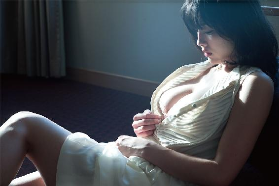

| 撮られたい | |
| 今野杏南 | |
| (2014) | |
性に対するトラウマを抱える、売れないグラビアアイドル・雨野はな。ある日マネージャーに「女としての色気が無いから仕事が来ない」と、解雇通告を受ける。だがある日、気鋭のカメラマン秋崎楓と出会い、彼に調教されていく度に、彼女の奥に眠っていた「女の性（さが）」が目を覚ましていく......。
PHOTOGRAPHER：HIROYUKI SATO
STYLIST：YOKO TANAKA
HAIR-MAKE：MIZUKI MAMEDA
BOOK DESIGN：TO BOOKS DESIGN DIVISION

撮られたい 今野杏南
この物語はフィクションであり、
実在の人物、団体、企業、組織等は一切関係ありません。
吉祥寺駅から徒歩十分に満たない三階建ての、ごく普通のマンションの一室。
十畳ほどのリビングの窓際には、汚れが少しでもついたら目立ってしまうような、真っ白の背景紙が上から吊るされ、薄暗い室内では妖艶なオレンジ色に輝く小さな照明器具だけが、煌々と私の体の隅々を照らしている。
私はその純白の背景紙の真ん中で、真っ白いレース生地の、いやらしく小さな下着だけを纏い、その先にあるカメラを立ち姿で見つめる。
「上を脱いでごらん」
暗闇の方から彼の囁く声が聞こえると、私は自ら細い肩紐に手をかけ少しずらす。
──パシャッ。
乾いたシャッター音が、二人だけの室内に響いた。
その音が耳に入ると、私は下半身をもじもじとくねらせ、真っ白でむちっとした肉付きのいい太腿が、擦り合いながら震えはじめる。
「......じっとして」
暗闇から聞こえてくる彼の声は、さっきよりも鋭く私の耳に響いた。
私は言われるがままに、気をつけの姿勢に戻り、そのまま腕を背中に回すとブラジャーのホックを丁寧に外す。すると私の大きくて張りのある胸が露わになり、オレンジ色のライトに照らされた。
──パシャッパシャッ。
シャッター音が聞こえる度に、私の上半身はぶるっと震え、大きくどっしりとした重量感のある胸も一緒にぶるっと上下に震えた。
私は呼吸が荒くなり、時には「はあっん」と甘い声が漏れる。
そして徐々に足がガクガクと震えだし、立つのがやっとになってしまう。
右手にカメラを構え、暗闇の中からオレンジ色の光の中へと彼は姿を現した。
私は決まったことのように彼の前で跪き、ジーンズに手をかけて、下着と一緒に器用に脱がすと、上に反り返って、いまにもはち切れそうなほどに勃起した彼のモノが、私の目の前で露わになった。
彼はシャッターを押す手を止めずに、撮り続ける。
私は連続的に鳴るシャッター音を聞き、より下半身が熱くなってくる。そして目の前にあるモノを、思いきり口いっぱい頬張った。
彼の大きく硬くなったペニスを私の口が迎える。私の口内は、十分すぎるほどにすでに唾液でいっぱいだ。
私の顎の上下の動きと重なり合うように、吸い付くようなじゅるっといういやらしい音が部屋に響くと、彼は恍惚とした表情を浮かべながら、自分のモノを口いっぱいに含んだ私の顔を、何枚か撮影した。
彼は、荒々しく私の口の中からペニスを引き抜く。私の涎と彼のペニスの先端から溢れ出たものが混ざり、白濁色で粘り気を帯びた液体が、口から床へと垂れている。
そして私を真っ白い床に乱暴に寝かせ、薄っぺらい白いレースのパンツを乱暴に剥ぎ取り、膝を摑んで左右に大きく広げると、彼の大きくそそり立ったモノが、私の陰部へとずぶずぶ音を立てながら、深く入って来る。
私の下半身は、硬直した彼の大きなペニスを丸ごと飲み込んでしまうほどに、びっしょりと潤んでいた。
「ああっっ......」
無意識のうちに漏れてしまう私の甘い声に合わせるように、彼は再びパシャパシャとシャッターを押し始めた。
彼は、両足を力強く左右にＭ字のように押し広げると、私の恥ずかしい陰部と彼のモノの結合部分が露わになる。彼はゆっくりと腰を前後に動かしながら、露わになった恥ずかしいその結合部分にレンズを向けた。
「はあっあぁっ......」
私は上半身を左右に、よがるようにくねらせる。彼は変わらず、ゆっくりと焦らすように、私の浅いところでその硬いモノを行ったり来たりさせている。
「はぁ、もっと......」
焦らす動きに私は下半身がより疼き出し、自ら懇願しながら、彼の腰を手で摑むと自分の腰へ押し付けるように力を加えながら腰を振る。
「もっと......」
乱れはじめた私の声を聞くと、彼は左手で私の腰を摑み、今まで以上により奥へ奥へと、その太いペニスの先端の段差のついた部分で掻き回しながら、陰部の中を犯した。
「はぅぅっ......」
奥まで突き刺さった、太いモノは子宮を突き抜け、私の内臓まで届きそうだった。
大きな物体で下半身が満たされている快感を子宮で感じながら、更に熱い蜜がとろとろと内側から溢れ出て来るのを感じた。
そして、彼は私の腰を摑んだまま前後の動きを加速させていく。しっかりと肉の付いた太腿の割に華奢な私の腰骨が、ずんずん奥へと入ってくる彼のペニスの衝撃で砕けそうになる。
彼は、そんな私を無言で荒々しく犯し続ける。
「いやぁっ、あぁっ、はぁっっ......」
彼の激しい前後の動きで、私は声にならない声しか上げられず、さらにその動きが早まると、私の足は再びぴくぴくと小刻みに痙攣しはじめ、何かを堪えるかのように、冷たい床に爪を立て、悶えるように悲鳴を上げる。
そんな状況の中でも、彼はカメラを持ち続けている。半開きの口でとてつもなく卑猥に見えているであろう私の顔や、上下に大きく激しく揺れている私の乳房、さらに互いの体からしたたる汗で塗れた、私の硬直した腹筋、そして木の幹のように、硬くて太くなった彼のペニスが出入りし、淫らな蜜で入口がぐちょぐちょになっている私の陰部......。それら全てをパシャパシャとカメラに収めていった。
「撮って！ もっと、もっと撮ってくださいっ！」
躯と躯がぶつかり合う、パンパンという乾いた音とシャッター音が響く中、激しく犯されている中で私は、だらしない唾液を口の横から垂らし、声を振り絞るようにそう懇願した。
パシャパシャと鳴るシャッター音が聞こえる度に、私の体は一層疼く。
レンズの奥にある彼の眼差しで、私の全身は熱に犯されてゆく。
そう、私は、彼のカメラの虜になってしまった。
彼に出会って僅か一年で、私の運命と躯は、大きく変わってしまったのだ......。
ハイヒールを鳴らしながら、小走りで高層ビルの間を抜けて行く。
この間まで満開だった桜も、少しずつ散りはじめているようで、目の前に薄紅色の花びらがヒラヒラと舞っては落ちて行く。
久しぶりに入った仕事なのに、何故だか落ち着いているのは、業界四年目の慣れのせいなのか？ 指定された集合時間ギリギリなのに、遅刻したらマズい、なんていう焦りがあんまりない。それは、ちょっと最近仕事のことが、どうでもよくなって来ている自分がいることが否めないからだ。
ふと周りを見ると、新歓コンパと思しき学生達が、群れをなして楽しそうにそぞろ歩いている。これから飲み会なんだろうか？ 垢抜けない新入生らしき女の子は、爽やかそうな先輩と思われる男達にチヤホヤされていて嬉しそうに、でも俯き加減で歩いている。
そんな学生達を見ながら、私は数ヶ月ぶりの仕事現場へと急ぎ向かった。
「はなか？ 久しぶりにグラビアの仕事入ったぞ、え？ 明日だよ明日。急で悪いが、雑誌の企画の撮影で、第一候補だったウチの前田桃が、昨日体調崩してな、お前、どうせ暇なんだろ？ 最近仕事全然なんだから、俺が営業してやったんだよ。な、だから頼んだわ」
マネージャーの山田幹男から、なげやりな声で一方的な電話がかかってきたのは、昨日のことだ。
「あ、場所なんだけど、あとでメールしとくから、一人でいってくれ。俺は安希かすみの付き添いで明日は動けないんだよ。ほら、かすみさ、今ウチの社長イチオシだろ〜、お前担当よろしくなって、もうテレビ、雑誌、撮影会、海外ロケって、俺も休みなくてさ〜、俺も子どもにどっか連れてけ連れけ言われてさ〜、この間の日曜日も......」
聞いてもいないのに長々と愚痴をこぼす山田の電話に、適当に相槌を打って聞き流しながら、私はふと自分のここ数ヶ月を振り返った。
タレント事務所のマネージャーというのは、売れっ子のタレントには力を入れて、私みたいな売れてないタレントを適当に扱うのはよくある話で、数ヶ月仕事のない私にも、山田は同じような扱いだ。
でも別に悔しいわけでも、寂しいわけでもなく、特に何の感情も湧かなかった。これも売れてない時期が長く続いている「慣れ」ってやつなのだろうか？
今日の現場は、表参道の駅から歩いて八分位のところにあるスタジオ。昨日山田からもらったメールに添付されていた地図を携帯で見ながら歩いていると、鈍色に光る「スタジオ・カーサ青山」という看板が目に入る。真っ白く、無機質なそのビルは、どこの街にもありそうな外観で、用がなければ気にも留めないような、ありきたりな建物だ。
「おはようございます！ 今日はよろしくお願いします」
夕方なのに、何で「おはようございます」なんだろう？ と、この業界に入り立てのころは違和感を覚えた社交辞令のような挨拶を、いつものようにしてみたが、誰の反応もない。
慌ただしく、スタッフがスタジオの中を走り回っている。
誰もが自分の仕事に夢中のようだった。カメラマンに怒鳴られながら機材を調整している若い男性スタッフや、書類を見ながら慌ただしく右に左と走っている女性。誰も私のことなんて気づいていないようだ。
私はふと、スタジオを見上げた。
業界では「白ホリ」と呼ばれる、傷ひとつない真っ白い壁。奥には太陽光を取り入れるための天窓があり、そこから春の光が入り込み、白い壁に反射している。異空間のような白い世界で、まさか外にはビルが立ち並び、沢山の人が蠢いて日々の暮らしを送っているなんて思えない、そこだけが無機質で異質な空間だった。
もう撮影が始まっているようで、スタジオ内には小さな音で今流行りのダンスミュージックが流れている。それに合わせるように、カメラのシャッター音がリズミカルに、カシャッカシャッ、カシャッと鳴り響いている。
「あ、あのー」
私は、近くにいるスタッフらしき男性に声をかけた。
「オフィス・フラワーの雨野はなです。今日のグラビアの撮影で来ました」
そう言うと、首に掛けたタオルで汗を拭いながら、その男性スタッフは面倒くさそうに、
「あーー、桃ちゃんの代理の子ね。えーっとなんだっけ？」
チラッと一瞬目があったが、すぐ逸らしポケットに差し込んでいたグチャグチャの書類の中から、「宣材」と呼ばれる資料を探しはじめた。
「あめの？ あまの？ はなちゃんね」
男は宣材と私を交互に見ながら、まるで値踏みをするかのような目線で私を見る。
〈雨野はな、１９８８年生まれ、24歳、身長１５３センチ、スリーサイズＢ85（Ｅカップ）／Ｗ57／Ｈ80〉
そんな内容が書かれてある宣材は、グラビアアイドルが営業の売り込みに使う必須アイテムのようなもので、こんな情報の他に、趣味とか、特技とかと一緒に、事務所が撮った写真が載っている。いわゆるプロフィール資料のようなものだ。そこに載っている写真は、この業界に入り立ての頃に撮ったもので、今の髪型と同じ黒髪のセミロングで写っている。
ウチの事務所は、私のことを「清純派で小柄で巨乳」というので売っていて、プロフィールをざっと読んだ男は、胸元を少しあけた服を着た私の胸と顔を、チラチラと見る。
初対面の男は、今日みたいな胸元の開いた服を着ていると、必ずジロジロとそこを見る。最初は抵抗があったけれど、いまではそれも仕事のうち、と割り切っているからなのか慣れなのか、変な感情を抱いたりはしない。
Ｅカップと書かれてあるが、本当は八十のＣくらい。事務所の方針で少し大きめに書かれている。だから仕事の時には、より胸が大きく見えるような服を着て出かけるように、とマネージャーからは言われている。
「じゃあ雨野さん、あと三十分位で撮影だから、あそこの部屋使って着替えて」
そう言われて、顎で指示された部屋に向かい、おはようございますと言いながらノックをしてドアを開けると、今日の撮影のスタッフと女の子達でその部屋は賑わっていた。八人位の女の子と、三人程のスタッフが部屋にいて、撮影を終えて帰る前に談笑しているグラビアアイドルらしき子達に軽く会釈をして、ソファに座った。
スタイリストに声をかけられ、今日着る水着を渡される。着替え終わって待っていると、近くにいた女のスタッフから、
「あ、次の撮影の人ですか？ メイクさんいるので順番にお願いしますね」
と言われて出番を待つ間に、昨日マネージャーから来たメールを読み返す。
「明日の撮影は、情報誌『ドキドキＭＡＸ』の企画で、『２０１４年 僕たちの、女の子とセックスしたくなる瞬間ベスト10』っていうののイメージショットの撮影。まあ、お前がメインで出る訳じゃなく、他の事務所の子も四、五人いるみたいだし、小さくだけど名前出るからさ。本当は川井が出る予定だったんだけど、アイツ体調壊したみたいでさ、本当は別の企画で、あいつがメインで成立してたんだけど、急遽内容変更ってことでこんな企画になったんだってさ。お前さ、全然仕事来ない中で取って来たんだから、しっかりやってよ！ じゃあよろしく」
前の撮影が押しているみたいで、私は携帯の画面を溜息まじりで見ながら、マネージャーから送られてきた今日の仕事の内容を確認し、その内容に歯痒さを覚えた。
確かに私は売れないグラビアアイドルだ。でもこのマネージャーは最近、二言目には、メールでも電話でも、「お前はだめだ」、「お前は売れない」というのを端々にチクリチクリと言いながら、こういう私じゃなくてもいい仕事、誰でも出来る仕事を取ってくる。
イラッとするが、売れてないのは事実なのでしょうがない。でもそんな仕事を重ねる度に、私の価値って何なんだろう？ なんでこの業界で働いてるんだろうって思うようになってきた。
実際、私はバカ売れしている訳でもないし、かと言って、全く仕事が無いアイドルでもない。仕事は、一週間に一回あるかないか。少ないときは一ヶ月全く無い時期もある。しかも雑誌の巻頭グラビアとか、ＤＶＤの撮影の仕事とか、そんな仕事ではなく、男性雑誌の企画ページで、ちょっとエッチなテーマの記事とか、ウチの事務所の子の代役とか、そんなのばかりだ。
いかにも中途半端な、はっきり言えば四年目なのに何も成果や足跡を残せずにいる、そんなグラビアアイドルが私。
グラビアアイドル続けたいの？ 有名になりたいの？ 本心のところ、私はこの世界で成功したい。けど、何の足跡も残せない自分を苛立たしく思い、思い通りにいかない人生を歯痒く感じ、たまにプレッシャーで押し潰されそうになる。
そんな重圧から逃れるために、マネージャーに当たっている自分がいた。仕事がないのは事実だし、それを節操なくガツガツと言ってくるマネージャーには腹が立つ。でも本当のことだからしょうがない、 と悟っている私もいた。
「雨野さんー、お願いしますー」
バタバタと動いているスタッフの一人が、私を呼びに来た。慌てて私は撮影に向かった。
「はいー、じゃあ撮るよ、宜しくお願いします」
撮影続きで疲れているのか、その日の担当カメラマンは面倒臭そうに、流れ作業のようにシャッターを切りだした。スタジオ内には静かにカメラのシャッター音が鳴り響く。その音に合わせて眩しく光るストロボ。真っ白いスタジオが、その光が瞬く度に、より白く見える。ハンガーに掛かった綺麗な衣装や、メイク道具が光に反射してキラキラ光っている。スタッフ達は、私を試すようにその視線を私の身体に向けている。コソコソと、首を傾げながら私の方を見ながら喋っているスタッフもいる。
カメラマンに言われるがまま、色々なポーズを取る。何度かシャッターを切り終えるとカメラマンは、
「あ、はなちゃん、だっけ？ もうちょっとさ、エッチな表情できないかな？ こうさ、男が欲しいの、みたいな表情？ 物欲しそうなウルウルした感じ頂戴よ〜、ちょっとエッチな企画の撮影なんだからさ〜、色気のある表情欲しいよね〜」
そう言って再び撮影を始めた。
「はい......。すみません......」
私に求められている、「エッチな表情」とやらを、自分なりにやっているつもりなのだが、カメラマンは「う〜ん、なんか違うなぁ」と言いながらシャッターを切り続ける。
奥ではスタッフが、今撮影した写真をパソコンの画面で一枚一枚チェックしているようで、無表情で私と画面を交互に見ている。
私はカメラマンに言われるがまま、色々な表情をしたりポーズを取り続けた。
「すいませ〜ん、ちょっと後ろ押してるので、巻きでお願いしま〜す」
スタッフの大きな声が聞こえると、カメラマンは、
「オッケ〜、じゃあはなちゃん、こんな感じでいいや、お疲れさま。次の子スタンバイよろしく〜」
と、軽い感じでそう言うとカメラを置いて、スタッフと談笑をしはじめた。今日の私の撮影は、良かったのか？ 悪かったのか？ カメラマンをはじめ、どのスタッフからも何も言われることなく終わってしまった。
「お疲れさまでした〜」
「あ......、お疲れ様でした......」
業界の中で誰もが使うその言葉を、すれ違ったスタッフに無表情で軽く言うと、控え室に向かった。
「作り笑顔くらいすればいいのに......」と、心の底でもう一人の私が私に呟いてるようだった。仕事が欲しいんだったら、ウソでも愛想よくして、男性に好かれるような仕草とかすればいいのに。そうすれば、少なくとも今よりは仕事が来るはずだ。でも私は、暗くて不器用で、愛想のない、いかにもタレントとしては可愛くない女の子。
この業界は、仕事を持って来てくれる人に対して、好印象な方が絶対いい。マネージャーとか、カメラマンとか、雑誌の編集者とか、そんな仕事をタレント事務所に持って来る人だって人間だ。愛想の無い女の子よりも、愛想がある子と仕事がしたいに決まっている。
全員じゃないけど、売れてるグラビアアイドルの子は、こんな人たちに好かれるテクニックを駆使して仕事を取っている。もちろん自然体でやってる子もいるだろうけど、仕事が欲しいから、本当の自分じゃないのに仕事の顔をして愛想をふりまいたり、猫をかぶっている子もいる。でもそれも仕事を取るための技の一つだし、噓でも愛嬌よくて仕事が取れれば、それが正しい。
この業界は売れた者が勝ち。仕事取るための笑顔の一つも出来ない私って......やっぱりなんでこの業界にいるんだろう？
「雨野、ちょっと話がある、今時間あるか？ 奥の会議室空いてるかな」
次の日、忘れ物を取りに行くために事務所に立ち寄り、ソファで今月のスケジュールの確認をしていると、山田が表情も無くそう声をかけてきた。
私がデビューして以来の付き合いになる、マネージャーの山田幹男は四十代前半の「いわゆる普通のサラリーマン」のような風貌だ。黒縁メガネをかけて、まだ白髪もまじっていない黒髪を、いつも綺麗にセットしている。
この業界、特に芸能事務所というと、華やかな印象が強いが、マネージャーの仕事というのは、結局他の業種で言うところの「営業」と同じだ。
テレビ局に行ったり、雑誌の編集部に行ったり、イベント会場で色々なメディア関係者の人に頭を下げたりして、自分の抱えているタレントを売らないといけないわけで、男性はスーツをしっかり着ていることが多い。
だから山田も、いつもスーツを着ている。一七五センチくらいの、男の人の平均身長よりは少し高めなのだが、ガリガリで骨ボネしたその体型で、一見頼りなさそうで弱そうな印象を受けるが、これがまた外見と裏腹に、まったく逆の性格をしているのだ。
「話って何ですか？」
会議室に入って椅子に座り、スケジュール確認の続きをしようと、携帯の画面を見ながら投げやりに言った。
「はぁ......お前なぁ......。それが人の話聞く時の態度か？」
溜息まじりの山田の言葉に、私は聞く耳も持たずに、ただ光る画面だけ見つめていた。仕事が全然ないせいか、私に対する山田の態度が最近とてもいい加減になっているような感じがして、つい私もこういう態度を取ってしまう。私がいけないことは自分が一番よくわかっている。でもここで「すみません」の一言も言えない。なんてひねくれてる女。
同じ事務所には、私より後にデビューしたのに、雑誌の表紙を飾ったり、ＤＶＤを出したりしている子もいる。それなのに私は、昨日みたいな「誰かの代わり」の撮影だったり、紙面に載っているんだかいないんだかわからないような、そんな仕事ばかり......。もちろん、スケジュール帳が仕事でびっしり埋まっているなんてことは、一度たりともなかった。
そんな状況に八つ当たりするかのように、周りの人間、特に仕事で一番近いマネージャーに対して、ぞんざいな態度をとってしまう。
「......まあ、いいや。同じこと何度注意しても直らないからな。四年も見てきてほんとにお前は成長が見えないんだよ。そういう態度だから、いつまでたっても仕事が来ないんだぞ」
「......」
私は何も言えず、携帯の画面を見ながら黙って山田の話を聞いていた。
「おい、雨野、お前さ、何で自分が売れないかわかるか？」
山田が突然、そんなことを訊いてきた。
売れない理由......そんなことは何度も何度も考えたことだ。仕事が終わり家に帰り、一人になった時、いつも私は悶々と考えていた。何で私は売れないの？ もっと顔が可愛かったら？ もっと胸が大きかったら？ 誰にでも笑顔をふるまうことができたら？ でも、いくら悩んでも、私には答えのでない問題だった。
答えが出ているなら、こんなに売れないことで苦しんでいない。
「......」
唐突に本質を突かれたような質問をされて、私は答えることができずに、黙ってしまった。
黙ったというよりも、「売れないグラビアアイドル」という事実を突きつけられて、心が抉られたようで、言葉が出てこなかった。
「はぁ......。全くなぁ......。何で自分のことがわからないんだよ。お前の悪いところはそもそもそこだ。自分自身を全く理解してない。理解していない上に、売れてないという事実から逃げて、いままでなあなあでやってきたことだ。理解してないから自分に足りないところが見えなくて先に進めない。お前は、仕事先でも愛想は無いし、会社の中でも人に感謝するっていう態度が無い。まあそれもお前の売れない理由だが......」
言いづらいことがあるのか？ なかなか核心を突かずにモジモジと話す山田に対して、私はだんだんイライラしてきた。
「もうはっきり言ってください！ 私の売れない本当の理由って何ですか？」
机をバンッ！ と叩きながら、私は山田を睨むようにしてそう言った。一瞬私と目があった山田は、ふっと意識的に目線を外しながら、溜息を一息ついて切り出した。
「......もうこの際だから、正直に言うぞ」
眼鏡を触りながらそう言ったマネージャーの表情が、とつぜん凛々しさを帯びた。
山田は、今でこそ私のような売れないグラビアアイドルを担当しているマネージャーだが、数年前は数々の売れっ子アイドルを世に送り出して来た敏腕マネージャーとして、業界でも有名だったと噂で聞いたことがある。
山田の采配で、売れないグラビアアイドルが一躍人気になったこともあったりして、会社の社長からもかなりの期待をされていたらしい。今バラエティーの司会などで引っ張りだこの女優・高峰ゆりも、もともとグラビア出身で、山田が担当していてブレイクした、って昔事務所の先輩が言っていた。
そんな山田が、いつもあまり見せない深刻で真摯なまなざしを向けながら言った。
「あのな、雨野な、ハッキリ言うぞ。態度が悪いとか、愛嬌が無いとか、そういうことを俺がよくお前に言ってるが、実はどうでもいいんだ。態度悪くても、愛嬌無くても、売れる奴は売れる。お前がグラビアアイドルとして芽が出ない最大の理由はな......色気だよ。お前には色気が足りないんだよ。グラビアアイドルしての。水着着て撮ってるのに、お前の写真はそういう匂いが全く感じられない」
こんな真剣に山田に話をされたのはいつぶりだ？ そんなことを考えながら、私はいつになく真正直な表情を浮かべる山田の口から出て来た言葉に、思わず返した。
「い......色気、です、か？」
「そう、そうだよ、色気だよ。お前には、色気っていうものが、微塵も無い。なあ、雨野、そもそも、グラビアアイドルって職業が、何でこの世の中に存在するか、わかるか？」
グラビアアイドルが存在する理由？ そんなこと私は、この仕事を初めてから一度も考えたことなんてない。携帯を触っていた手を止めて、ふと考えてみた。グラビアアイドルって、何なんだろう......。少しの沈黙を破り、山田はこう言い放った。
「あのな、雨野、グラビアアイドルってのはな、男を興奮させないといけないんだよ。つまりな、性の対象としてみられなきゃいけないんだ。写真とかＤＶＤを見て『コイツとヤリたい』って思わせないといけないんだ。お前、男が何で金だしてわざわざグラビアの写真集買ったり、ＤＶＤ買ったりしてるんだと思う？ それ見て、エロいこと妄想するからだろ。グラビアイドルの写真に、芸術性とかそんなものを求めてる男なんていない。エロいか？ 興奮するか？ 男が求めているのは......、それしかない」
「......」
「だからな、性の対象にならないようなグラビアアイドルなんて、この世界では全く価値なんてないんだよ」
「......はい」
「この際だから単刀直入に話すぞ。実はな......、この間役員を交えた会議があってな。事務所の中で、お前をこれからどうするかって話が出た」
私はちょっと驚き、山田の目を見つめた。
「え......？」
「もう四年だろ？ 四年も経って、仕事もロクにないんじゃ、事務所としてもこれ以上抱えきれないんだよ。まあ俺もさ、お前と付き合いが長いから、一応反論はしたぞ。でもな、『雨野は全然仕事が来ないじゃないか』と役員に言われて、返す言葉が無かったよ......。だからな、申し訳ないが、半年時間を与える。他の事務所を探すなり、辞めるなり、彼氏と結婚するなり何でもいい、今後のことを考えておきなさい」
思いもよらないその話に、目の前が真っ暗になった。
え？ どういうこと？ 半年間時間を......与える？ 今後のこと？ 他の事務所？ 辞める？ え？ つまり......クビってことなの......かな......。
最初山田の言っていることが、何だかよくわからず、茫然としていた。
え？ 私は必要ないってことだよね？ 私、この世界から捨てられるんだ。求めてもらえないんだ。私は反論もできず、涙すら出なくて、微かに頷くのがやっとだった。
「キツいこと言うようだがな、雨野、これもお前のためだ。ハッキリ言おう。お前、これ以上この仕事は厳しいと思う。ＯＬとか、まだ若いんだし、他にも道は色々あるぞ。結婚して彼氏に養ってもらってもいいだろうし。俺もお前とは、長い。なかなか言いづらかったんだがな。こういう話はお前にとっても早い方がいいと思って、今日話したんだよ」
私のため？ 私のためって言っておきながら、結局クビってことじゃない。
私は山田の言う「やさしさ」とやらに腹が立ったが、それよりも何よりも、「自分の存在が必要とされていない」という事実を突きつけられたことに、心を切り裂かれる気分になった。
「......わかりました......。考えておきます......」
私はそう言うと、椅子に置いた鞄を持ち上げ、山田を一瞥することなく事務所を後にした。
私は、この季節が好きだ。柔らかな日差し、優しく身体を通り抜けて行く風。
一年の中でもこの季節が大好きだ。花が満開に咲き乱れる季節。私の名前が「はな」だから、何故かこの季節は自分のためにあるように思える時がある。
でも、今日の陽光は、私の気持ちを嘲笑うかのように見えてならない。
「今後のことを、考えておきなさい」
山田から突きつけられたその言葉が、何度も何度も私の頭を巡る。そう、これが私に突きつけられた現実。うすうすは、いつかは言われるとわかっていたけど、リアルにその言葉に向き合わざるを得ない状況が唐突に訪れ、私は怒りとか、悲しさとか、色々なものを通り越して、何も考えることができなくなった。
そして、山田に言われたもう一つの言葉......。
「性の対象にならないグラビアアイドルなんて、何の商品価値も無い」
男にとって、グラビアアイドルは性の対象......。そんなことはこの仕事をやると決めた頃からわかっていた。けれどいざ、そういう気持ちで仕事と向き合おうとすると、私の身体が拒否反応を示した。全身がこわばり、体温がスーっと下がって行くような感覚になった。
そしていつも、ある光景が脳裏に蘇るのだった。
私は、千葉県の郊外の、人に言っても「それどこ？」って言われる、小さい小さい街で生まれ育った。
駅前には古くからあるパチンコ屋と、常連ばかりしかいない小さな居酒屋と、地方によくある、夜中には閉まってしまう、コンビニのような外見をした食料品店しかない、そんな寂れた街だ。商店街があるにはあるが、店のほとんどはつぶれており、古びた靴屋と魚屋ぐらいしか営業をしていない、いわゆるシャッター商店街だ。
私の家は、そんな商店街から細道を入ったところにあった。
母親はスナックを経営しており、自宅の一階が店になっていて、二階で私と母、そして父の三人で細々と暮らしていた。
父は近くの自動車工場で、整備工として働いていた。仕事に対して真面目で、私の記憶の中では、父が仕事を休んだことはない。実直で寡黙な、そして優しい父であった。
私はそんな父が大好きで、休みの日になると、近くの公園に行ったり、自転車で近くの大型スーパーに連れて行ってくれたりした。父は私に決して怒ることはなく、私がいたずらをしても、笑顔で諭してくれるような、穏やかで、愛溢れる人だった。
そんな父とは対照的に、母は仕事柄もあってか、洋服も化粧も派手で、よく喋り、気性の荒い性格だった。今考えると、水と油のような二人が何で結婚したんだろう......って不思議に思う。
いつも褒めてくれたり、抱きしめてくれる父と違い、母は私に対して、とても厳しかった。優しい言葉をかけてくれた記憶はなく、反対に、
「バカ！」
「ダメねアンタは」
「誰ににてそんな醜くなったんだろうね」
というような言葉を浴びせた。しかも父親の聞いていないところで、だ。
気性の荒い母であったが、接客業をしているせいか、外面が良く、スナックにはいつもお客さんがいた。どのお客も常連で、母目当てで夜な夜な大声で騒いでいたのを何となく覚えている。
父と対照的な性格をしていた母は、いわゆる美人だった。目鼻立ちが整い、顔の輪郭がシャープで、どこかエキゾチックな雰囲気もあった。何かのミスコンで優勝した、という話も昔父から聞いたことがある。
そんな母は、ある日を境に、スナックの営業が終わると、常連と思しき男性と夜にでかけるようになった。父は「あれも母さんの仕事のうちだから」と言い、怒りもせずに母の行動を放任していたようだ。
母の帰って来ない日が、最初は一ヶ月に一度程であったが、それが一週間に一度、三日に一度と、日を追うごとに増えていった。私も幼かったので、おぼろげな記憶だが、店が閉店しそうなころに階下へ降りて行き、そっと店を階段から覗くと、いつも違う男の人と仲睦まじく話をしている母の姿を見た。
スナックでの母は、私が日常で見たことの無い表情をしていた。
子どもながらに、何となくそんなことを感じた。いつもの母の顔とは違う、違和感のある表情。それが、一人の女としての顔、欲望に溢れた、雄猫を求めるような、雌猫の顔だと気づいたのはしばらく先のことだ。
母の、男を連れてどこかに行ってしまう行動は、約半年続いた。
そして忘れもしない、ある日曜日の昼下がりのことだった。
相変わらずの朝帰りを続けていた母が、唐突に私にこんなことを言った。
「はな、これからは私と二人で暮らすことになったの。アンタね、私は仕事なんだから、迷惑かけないで、自分のことは自分でやるようにしてね」
最初私は、そんな母の言葉に戸惑い、何を言っているのか理解できなかった。
「お父さんとは別々の暮らしをすることにしたの、わかる？」
そう告げられたのだが、子どもの私に、それを現実としてすぐ直視し、受け入れることなど出来なかった。今まであたりまえのように私の側にいてくれた父。世界でただ一人、私のことを理解し、味方になってくれた父が、忽然と私の前から姿を消してしまった。
父と母は仮面夫婦だったのだ。私が物心ついたころから、二人が仲良く会話しているところなんて一度も見たことがなかった。父は、母親の浮気癖に愛想を尽かして、離婚することを決意したということを、数年後、父親と同じ仕事をしていたスナックの常連客から聞いた。
それから私は、父がいなくなった部屋で、母と二人で暮らすことになった。父がどこに行ったのか？ なぜ帰って来ないのか？ そんなことは怖くて聞くことが出来なかった。
その日も私は、いつものように、階下で常連客と談笑する母の声を、居間で聞きながら、夕食を食べていた。
私のことをとても可愛がってくれていた父がいなくなってから、私はいつも、一人だった。母の用意した冷めきった夕食を食べるのも、テレビを観るのも。お笑い芸人が大声を張り上げ、テレビの中では観覧客が楽しそうに笑っている。それを私は、まるで異世界のことのように見ていた。
父親のいなくなった部屋。男に媚びへつらうような声を出しながら下のスナックで笑う母。そして私は、一人。
初めてそれを見たのは、私が小学三年生の頃だった。
その日見たことは、十数年も経った今でも、私の脳裏に焼き付いている。
うだるような、エアコンが全然効かない暑いある夏の日のことだった。あまりの暑さに私は寝付くことができず、冷蔵庫に麦茶か何かを取りに行こうとしていた時に、半開きになっていたドアの向こう、店へと続く階段の下から、何かうめき声のような、獣の遠吠えのような声が漏れ聞こえてきた。
仕事中は用がない限り、お店には降りて来ちゃだめ、と日頃母親からは口酸っぱく言われていたのだが、私はまるで引き寄せられるかのように、一歩踏み出すと木がしなって音が出そうな階段を、ゆっくりと、ゆっくりと降りていった。
初めて見た、光景だった。
階段の途中、スナックの一部が覗けるような、壁に設えられた木の格子の間から、男と女が抱き合っているのが見えた。
二人は裸で、互いの身体に互いの腕を絡ませていた。
男は、低いうなり声を上げながら、一心不乱に腰を動かしていた。一方の女は、長い黒髪を垂らし、何かを我慢するかのように、下を向き、時々しゃくり上げるような声を出していた。
男の腰の動きがだんだんと激しくなって来ると、女は髪を振り乱し、背中を大きく反らせ、言葉にならないような、鋭い悲鳴のような声を出す。その声は、男の腰の動きの激しさが段々増すのに合わせるかのように、悲鳴のような、乱れた声に変わっていった。
指をくわえ、自分の乳房を弄りながら、男の激しい動きに応えるような淫らな声を出していたのは、母であった。私の目の前にいる母は、全裸で全身汗のような、何かの体液のようなものにまみれ、大股を広げて男のされるがままになっている獣のような姿であった。
私が見たことのない、褐色で筋肉質の男にいたぶられている母親の姿を、私は格子の影から見ていた。気づけば、手すりを握っていた手の平は汗でベトベトになっていた。
見てはいけないものを見ているんだ、ということはわかっていたが、何故か身体が動かなかった。
突き上げるかのような男の腰の動きが、さらに激しくなると、母親は意識がどこかにいってしまっているのかのような表情で、半開きの目でオウオウと何かを言いながら、自分の股間のあたりをまさぐっていた。
男は母親の乳房を激しく揉み、顔に吹き出た大量の汗を手で拭うと、テカテカと光ったその指を母親の口にねじ込み、さらに腰の動きを加速させていった。
カウンターに座り、男のピストンのような運動に合わせて、自らも腰を振りながら、苦悶の表情を浮かべ、身体を弓なりに反らせ、もっと！ もっと！ とうわごとのように言う母。男と女の声と声の間から聞こえて来る、肉と肉がこすれるような、クチュクチュとした音。
息づかいが荒くなるのに比例して、男の腰の動きはますます激しくなっていく。
母は、「もうダメ！ もうダメ！ おかしくなっちゃう！」と男に懇願しているが、決して逃げる訳でもなく、自らも激しく男の腰の動きと同じテンポで、腰を上下に動かしたり、くねらせる。
白目を剥いて悶える母は、絶頂に達したかのような声を出したかと思うと、半分開いた唇からブクブクと泡を吹いた。男はそれを見届けるかのような、半笑いの表情を浮かべると、激しく動かしていた腰を引き、自らの赤黒く光った鈍色の男性器を握りしめた。
そして身体を少し痙攣させ、母のお腹あたりに白く濁った液体のようなものを出した。
母は、うつろな目のまま、男の前で跪くと、白濁の液体の付着した男性器を、恍惚の表情で口にくわえ、うわごとのように、「美味しいわ......。美味しいわ」と言いながら舐め続けていた。
その光景を見ていた私は、一歩もそこから動くことができなかった。今までに見たことのない恐ろしい表情と、今までに聞いたことのない、母親ではなく「女の声」を出し、男を求めている母の姿。そんな「女」としての母を目の当たりにした私は、その日初めて、男と女の情交というものを目撃した。
今まで見たことのないような、衝撃的な光景を見たその夜から、度々下階から、男と女が求め合う声が漏れ聞こえて来た。聞くまいと布団をかぶり、耳を塞いでみるけど、こぼれて聞こえて来る母と男の求め合う声。そんな声を聞く度に私は吐き気がして、寝つけない夜を過ごした。
私は、母が毎晩男を求める、雌猫のような女だなんて考えたくもなかった。でも母は男をとっかえひっかえしていた、ただの淫乱女だった。下から聞こえてくる声は、男の声だけ日ごとに違っていた。聞いてはいけない、耳をそば立ててはいけない、意識してはいけない、と子どもながらに思いながらも、私は母に対する憎悪の気持ちの後ろに、その行為に対しての好奇心が芽生えていたのかもしれない。
戸惑いと葛藤を抱えながら、私は母との生活を送っていたが、そんなことは母親には口が裂けても言うことなどできなかった。そして私は母を軽蔑していた。小学生の私がいるのも構わず男と交じることをやめなかった母......。
そして私は、性というものに対して、恐怖と嫌悪を抱き、成長していった。
中学に入ると、周りの友達との会話の中で誰が誰と付き合っているとか、隣の中学の先輩と隣のクラスの子が......、みたいな話がよく出るようになった。
もちろん、そこから初体験の話になったりもした。クラスの誰々はもうヤッたらしいとか、何組の誰々がヤリマンだとかいう噂を耳にしたりした。周りの友達でも、ちらほらと初体験を済ませた、という子がいたりして、みんな興味津々でどうだった？ と聞いていた。
セックスに対して好奇心というよりも、恐怖心を抱いていた私だったので、友達との会話がそっちの話になると、話を逸らしてみたり、会話の輪から抜け出そうとした。
周りの女友達で初体験を済ませた子が、年を追うごとに増えていった。周りには「はなはヤラないの？」みたいなことを聞かれたりするが、いつもお茶を濁していた。
でも、そんな私にも、いよいよ初体験をする日がやってきた。
それは高校二年の夏のことだった。
相手は、当時付き合っていた同じクラスの彼氏だった。彼は茶髪に腰パンしてるようなその辺によくいる感じの普通の高校生で、彼の方から一目惚れしたからと直接告白されて付き合うことになった。
私にとっては、人生で初めての彼氏だった。一緒に登下校したり、学校帰りや日曜日にデートしたり、普通の高校生のカップルのようなことを一通りやって、普通の高校生のような流れで、その時を迎えた。
すぐ耳のそばで鳴いてるかと思うくらい、蝉の声が響く夏休み真っ只中の、八月中旬のことだった。
「今日親誰もいないからさ、家来ていいよ」
突然そう言った彼の顔が、暑さのせいなのか、少し赤みを帯びていた。彼の言葉の意味がわからないなんてことはなかった。付き合って半年もたてば、そろそろその時が来るかと予想していたし、周りの友達はヤったヤってないの話題で持ちきりだ。まあ、そんな中私は、その話題には入らずただ聞いて頷いているだけだったのだが。
「じゃあ......行こうかな......」
その行為をする、うんぬんよりも、断るのはどうなのかと思い、私が返事をすると彼はとても嬉しそうだった。
彼の部屋に入ると、高校生独特の、学校の臭いと男の人の臭いと汗の臭いがして胸がドキッとした。部屋の中は、雑誌や何やらで散らかっており、窓際には、朝起きたそのままの布団が重なるベッドがあった。彼は、
「わりいわりい、散らかっててごめんな」
といいながら、二人が座れるスペースを作って、コンビニで買って来たお菓子を開けて雑談をはじめた。
緊張しているのか、なぜか普段と違ってよそよそしい彼は、どうでもいい学校の出来事とか、友達とカラオケに行った話などをし続けていた。私は心臓の鼓動が速くなっていたが、緊張していることを悟られまいと、平然を装って彼の話に相槌を打っていた。
それは、ふと、会話が途切れた瞬間に始まった。彼は、唇を私の顔に近づけてきた。彼のぷにっとする柔らかい唇に、私の唇が触れたと同時に、彼の舌が私の歯と歯を割って入ってきた。
私の体はビクッと震えた。私はその舌を拒否するように、ただただ彼の体を離そうとしたが、彼はやめるどころかより一層口の中を舌でいっぱいにしようとした。そして私をベッドに倒した。
激しい息づかいをしながら、彼は私の服を上から順番に脱がせる。そして下着の上から乳房を揉みはじめた。特に気持ちいいという感覚はなかったが、私は、
「あっ......」
という声を漏らした。その声に反応したのか、彼は貪るように私の乳房を揉みながら、ブラジャーを外した。そしてゴツゴツした手が、私の内腿と内腿の間に入って来る。
どこを触ったらいいのかわからない、という感じの手つきで、彼は一生懸命私の陰部を指でさすりはじめる。そしてゆっくりと、私の薄手の下着に手をかけると、彼も自分の着ていたシャツとズボンを脱ぎ出した。
そこからは、何をされたかあまり記憶がない。ただ、覚えているのは、初めてなのに、彼のペニスが入ってきた瞬間はそこまで痛くなかったということだ。よく血が出るとか死ぬほど痛いとか同級生の子が言ってたが、そんなことなかった。
私の上で一生懸命に腰を動かしている彼の顔が見えた。何かを我慢するかのような表情を浮かべ、時々「気持ちいい？」と私に聞いて来た。私は、
「う、うん」
と応えてみたが、本当は、気持ちいいなんて全く思っていなかった。私はただ、弱った虫のように彼の肩に触れているだけだった。
その時、脳裏にあの光景が何故か蘇った。そう、貪るような表情で男を求めていた母のことだ。何で？ 何でこんなことが気持ちいいの？ 私には全く理解できなかった。
行為を終えると、満足げな表情を浮かべた彼はそそくさと下着を履き、
「暑いだろ？ ちょっと俺、下にコーラ取って来るわ」
と白々しい感じで言い残して、部屋を出て行った。
部屋に一人残された私は、白い壁を見つめながら、また母のことを思い出した。母は何でこんなことに夢中になっていたのか？ こんなこと、汚らわしくて、男にされるがままなことじゃない。こんなことをしたいが為に、お父さんを捨てて、他の男と遊び狂ってたの？ いつもと違う匂いの布団を頭までかぶり、痛みを覚える下腹部を押さえながら、沸々と沸き上がる、怒りに似た感情を覚えた。
そして、この初体験を通して、母のことががますます嫌いになった。
初体験の彼とは、数ヶ月付き合った後、どちらからともなく、自然消滅のような形で別れた。何度かセックスを重ねたのだが、私は周りの友達が言うような、気持ちいいとかイクとか、そういうことは感じることが出来なかった。
血気盛んな年頃だった彼は、何度も私の体を求めては来たが、私はセックスそのものには何の興味も抱くことができなかった。
言ってしまえば、彼が求めているから、しかたなしにその気持ちに応えて体を許していた、という感じだった。彼に嫌われたくないから、拒否せず受け入れていた。
でも、その嫌々な私の気持ちを見透かされていたのだろうか？ 段々と向こうから求めなくなり、会う回数も日を追うごとに少なくなって、最終的にはお互い連絡を取らなくなってしまった。
周りの友達の噂では、私と付き合っていたころから、隣の高校の後輩と浮気をしていたそうだ。セックスに淡白な私に満足出来なくなってしまったからなのか？ 本当の理由は知らないし、そのころは彼に対する愛情も無くなってしまったし、嫉妬とかそういう感情も抱かなかった。
母親との関係は、相変わらずぎくしゃくしていて、高校に入ってからは、ほとんど会話という会話をせずに過ごした。
本当は学校で禁止されているバイトを週四回して、遊ぶお金とか、洋服を買うお金は自分で稼いでいた。結構時給のいいバイトだったから、周りの友達に比べると自由に使えるお金を持っていたと思う。学費は母が払っていたが、それ以外は自分で賄っていた。
高校二年の秋ぐらいになると、友達との会話は、進路の話が多くなって来た。高校を卒業したら就職するという子や、大学に進学するために受験勉強をするという子、フリーターでもしばらくしようかな？ という子がいた。県内でも中の下位の私の高校の大学への進学率は、多分二割ぐらいだったと思う。
「アンタ、高校までは出してあげるけど、それから後のことは自分でやりなさいね」
そう口癖のように母親から聞かされていたので、私も高校を出たら就職でもしようかな？ と考えていたのだが、大学には奨学金制度というものがあることを知り、将来のこととかを考えて、大学受験をすることにした。中の下位の高校の、中の下位の成績だった私は、
「雨野、大学行くのか、その成績だと行けるところあんまり無いぞ」
なんてことを担任に言われていたが、何とか東京都内の大学に合格した。予備校なんて行けるお金は当然なかったのだが、週四でやっていたバイトを減らして、今まで洋服に使っていたお金を参考書などに回して、独学で大学に滑り込んだ。
家から電車で一時間半かかるその大学は、通っていた高校と同じで、中の下位のレベルだった。家から遠いこともあったし、母親の元を早く離れたいという思いもあったので、大学に入るなりバイトを三つ掛け持ちして、一人暮らしを始めることにした。
カラオケボックスの店員と、スーパーのレジ打ち、そしてバイトで知り合った大学生から教えてもらった、派遣のコンパニオンのバイト。中でもコンパニオンの仕事は四時間位で一万円近く稼げる割のいいバイトだった。
通っていた大学は、あんまり授業に出なくても単位が取れたので、私は学校にほとんど行かずに、バイト先と家を往復する毎日を過ごしていた。たまに息抜きで仲良くなった大学の友達とお茶をしたり、飲みに行ったり、買い物をしたりしたが、バイト漬けの毎日だった。
一人暮らしをはじめると、生きていくには意外とお金がかかることがわかった。家賃はもちろん、光熱費に食費、交通費や飲み代、ケータイ代。でも私は一人暮らしが楽しくて仕方なかった。あの、大嫌いな母親の元から離れることができたからだ。
母からは全く連絡は来なかった。私も特に話すこともないので、電話したり実家に帰ったりすることは無かった。なので大学時代は、母親の存在すら、私の心から消えかかっていた。周りの友達は、母親と仲良くしている子がほとんどで、一緒にお茶したとか、銀座に買い物に行ったとか、そんな話をよく聞いたが、羨ましいなんていう気持ちは全く抱かなかった。それよりも、あの母親から離れて暮らすことが出来る、生活にとても満足していた。
掛け持ちのバイト生活を三ヶ月ほどしていたが、時給の安いカラオケとレジ打ちを辞めて、コンパニオンのバイトに専念することにした私は、週五日〜六日のバイトを入れて、月収が二十万〜二五万位になっていた。今考えると、人生で一番稼いでいたのはあの頃だったかもしれない。
そして友達の紹介で、モデルや写真の仕事を始めたのもその頃からだ。コンパニオンのバイトに比べると、お金はあまり貰えなかったが、拘束時間が短いので、最初はちょっとしたお小遣い稼ぎのつもりで始めた。
家の近くのコンビニに行けば、私の知ってるグラビアアイドルの子が表紙を飾っているのが目に入る。羨ましくて仕方なかった。私が売れずに悩んでいて、マネージャーからクビを宣告されて、今後のことについて悩んでいることなんて、誰も気にしないのだろう。そんな風に思いながら、雑誌コーナーをぼーっと眺めていた時、
「はな」
と悠斗が声をかけた。私はいつも彼の顔を見ると、肩の力が抜けて自然に笑顔になる。
「仕事お疲れ」
「うん。悠斗も」
私は彼の左腕にしがみつきながらそう答え、チョコレートのお菓子とポテトチップス、それにお茶を買って、二人でコンビニを出た。
私と付き合い初めて三年になる彼、川井悠斗は共通の知り合いの紹介で出会った、私より六つ年上で今年三十歳になる。知り合ってすぐに意気投合して、すぐに付き合うことになった。
彼は、日本人なら誰もが知っている、某大手電機メーカーの営業マンだ。身長は一七五センチほどで、一五二センチの私からしたら、とても大きく感じたけれど、体の線は細く、女性が好きそうな甘い顔をしている。
彼と知り合った当時、私はまだ大学生活にやっと慣れて来たころで、芸能活動のようなことを始めたばかりだった。ある日、同じグラビアアイドルをしている友達から、
「今日年上のエリートサラリーマンと飲むけど来ない？ 広尾のお店貸し切ってるんだ」
という連絡が入った。私は合コンなんてあんまり興味もないし、男の人とわいわいお酒を飲んだり、なんかそういった軽い場に行くのに抵抗があった。
どうしようかな〜なんて曖昧なメールを返信したら、一分もしないうちに返事が来て、
「はなは、ただいればいいから！ つまらなかったらすぐ帰っていいし、最初の人数合わせだけだから！（笑）」
いや、（笑）って......と私はその時思った。私が飲み会の席が苦手なのを知ってるから、気を使ってそう言ってくれてるんだと思った。それでも気乗りがしなかったが、彼女があまりにしつこいので、渋々私は、終電までに帰ることを条件にその飲み会へ行くことにした。
天真爛漫というか、思ったことをすぐ口に出す性格のその友達は、同じタレント活動をしている、砂山皐月。私が芸能界の中で仲良くしていた子の一人だった。
皐月は見た目も顔も派手なタイプで、話すことといえば男の話題ばかりだった。男好きなだけじゃん、なんて言う女の子もちらほらいたけど、私は皐月のサッパリした、男へ媚びてる感じのないところが好きで、私から見たら憎めない可愛い女の子だった。
「はな〜！ 久しぶり！ 最近全然会ってなかったよね。私も撮影がずっと続いてて全然飲み行けなくてめっちゃストレス溜まってるんだよね。だから今日は飲みまくるから！」
口達者な皐月は、待ち合わせしていた広尾駅の改札で私を見つけて近寄るなり、突然ぺらぺらと喋り出した。
彼女はセミロングの栗色の髪に、少し胸元の開いた女の子らしいワンピース、十センチはあるヒールの高い靴を履いている。皐月と一緒に街中を歩いていると、すれ違う男はだいたい彼女のことを見る。その位男好きのする顔立ちとファッションをしていた。
待ち合わせ場所には、皐月の飲み友達、と言われて紹介された二人の女の子もいた。一人は茶髪のボブヘアで、もう一人は清楚な黒髪のロングヘアの子だった。茶髪の彼女の方は、皐月に似て明るくて派手な感じで、黒髪の子はおとなしそうで、男が「守ってあげたい」と思うような印象だった。二人は対照的だったが、どちらも可愛らしかった。
飲み会の店に行く途中で、歩きながらお互い自己紹介のような会話をした。皐月を含めた三人とも恋人がいなくて、彼氏探しのためにここ数週間、日夜合コンばかりしているという。
だったら今夜も三人でいいじゃない！ と皐月に小声で言おうとしたのと同時に、
「今日はさ、相手が四人だって言うから、こっちも四人にしないと失礼じゃない？ だからはなを呼んだの。いいのいいの！ 座ってればいいから本当に！」
悪びれるような表情は全くなく、そんなことをサラリと言う皐月に、私は一瞬イラっとしたが、まあ彼女のキャラだし人数合わせなのも事実だし、私は別に出会いを求めている訳でもないし、そう思いながら携帯片手に店を探す皐月の後ろについて行った。
そう、私は本当にその時、彼氏はいなかったし、特に欲しいとも思っていなかったから、出会いを求めているなんてこともなかった。皐月は積極的なタイプで、気になった男がいたら、グイグイと押すタイプで、甘えたり、女の色気を使って意中の人を振り向かせることが得意だった。でも私は、けっしてこっちから仕掛けてみたり、連絡先を聞いたりデータとに誘うようなことはできなかった。
「前に一度来たことあるんだけど、看板が小さいから、見つけにくいんだよね〜」
などと言いながら皐月は大通りを折れ、細い路地へと進んで行く。しばらく歩くと、
「あ、ここだここ！」
皐月はそう言いながら先に雑居ビルの階段を地下へと降りて行った。ビルの入口には、見落としてしまう程小さな木目調の看板があり、ライトで照らされていた。店の名前らしきものが書かれてあったが、かすれてしまい読めなかった。
その日の合コンのことは、はっきり言ってよく覚えていない。
覚えているのは、エリートサラリーマン、と皐月が言っていた相手が、仕事の都合か何かで三人しかこれなかったこと。皐月がいつものようによく喋って、狙っていると思われる男に媚を売っていたこと。そして私が悠斗に、電話番号を教えたこと位だ。
悠斗とは同棲して一年が経とうとしていた。
私はグラビアの仕事だけでは当然暮らしていけないので、並行して時間の融通の効く派遣のコンパニオンのアルバイトを相変わらず続けていた。
悠斗は普通のサラリーマンよりも給料が多少いいらしく、家賃はほとんど彼が払ってくれている。前に悠斗の会社の同期の人と飲む機会があった時、同僚の人に、こいつは同期でも出世頭だから、離さないようにしたほうがいいよ、みたいなことを言われた記憶がある。だから、周りの同世代よりも、いいお金をもらっていたのだろう。
でも結婚もしてないのに全部払わせるのは、なんか違う気がして光熱費の半分だけは私が出していた。
冷蔵庫から缶ビールを一本取り出して、悠斗に渡しながら、私はいきなり仕事の話を切り出した。
「ねえねえ、今日事務所にさあ、辞めろ的なこと言われちゃったんだよね......」
普通のサラリーマンの彼には、芸能界のことなんてこれっぽっちもわからないはずだけど、私は普段から悠斗に仕事の話をしていたので、私がどういう仕事をしているのか、悠斗は理解していた。
「なにそれ、クビってこと？」
「うん、まあ......、そんな感じ」
「そっかあ......、ふぅん」
ビールを飲みながらテレビのチャンネルを変え、あんまり心に響いていないのか、生返事が返ってきた。
悠斗は前から、私のやっているグラビアの仕事に対しては否定的だった。彼も普通の男子なのだろう。自分の彼女が水着とは言え、裸同然の格好で仕事をしたり、イベントでファンの前に立ったりすることを好まないようだった。私達は、あまり喧嘩などしなかったが、たまにある言い争いの原因のほとんどが、私のグラビアの仕事に関することだった。
「ふぅん......って、関心なさすぎなんですけどぉ」
と私は頬を膨らませて言った。
「いや関心なくないよ。マネージャーに何て言われたの？」
悠斗は膨らんだ私の頬をつねりながら言った。
「半年時間やるから、どうするか考えろって。私、たぶん遠回しにやめろって言われてるんだよ」
「そっか......じゃあ、俺と結婚するか!?」
突然前触れもなく悠斗は言った。
「え？」
「俺は、はなと結婚しようと思ってる。結婚したいよ」
「え？ なに急に」
私は笑って誤魔化すように言った。もちろん嬉しかった、けどビックリしたし、急すぎるし。
「急なことじゃないよ、俺はずっとそのつもりだった」
そう言うと悠斗は、今まで見たことのない強い目で、私を真っすぐ見つめてきた。
「......ありがとう」
そう言って私は、悠斗から視線を外して俯いた。それ以上悠斗の目を見てると、逃げられなくなりそうだったから。
「すごく嬉しいよ......。嬉しいけど......」
その先の言葉がつかえたのは、もう私の気持ちがその時点で決まっていることを意味していた。
「嬉しいけど、何？」
テレビを消すと、今度はいつもの優しい目で悠斗は私を見つめた。
「はなはもう仕事やめて、俺のとこにいてよ。お前の一人や二人、俺は全然養えるんだからさ」
「そうかもしれないけど......」
「いや、別に今すぐ決めなくていいよ。事務所にも半年時間やるって言われてるんだろ」
今すぐに決めなくていい、そう言ってくれたのに、私の口から何故かその時本音が漏れた。
「ごめん......、私にはまだ結婚は早すぎるよ。もう少し仕事頑張りたい」
そう言った後、悠斗の顔を見れなかった。彼はその時、どんな顔をしていたのだろう。
「......」
悠斗は何も言わなかった。部屋の中に無音が響いた。誰も喋ってもいないし、テレビも付いてない、シーンとしている部屋のこの静けさがとても苦痛に思えた。
「まだ仕事続けたいの？」
静かに悠斗は言った。
「......続けたい」
「事務所に辞めろって宣告されたんだろ。それってもう用無しって言われたようなもんじゃん。それでも続けたいの？」
続けたい......。でも胸がどきどきいって、苦しくなって、言葉が出ない。
「俺もう今年三十になるし、やっぱり結婚考えちゃうよ。周りだってみんなしてるし。彼女の水着姿なんかを、他の人に見られる仕事なんか俺は嫌いだけど、だけどお前が仕事頑張りたいっていうのを、俺は出来るだけ応援してきたよ」
「これからも応援できないの？」
胸が苦しくて、私がしたい仕事を悠斗が嫌いと言うのが悲しくて、涙を堪えて私は言った。
「じゃあ、俺はいつまで待てばいいんだよ」
彼はビールを飲み干すと、天井を見上げながら言った。
「悠斗が私のことを、ずっと好きでいてくれれば待てるよ！」
どうしていつも私を見ていてくれないの？ 続けてそう言葉が出そうになったが、悠斗が私の顔をチラっと見た後、溜息まじりで言った。
「ごめん......それは無理だよ。もう俺待てないや。素直にはなを応援できない」
「え......、何で......」
「はなといると、独占したい気持ちが強くなって......俺も苦しいよ」
心臓を金槌でドンドンと叩かれているような感覚になった。私は黙って悠斗の口から発せられる言葉を聞いていた。
「もう俺達、これ以上一緒にいてもだめだよ。きっと」
こんなことで終わってしまうの？ でも反論も同意も何の言葉を発しても、二人の関係は修復できない気がした。私は俯いたまま茫然としていると、悠斗は立ち上がり玄関へ向かった。
「どこ行くの？」
私の言葉に振り返らずに、少し進めた足を戸惑わせたが、そのまま悠斗は静かに外へ出て行ってしまった。
私は部屋で一人ぽつんと座っていると、またあの無音が私の耳に響きだした。
私の好きな人に、仕事も含めた私も好きになってもらいたい、なんて思っちゃいけないの？
気が付いたら朝になっていた、時計を見ると十時を過ぎたところだった。
悠斗と別れ話をしていた時の部屋着のまま、リビングの二人掛けの小さなソファでいつの間にか眠ってしまったらしい。
とてつもなく重くなっている体を起こして洗面所へ向かい、自分の顔を見ると、顔はパンパンに浮腫んでいて、目も充血して腫れていた。
「......ひどい顔」
驚くほどに記憶が曖昧だが、悠斗が家をふらっと出ていった後、相当泣き腫らしたみたいだ。きっと私はその日の夜、一晩中泣いて、泣き疲れて眠ったんだろう。今日が撮影じゃなくてよかった、とホッとしている自分がいた。
悠斗が夜中に連絡をくれたかもしれない、そんな淡い期待を胸に、携帯の画面をチェックしたが、何度見ても彼からの連絡は無かったみたいだ。
「当然だよね、フラれてるんだもん。私」
また悲しくなって静かに涙が出た。これからの自分のこと、悠斗との二人の未来のこと、そして仕事のことを考えると、辛くて苦しくて、今すぐにでも全てを投げ捨てて逃げ出したい気分だった。
私はますます、今自分がグラビアアイドルをやってるけど、何のためにやってるのか、どうしたいのか、わからなくなってた。
その日の夕方、久しぶりに大学時代の友人からメールで連絡が入った。
「はな、久しぶり！ この前いい感じのＢＡＲ見つけたんだよね。六本木なんだけど、今日の夜行かない？ 別の予定が入ってたんだけど、ドタキャンされちゃって、時間あるかな？ 九時に六本木で待ち合わせでどう？」
悠斗と別れ話をした直後で、何も考えたくない気分だったが、塞ぎ込んでいるよりは、誰かに話したいという思いがあったのと、たまにはゆっくり昔の親友と語りながら飲むのもいいなと思い、了解とだけ返信をして、六本木へ向かった。
「この前同じ職場の先輩に連れてきてもらってさあー、雰囲気すごい良くて気に入っちゃって。はなも絶対気にいるよ」
嬉しそうに言いながらそのＢＡＲまでの道を歩く滝川鈴菜は、大学時代唯一私が何でも話せる友人だった。
身長は一五二センチメートルくらいで、私とほとんど同じ。痩せてもなく太ってもなく、男性が好きそうなほどよい肉付き。茶髪のセミロングがとてもよく似合っていて、愛嬌があり男性が守りたくなるような笑顔が印象的な子だった。鈴菜を見ていると、私にない愛嬌って、こういうものなんだろうな、と感じていた。
お互いの近況を話しながら住宅街を歩いていると、鈴菜は細いライトで照らされた小さな看板を指差しながら、あっ、ここ、と微笑み階段を降りて行った。知らなければ多分通り過ぎてしまいそうな店の入口に、小さく佇むかのようにある看板には、「ＢＡＲ黒い花」と墨のような文字で流れるように書かれてあった。
上は小さなオフィスや住居用の部屋があるビルの地下に店はあった。一階はテナントが入ってないようで、「入居者募集中」の貼り紙が貼られてあった。
細くて急な階段を降りると、重厚な木の扉があり、中は店員の顔が見えるか見えないか位の薄暗い照明で、カウンターが八席とテーブル席が三つあった。店内にはまだテーブル席に一組位しかいなかったようだが、暗くてはっきりと見えなかった。
カウンターの席に案内され、ちょっと高めのスツールに腰をかけると、ワックスで固めたオールバックで茶髪のバーテンが笑顔で挨拶をしてきた。左耳にピアスをし、鼻の下に髭を生やした、私達よりも少し年齢が上に見えるその男は、コースターを差し出しながら、
「飲み物何にします？」
と言ってきた。
「あ、ごめんなさい、まだ決めてないので後でもいいですか？」
鈴菜はそうバーテンに言いながら、出された厚めのおしぼりで手を拭いた。
「こんなところにＢＡＲなんてあったんだね」
「でしょ。ちょっとした隠れ家的な感じなの。これなら、はなも人の目気にしなくて済むよね。あ、そうそう、今日先約ありみたいで取れなかったんだけど、店の奥に隠れ部屋があるんだよね。業界人がよく使うんだって」
「ふうん」
「お腹空いてる？ 私あんまりお腹空いてないから、適当に頼んでよ。この店、おつまみも凄く美味しくて、芸能界でも常連さんが結構いるみたいなんだよね。雑誌とかの取材依頼も多いみたいなんだけど、ほら、業界の隠れ家的なお店だから、断ってるんだって」
にっこり笑いながら話す鈴菜は、話し上手なのと、細かいところへの気配りが上手だ。私なんて売れないグラビアアイドルなのに......。人にそうやって自然に優しく出来る彼女の性格に羨ましさを少し感じながら、彼女の気配りに対し、ありがとうと伝えた。
夜の六本木は、いわゆる「業界の人達」で溢れかえっている。六本木にいて飲んでいるだけなのに、この業界の人は一般人から何だか悪いイメージで見られる。私なんか売れてないから、週刊誌のカメラマンに撮られることなどないけど、同じ事務所の売れている子が、ちょっと有名なタレントと食事をしているところを撮られただけで、色々な人からあることないことを言われる。
だから、この業界の人間の多くは、人目を気にして隠れ家のような店をわざわざ選んで食事をする。でも、それもある種のステータスだと思っているグラビアアイドルの子もいたりする。芸能界というのはつくづく面倒くさいところだなと思う。
「そろそろお酒頼もうか、すみません」
鈴菜はそう言ってバーテンダーを呼び出すと、
「私、フローズンダイキリ下さい、あ、はなはどうする？」
私は何も決めていなかったので、鈴菜と同じ物を注文した。
「ほんとにいい雰囲気だね。気に入った」
ちょっとだけ脚がカタカタする、座り慣れないスツールに腰掛けて、店に入ってからずっとニコニコしている鈴菜にそう言った。
「良かった。ここ行きつけにしていいよ。私が許可する」
「なんで鈴菜の許可取らなきゃいけないのよ」
「だって私が先に見つけたんだもん」
そう言って鈴菜は頬をぷーっと膨らませた。
大学時代から今までのことを話したり、私が悠斗のことを話そうとしたタイミングで、注文したカクテルが出て来た。
「それじゃあカンパーイ」鈴菜がグラスを持って、元気に言った。
「乾杯」
私達はグラスを重ねた。カクテルは白くてシャーベットのようだった。グラスにささったストローで吸い込むと、ライムのほんのりした香りと、甘いラムのような香りが口いっぱいに広がった。カクテルはとても爽やかで、美味しかった。
「これ飲みやすいね〜、よくこういうカクテル飲むの？」
「家ではジントニックとか、カシスオレンジとかだけど、バーに来るとこういうお酒よく飲むんだよね。自分じゃ作れないじゃない？ あ、はな、言っとくけど、このカクテル、飲みやすいけど、すごい酔っぱらうから気をつけて」
お酒が入ったのか、段々と饒舌になってきた鈴菜は、グラスを置き私の方を覗き込んだ。
「それでさ、さっきの続き。悠斗くんとは何で別れることになっちゃったわけ？」
「うーん。あれ、どこまで話したっけ？ 彼、やっぱり結婚したいみたいなんだよね。でも私は仕事続けたいし......まあ、そんな感じで、悠斗がもうこれ以上は待てないって」
それだけ言って私はまたカクテルを口に含んだ。私も段々と体が温かくなってきた。
「なるほどね。悠斗くん待てなかったんだ」
「待てないって言われた」
「前から、はなの仕事のことで喧嘩してたんでしょ？」
「うん。やっぱり、普通にサラリーマンやってるから、こっちの感覚をわかってもらえないんだよ、どうしても」
そう言って鈴菜と同時にグラスを手に取り、カクテルを静かに飲み干した。
「悠斗くんは、もっと寛大な気持ちの持ち主だと思ったんだけどな。あ、すみません、おかわり下さい。はなどうする？」
「ありがと、じゃあわたしもおかわり。いや、あの人、ああ見えてかなり心狭いんだよ」
「でもさ、普通のサラリーマンが、はなの仕事理解できないっていうなら、じゃあ次はどこで彼氏作るのよ？」
「んー、昨日の話だしさ、正直私まだ悠斗のことふっきれてないし、全然次に進めそうにないんだよね」
「うん、そりゃそうだよね」
「なんか鈴菜にも、心配かけちゃったみたいで、ごめんね」
「ほんとだよお。めっちゃ心配してんだからね」
「ありがと。それより鈴菜は彼とどうなの？」
「それがさ、聞いてよー......」
鈴菜が話をしようとした瞬間、後ろから私と鈴菜の間を割って、知らない男が倒れ込んで来た。店内は私達の喋り声と、バーテンダーがシェイカーを振る音と、小さく流れたジャズの音だけに包まれた空間だったが、それを切り裂くように男が大声で私達に絡んできた。
「ねえ〜、一緒に飲もうよー」
男は倒れ込みながら、腕を私の肩に回して私の体を抱き寄せようとした。
「は!? ちょっと何なの!?」
そう言いながら、私はその重い腕を振りほどいた。
「本当に困ります。やめてください」
私から男の腕を離そうとしている鈴菜の声越しに、男の友達らしい人の声がテーブル席の方から聞こえた。
「かえでちゃーん、何やってんのー！」
「そんなことして怒られるぞー」
冷やかすように男の知り合いが口々に言い放った。そんなこと言ってないでどうにかしてよ、と思っていたのも束の間、男は振りほどいたはずの腕を、また私の肩に回してきた。
「はな、その人超酔ってるよ、無視して出よう」
「う、うん」
私は腕を振り払おうとしたのだが、男は力を全然緩めようとしなかった。
「マジで本当に困ります、何なんですかあなた！」
そう言った時、その男と目が合った。
店内の薄暗い照明で顔はハッキリと見えなかったけど、なんだかその男の目の奥には、特別な何かがある気がして、その視線は、金縛りのように私を硬直させた。
「はな？ どうしたの？」
鈴菜の声が、遠くから聞こえるようだった。いや、それは遠くから聞こえるのではなく、自分の心臓の鼓動が大きくなり、周り全ての音を遮断してしまっていたのだ。
「は、はな？」
私が某然とした表情で男を見ていると、男は静かに私の名前を言った。何も答えられずにいると、男は深い眠りから覚めたような顔を私の顔に近づけ、
「お前、はな、って言うんだ。なんか......色気のねー女だな」
呑気な口調で、私にそう言ってきた。
今会った男に突然罵られ、その状況に理解が出来ず頭が真っ白になった。
え？ え？ 何？ 訳がわからない。色気が？ え？
「かえでちゃーん、若い子達にちょっかい出すのはやめなー！」
奥からケタケタと笑い声が聞こえ、私は我に返った。どうやらこの男達は、鈴菜が言っていた奥の部屋の客らしい。
「後ろ姿はいいなーって思ったけど、色気のかけらもねー女だね、君。男とセックスしたことある？」
男はそう吐き捨てるように言うと、ふっと鼻で笑いなが席に戻っていった。
それは、あまりに一瞬の出来事のような感じで、何を言ってるか訳がわからなかった。
とにかくひどいことを言われたことはわかってる。けど、言い返せないほど、何故か私は自分のことが恥ずかしくなった。それと同時に、沸々と、男への怒りが生まれてきた。
「はな？ 大丈夫なの？」
鈴菜の心配の声を無視して、私は男のいるテーブル席へ向かっていた。
「ちょっと！ はな!?」
鈴菜が私に駆け寄ってきたが、時すでに遅しで、私はその男の顔に思い切りビンタをしていた。
男の友達も鈴菜も、凄い音が店内に響いたからなのか、呆気にとられていた。
「いってぇ......何すんだよお前！」
男は酔いが覚めたのか、目をぱちくりさせ、私の方を凝視していた。男と再び目が合ったその瞬間も、私は怒りと同時に、今までに経験したことのない、胸の奥が疼くような、全身が火照るような感覚を覚えた。
「はな！！！！」
鈴菜の追う声が聞こえたが、私はそのまま鞄を肩にかけ、店のドアを開けて外に出た。気づいたらそのまま、逃げるように店の前の路地を走っていた。
店を出る際に後ろで、ごめんなさい！ ごめんなさい！ と誰かに謝る鈴音の声だけが私の耳に残っていた。
不思議なことに、店を出てからの記憶が全くない。
覚えているのは、西麻布の交差点あたりでタクシーを拾ったこと、その車内で落ち着こうと何度も深呼吸をしたものの、全然落ち着かない心臓のドキドキする音、そして私の下半身が、何故か熱を持ち、服の上からでもわかる位、ありえないほどに濡れていたことだった。
タクシーの中で我に返ると、鈴菜を置いて来たことを思い出し、携帯電話を取り出した。鈴菜からの着信が五件と、メールが三通入っていた。鈴菜に心配させてはいけないと思い、電話をして今夜の一件をお詫びした。それと、今日の飲み代は今度払うから、と言うと、店の人が迷惑かけて申し訳ないと、飲み代を受け取らなかったことを鈴菜は話した。
心配そうな声で大丈夫？ と聞かれた私は、落ち着いたらまた電話する、今日はごめんと言い残して電話を切った。さっき店で会った男に言われたことが、脳内でこだまする。そして、男と視線が合った時の、あの感覚が再び蘇り、わずかに火照り、疼く下半身を、もう一度確かめた。
家に帰ると、悠斗が帰って来てるかもしれない、なんていう期待を少し抱いていたのだが、鍵を開けると玄関には私の靴だけが二、三足並んでいた。何だろう？ いつもとちょっとだけ、空気が違う感じがした。
冷蔵庫からミネラルウォーターを取り出し、シンクにあったコップを手に取ろうとした時、机のメモ書きが目に留まった。それは悠斗の字で、
〝しばらく留守にする。ちょっと一人で考えさせて。あ、生活の足しに使って下さい。悠斗〟
と書かれてあり、その脇には白い封筒が置かれていて、中を覗くと十万円程の現金が入っていた。昨日のことって、現実だったんだよね......。私はその封筒をそっと机に置き、ミネラルウォーターを飲み干すと、さっき見忘れていた携帯のメールをチェックした。
一通は、鈴菜からだった。はな、どこにいるの？ 心配です連絡下さい。と、涙顔の顔文字で溢れたメールだった。二通目は、悠斗からだった。家にいたら話そうかと思ったんだけど、俺も時間無いから、手紙を置いておく、という内容のものだった。
一つ大きな溜息をつきながら、三通目のメールを開いた。それは意外にも、マネージャーの山田からのメールであった。しかも、何故か私に珍しくグラビア雑誌の撮影が入ったという旨を伝える内容であった。私は一応グラビアアイドルなんだから、撮影の仕事が入るのは当たり前なんだけれど、クビだと宣告したタレントに、仕事をまだくれるのかと、心の奥底で少し安心している自分がいた。
私にはまだ、チャンスがあるのかもしれない......。
だけど、さっき六本木のＢＡＲで出会った、あの失礼な見ず知らずの男に「色気がない」などと言われたり、数日前にマネージャーの山田にも、「性の対象にならないグラビアアイドルなんて、商品価値はない」みたいなことを言われて、私って本当に女なの？ って馬鹿みたいな疑問に、ひたすら自問自答したりして、すっかり自信を失いかけていた。だから、懐疑心と少しの期待を胸に、そのメールを何度も何度も読み返した。
翌日の昼の十二時頃、六本木駅の改札で、マネージャーの山田と待ち合わせ、駅から歩いて五分位のところにあるスタジオに向かった。
四月の下旬といっても、まだちょっと冷たさを感じる。ひんやりとした風が鎖骨あたりに突き刺さるように吹いた。
「なあ雨野、今日の仕事の内容は昨日のメールにも書いた通り。雑誌『ヤング ジャンジャン』のグラビア撮影。何故かお前にグラビアの仕事だ。しかもピンで。お前も驚いているかもしれないが、俺はもっと驚いてるよ。この間クビって言ったのに、皮肉なもんだよな」
今日の山田は、久しぶりに入った私の大きな仕事の同伴だからなのか、いつもよりちょっとご機嫌だ。
「あ、そうそう、それと、今日のカメラマンの秋崎さんは、今注目されているカメラマンの一人で、すごい綺麗に写真撮ってくれるんだよ。雨野は初めてだよな？」
他のタレントのスケジュールを確認しているのか、手帳をめくりながら山田が言った。
「あ、はい、初めてです。そうなんですね」
私は、緊張と不安を隠しながら、当たり障りのない声のトーンで返した。
今日の撮影が行われるスタジオは、外壁一面が白塗りの一軒家で、どこか海外にある別荘のような、そこだけ六本木ではない、別の国のような、キラキラしたリゾート地にあるペンションのような場所だった。
スタジオ玄関の横を覗くと、さほど広くはないが、六畳ほどの青い芝生の庭があった。
玄関を入ると、中はいたって普通の家のような作りで、でも家具などが全体的に大きめに作られていた。キッチンも大人四人位で料理できそうなくらい広く、海外メーカーのものと思われる大型の冷蔵庫やオーブンなどが置かれていた。
山田と二人でリビングに入ると、編集部の人、ヘアメイク、スタイリストの人と挨拶を済ませ、雑誌編集部の人が笑顔で「はなちゃん、今日のカメラマンの秋崎さん」と紹介してくれた。日の当たるリビングルームの片隅でカメラをいじりながら、その超売れっ子と言われているカメラマンは愛想笑いをするわけでもなく、ただ無表情で後ろ姿のまま顔をひょこっと見せて軽く会釈してきた。白いＴシャツにジーンズ、綺麗にカットされているのか、さっぱりとした小綺麗な印象の黒髪をしていた。
え、この人、こんな挨拶の仕方なの？ 怖い人なのかな......。
「雨野はなです。よろしくお願いします」
相手には見えないけれど、苦手な作り笑顔で挨拶をした。カメラマンは触っていた機材を置き、ゆっくりと私のいる方に体を向けて、
「どうも、よろしく」
と言いながら私の目を見るや、すぐにまた作業に戻った。
カメラマンと目を合わせたその瞬間、漫画で出て来るようなバチッという効果音が、眼前に見えるかのような錯覚に陥ったのと同時に、目の前に見えている景色がスローモーションのように、ゆっくりと、静かに流れていった。私は体を硬直させたまま気が動転し、ただそこに立ちすくんでいた。
そこからもう逃れられないような、その男の目。そして一瞬だったけど、私の心の内側を抉り出し、曝き出そうとしている眼光の奥に光る何か......。それが私の体をわずかに痺れさせた。
......この感覚、私初めてじゃない。
「すみません......、ちょっとお手洗い借りてもいいですか？」
気が動転していた私だったが、周りのスタッフに悟られないように、その場からそっと逃げるようにトイレに行った。
ドアに鍵をかけて、大きく一つ深呼吸をする。胸に手を当てると、心臓がどくどくと激しく音を鳴らしている。狭い空間なのでなおさら、その音がとても大きく響いたような気がした。平静を取り戻そうと鏡の前に立ち、動揺をスタッフに気づかれないか確認する。鏡の中の自分の目と目が合う。その時だった......。
「思い出した。あの目......。あのカメラマン、ＢＡＲの失礼な男だ」
ふと独り言が漏れた。
あの時、あの失礼な男と目があった時も、私は何故か金縛りのように体が動かない感覚を覚えた。時が経過しているからか、それは朧げになりつつあるけど、目が合ってから、体が火照るような、疼くような、体の中からじわりじわりと熱くなってくるような感覚。
「あの男......、カメラマンだったの......」
だけど、あの時あの男はめちゃくちゃ酔っていて、チャラチャラしてそうな感じだった。さっき目が合ったカメラマンとは、雰囲気が全然違う。でも、間違いない。あのカメラマンは絶対、昨日店で私に暴言を吐き捨て去って行った男だ。
思いも寄らない、頼んでもいないこんな再会。しかもあの人が、今日私を撮るなんて。どうしよう......。でも、さっきの感じからすると、向こうは私に気づいてないみたいだ......。でも、撮影される気分になんてなれない。
「あんなやつに、撮られたくないよ」
色気のない女、みたいなことを言われたことへの怒り半分、あと男と目が合った時に抱いた不思議な感覚に対する不安半分が入り混じり、心と体がどうにかなってしまいそうで男と向き合うのが、とても怖かった。
でも、今さらやりたくないです、なんて言えない。気持ちを落ち着かせ、しばらくしてトイレから出た。自分では気づいていなかったのだが、トイレにいる時間があまりにも長かったみたいで、女性スタッフが心配そうに声をかけてきた。
「はなちゃん、大丈夫？ 気分でも悪い？」
「すみません。大丈夫です！」
久しぶりの撮影の仕事だ、難しい女だと思われてはいけない。私はそう思い、スタッフに笑顔で答えた。慌ただしく動くスタッフの間を抜け、リビングに行くと、カメラマンの姿が視界に入った。さっきと同じように、大きな背中をこちらに向けながら、カメラや機材を黙々といじっていた。
ねえ、気づいてないの......？
あんなひどいことを言っておきながら、言われた張本人の私が目の前にいることに気づいてないなんて......。そんな秋崎の態度に段々と腹が立ってきた。そっちがそういう態度なら、私だって知らんぷりしてやる。あの男の前でも堂々としてやる。ドキドキする胸の鼓動を飲み込むように、ゴクリと喉を鳴らし、撮影へと向かった。
リビングの隣にある、六畳ほどの部屋に、ヘアメイクのスタッフが待機をしていた。私はそこでメイクを済ませ、水着に着替えた。デパートで売っている、プールに入る時に着るような普通の水着よりも、一回りも面積の小さい水着に着替えてから、撮影が始まった。
「じゃあ、はなちゃん、こっちに来て」
カメラマンの秋崎はカメラを片手に持ちながら、静かに言った。
この仕事を初めて、最初の頃は人の前で肌を思い切り露出することに対して、ためらいと恥じらいがあった。でも、今まで何十人以上もの前で何度も水着になってきて、水着姿を見られることに対して何の抵抗もなく、恥ずかしさなんてとっくになくなっているのに、何故か今日は、押し潰されそうな気分だ。
これは秋崎が醸し出すオーラのせいなのか、それとも、ＢＡＲであびた言葉を、私が必要以上に気にしているのか。私はもう何かなんだかわからなくなっていた。
でも私は、終始平静を装い、微笑を浮かべながら撮影に臨んだ。
まず最初は、リビングルームの日の当たる窓辺での撮影だった。
パシャッ、カシャッカシャッ、パシャッ。
静まり返った部屋の中に、ひたすらシャッターの音だけが響き渡る。撮影をしている間の秋崎は、いたって無口で、必要以上の言葉を口にすることはなかった。
撮影が順調に進んで行く中、
「手をここにしてみて」
と秋崎は囁くように言いながら、さりげなく私の手首を摑み、手を置く位置を変えてきた。
「え？」
聞こえるか聞こえないかの声で私は答えたが、秋崎には聞こえていなかった。過去の仕事の中で、撮影中カメラマンに触れられることが初めてだった。それに私は、いつも現場のスタッフやカメラマンとはあまり深入りせず、ある程度距離を置くよう意識していて、それに気づいてか、周りも私に近寄って来ることはあまりなかった。
けれど、この秋崎はそんな私の壁を、いとも簡単に割って私の中に入ってきた。この人はいったい何なんだろう......。動揺している気持ちが、表情に出ていないか心配だった。
「わあ、はなちゃんすごいきれい......」
カメラのシャッター音がだけが静かに響く、張りつめた部屋の空気の中で、ヘアメイクの松井雪子さんが呟く声が聞こえた。
撮影中に私を見る彼の瞳は本当に力強くて、私の何もかもを彼に覗かれているような気になった。連続的に切られるシャッター音に合わせて、そのレンズの向こう側から覗いている彼の視線が、私の体の内側へ内側へと入って来るような感覚を覚えた。
この人の前では嘘はつけない。私は裸になった感覚だった。
彼の前で全裸になって、人よりは少し豊かで張りのある胸、贅肉のない引き締まったお腹、小ぶりだけどぷりっと上を向いているお尻、少しお肉の付いてる太腿、綺麗に処理されていて、ほとんどない性毛の中にある私の小さな花、その全てを覗かれているような気分になった。
ファインダー越しの彼の瞳は、そのすべてを刺激するかのように熱く、躰の芯をうずうずさせた。何故か私はその時、子どものころに見た、乱れながら激しく犯されている、母の姿が一瞬頭をよぎった。
撮影が終わった数日後、マネージャーに呼ばれて、目黒にある事務所へ行った。
「お、雨野来たか」
パソコンを見ながら山田は言った。
「おはようございます」
私の所属している事務所は、こじんまりとした雑居ビルの五階にある。決して大きな事務所とは言えないが、芸能事務所らしく、玄関には所属するタレントが写ったポスターやチラシが飾られている。事務所の一角あるスペースでは、所属タレントが表紙を飾った雑誌がずらりと並んでいる。もちろん、私は表紙の仕事などしたことはなく、そこに私の顔はない。
マネージャーはコーヒーを飲みながら私を手招きし、画面を指差した。
「この前秋崎さんに撮ってもらった写真が来たから見せてやる。すごい良かったぞ」
「......え？ ほんとですか？」
今までマネージャーにほめられたことなんて一度もなかったのに、そんなにあの撮影の出来が良かったのだろうか。嬉しい反面、少し怖い気持ちもあった。
カメラマンから送られて来た写真のアイコンが画面にずらりと並ぶ。私は恐る恐る、何千枚とある写真を、一枚クリックして開いた。
私はとても驚いた。驚いたなんて言葉、おかしいかもしれないけど、そこには驚きしかなかった。写真の中にいる私は、私じゃないみたいだった。上品で美しくて綺麗で、そして、とてもいやらしい表情をしていた。
「こんな私初めて見た」
思わず声に出してしまった。
「俺もこの写真見てビックリしたよ。お前！ やればできるんじゃない!?」
マネージャーは同意するように言った。これが前に、山田に言われた「写真を見た男が、セックスしたくなるような写真」なのだろう。
グラビア撮影の仕事は、決して多くはなかったが、こういう風に撮られたことは、一度もなかった。それは、写真というよりも、水彩画のようだった。艶のある肌、女性らしい丸みを帯びたお尻と胸。そしてしなやかに伸びた肢体。
これって本当に私？ 私でもこんな写真を撮ってもらえるんだ。
写真を一枚一枚上から順にクリックして開くごとに、写真の中の私は、いやらしさが増していく気がした。そして、撮影中の最後のカットが一番淫らで美しかった。熟れた果実のような、肉感のある唇は、何かを求めるような表情と相まって、猥雑で淫猥な光を放ち、高く突き上げられた白桃のようなお尻から、鋭い曲線を描いてくびれる腰と胸にかけてのラインは、男の性欲を満たすためだけに生まれた小動物のような、そんな姿だった。
「実はな、お前の今回の写真があまりにも良くて、編集部の中で話題になったみたいだ」
少しにやけた口で私にマネージャーは言った。
「それで、本当は巻末の三ページの予定だったのが、まだ発売日は決まっていないけど、編集の人が表紙にしたいって言ってくれてるんだよ」
「え.........!? 本当ですか!?」
表紙？ え？ 私が一人で......表紙!? 信じられないことだった。だって、グラビアに向いてなくて、色気がないとか言われて、事務所から見放されていたのに、みんな頭が変になったのかと思った。
こんな一枚の写真で、表紙に決まってしまうものなのか......。
私は、これが夢なのか現実なのか、わからなくなってしまった、と同時に、グラビアの世界なんて、こんなに簡単なのかとも思った。
表紙なんて夢のまた夢だと思っていたのに......。あのカメラマンに撮影してもらった写真を見た人が、みんな声を揃えて評価してくれた。その声はすべて、とても色気が出ていて良かったという言葉だった。
私はなんで色気のある写真が撮れたのだろうか？ 不思議でしょうがなかったが、実は何となく、自分では気づいていた。でもそれを受け入れたくない自分もいた。
私はあの時、撮影している時、彼に強く犯されている感覚を抱いていたのだ。一枚一枚服を脱がされ、私の敏感な部分をまさぐられ、下半身の奥の奥を抉られ、心と体の全てを暴かれ、恥辱されているようだったのだ。私の人生の中で、こんな感覚は初めてのことだった。だから素直に受け入れることが出来なかった。
そしてその撮影から、二週間もたたないうちに同じ雑誌の編集部から、再びグラビア撮影のオファーが来た。今回は表紙と巻頭カラーのページと最初から決まっていた。
そしてカメラマンは秋崎、秋崎楓だった。
グラビアアイドルにも色々な種類の女の子がいる。長身でスレンダー、胸はあまり大きくないが、とても迫力のあるお尻が売りの子。細くてとても綺麗な足の長い子。体が細くて胸が一般女性よりはるかに大きい、いわゆる爆乳の子。体全体がぽちゃっと丸みを帯びてて、胸も大きく、抱きつくと柔らかそうな体型の子。
Ｓっ気のある鋭い眼力のある子。綺麗目でお姉さん風な子。どこかの女子大生のような清潔感のある子。胸はとても大きいのに顔はとても幼い、ロリ顔の子。
本当に色んな体型で色んな路線の女の子がいる。彼女達はやっぱりグラビアアイドルなんだと納得できるほどのスタイルの持ち主達ばかりだ。
そんな彼女達の撮影もまた色々な方法がある。撮影時の撮られ方と言ったらいいのだろうか。雑誌のインタビューを受けると、必ずと言っていいほど聞かれることがある。
「撮影してる時、どんなことを思ってますか？」
この仕事をしている子の中には、何も考えずにレンズを向けられるとスイッチが入り、自分の世界に入り込める子もいれば、カメラマンやカメラのレンズの向こうに自分の彼氏を想像して世界に入る子もいる。そして、擬似セックスをしている感覚で撮影している子もいるらしい。カメラマンとセックスしている感覚になってしまうみたいだ。
私はというと、このような撮られ方とはちょっと違っていた。今までの撮影現場で、私は何も考えていなかった。無と言ったらいいのだろうか？ 自分の世界というものが無かったのだ。
彼氏だった悠斗のことを考えて撮影するなんて、もちろん一度もなかった。もしかしたら、そういうことを考えて撮影に臨んだら、ちょっとでは色気のある雰囲気になったのではないかとも思う。でも私は、直接的に卑猥なことを想像するのが苦手だった。なのに私は、秋崎というカメラマンに撮影されている時、彼がシャッターを押すその度に、体を愛撫されているかのような錯覚になってしまっていた。シャッターが切る音に合わせて、私の下半身は熱を持ち、疼いていたのだ。そして私は、またどうしようもなく、奥からトロリと、濡れてしまっていたのだ。今までの撮影カメラマンでこんなこと一度もなったことないのに。
次の撮影で、秋崎にまた会うのが何故かとても怖かった。
表紙グラビア撮影の当日がやってきた。
早朝六時半、新宿スバルビル前に着くなり、ロケバスに乗り込むと、カメラマン、ヘアメイク、スタイリスト、スタッフはみんな揃っていた。前の撮影と顔ぶれは同じだ。
「おはようございます」
そう私が挨拶すると、スタッフみんな「おはよう」と明るい声をかけてくれた。前回と同じスタッフ。あんなにいやらしい表情の私を撮影したクルーなのに。私はみんなの明るい声に、逆に恥ずかしくなってしまった。
和気あいあいとした雰囲気でバスが出発しようとしている中、カメラマンの秋崎は黒のキャップを深く被り、眠っていた。
一体この人は、真面目なのか自由奔放なのか、よくわからない男だと私は思った。
隣の席で朝食を取っていたヘアメイクの松井さんが、
「秋崎さん朝弱いんだよね。いつも早朝ロケだとこうやって眠ってるの。自由な人だからね」
と笑いながらサンドウィッチを頬張っていた。
「あ、そうなんですか。確かに朝弱そう......」
「現地着くまでは多分一回も起きないから、まあほっといて大丈夫だよ」
松井さんがそう言うと、スタイリストの林夏美さんも笑いながら頷いた。
撮影スタッフのメンバーを乗せたロケバスは首都高を抜け東名高速に入り、伊豆方面を目指した。
まだ朝日の出ていない薄明るい空、この季節なら、あと十五分ほどしたら眩しいくらいの朝日が見えてくるだろうか。平日の高速道路は大きなトラックや通勤のマイカーが走っていたが、まだ早朝の六時半。
そこまで車は多くなく、気づくと厚木ＩＣを通過した。
表紙と巻頭グラビアの撮影が私にとって初めてなのに加えて、一泊二日の撮影も初めてで、不安や緊張など色んな気持ちが交錯していた。朝が早いこともあり、周りのスタッフはみな寝ていたのだが、私はどうしても寝付くことができなかった。
窓から外を眺めて、通り過ぎる町並みをぼんやり眺めながら、私は昔の事を思い出していた。
仮面夫婦の状態が続いていた父と母の結婚生活の終焉は、とてもあっけなかった。
どんな時でも優しくしてくれた、いや、ただ優しいだけしか能がなかった父のことを、私はとても好きだった。
ある日、出て行った父が、一度だけ戻って来たことがあった。
状況をよく把握していない私、父と母三人は居間に座り、永遠と思えるような長い沈黙の中、だれが口火を切る訳でもなく、黙ったままの時間が過ぎていた。
口火を切ったのは母だった。
「この子は、私が預かります」
父と母の離婚で、娘である私の親権をどちらがもつのかという話し合いだった。私はもちろん父について行きたかった。なのに、私を育ててくれたとは思えないあの母親は、断固として私を引き取りたいと言った。まだ小学四年生だった私は、父に初めてわがままを言った。
「お母さんとは暮らしたくない。お父さんと一緒に行きたい。お願いだから私を連れてって、お父さん！」
泣きながら私は言った。優しさだけが取り柄の父、貧乏だったけど、そんな父の優しさだけが私の生きていく救いのような気がしていた。夜な夜な男と遊んでるだけの母のそばにはいたくなかった。
だが、私の期待を裏切るかのように、父は、
「お母さんと暮らしなさい。お母さんは、はながいないと寂しいと言っているんだよ」
力のない瞳で、無表情のまま私に言った。
噓だ、母が寂しいなんて言うはずはなかった。何でお父さん、私を連れていってくれないの？ 何で私はこんな人と暮らさなくてはいけないの？
こんな状況でも、この人たちは仮面を被り続け、自分の本心を隠し続けるのか。幼いながらも小学生の私は、これが私の親の本当の姿だということに、悲しさを覚えた。
父が出て行った、スナックの二階の貸部屋で、私と母はしばらく暮らしていた。
だが、大家の都合か何かで、私達は出て行かなくてはならなくなり、私は母と二人でアパートを借りて住むことになった。母は店をたたみ、アパートの近くにある別のスナックで、雇われママとして働くことになった。
その部屋は、ワンルームで八畳一間、小さい台所とトイレとお風呂しかない、母子で住むにはちょっと手狭な間取りだった。母は、仕事でいつも帰りが遅く、私は学校から帰るといつも一人だった。テーブルにはご飯代として千円札が一枚置いてあった。
朝まで働いていた母は、私が朝学校に行く時も寝ていた。私のために起きて、朝ご飯を作って見送ってくれたことなど、私の記憶の中では一度もない。起こすととても怒るので、私は毎日静かに玄関を出ていた。
何日も何日も母と顔を合わせることなく、会話することもなく、そうやって毎日が過ぎていった。朝帰りが続いていた母であったが、たまに真夜中に帰って来ることがあった。そういう時は、必ずと言っていいほど、男を連れて来ていた。起きると母に烈火の如く怒られるので、音で目が覚めても、いつも私は寝たふりをしていた。
「おい、大丈夫かよ？」
と見知らぬ男の声が聞こえた時もあったが、
「大丈夫よ、あのバカ娘、一度寝ると朝まで絶対起きないんだから」
そう言いながら母は、媚びるような声を出し、男を求めていた。
母と男の重なり合う吐息が聞こえた。ことが始まった最初の頃は、母は声を押し殺すようにしていたが、その声は次第に大きくなっていった。そうやっていつも、隣で私が寝ているというのに、淫らで大きな喘ぎ声を発して、様々な男と情交を重ねていた。
私が中学一年になった時のことだ。中学に上がって、テニス部に入った私は、部活が終わるとほぼ毎日、十九時ころ家に帰宅した。いつも欠かさず持っている家の鍵で玄関を開けると、そこには見知らぬ男が三人座っていた。
「......誰ですか？ お母さん......は？」
私は一瞬にして恐怖で胸がいっぱいになって、足がガクガクと小刻みに震え出した。
「おかえりー、はなちゃん」
「制服可愛なー」
「身長小さいんだねー」
家に上がって座り込んでいる男達は、甘ったるく語尾を伸ばした喋り方でそう言いながら、私の全身を舐め回すように見てきた。みんな二十代後半から三十代くらいなのか、中学生の私が見ても若いお兄さんといった印象の男の人達だ。
みんな目つきが悪くて、部屋にはお酒の匂いが充満していた。私は声も出なくなっていた。
「あー怯えちゃってるよ」
黒髪のボサボサ頭に、上下黒のＴシャツとジャージを着ている男が、そう言いながら私の顔のすぐ目の前まで来た。男の目は焦点が合っていなかった。
「はなちゃん何も聞いてないのー？」
その男に頭を摑まれながら、そう言われた瞬間、恐ろしさのあまり身が硬直し、失禁しそうになってしまった。
「え？ 何でここにいるの？ お母さんに言われたの？」
恐怖のあまり喉がカラカラで、出て来た声は震えて擦れ、今にも消えてしまいそうだった。
「さー、それはどーかなー」
私の頭を摑んでいる男は、気色悪い笑みを浮かべながら私を舐めるように見ながら、体を触って来た。思わず私は、何も言わずに外へと飛び出した。
いつの間にか眠ってしまったのだろう。目を覚ますと、外には青々とした木々が鬱蒼と茂る景色に変わっていた。森林の中をロケバスは走っていた。
誰にも言えない秘密を私は持っている。何故私は今、昔の夢を見てしまったのだろうか？
なんとなく心の奥で胸が痛んだ。
森林の中の、カーブの続く道を二十分ほど走ると、綺麗な滝が見えてきた。
滝のすぐ隣にポツンと立つ、何処かのおとぎ話の世界に出てくるような外観のホテルも見えてきた。白を基調とした壁に、金色の装飾が施されたその建物が今回私達が使うホテルだ。エントランスの入口には、流麗な筆記体で「Hotel Moon Palace」と書かれてあった。
ロケバスは、ホテルの敷地内に入ると徐々にその速度を下げ、ゆっくりとエントランスの前に停まった。
その日の撮影は、朝の十時から始まった。いつものように、慌ただしくスタッフは動いていて、カメラ機材を準備したり、衣装やメイクの準備に走っていた。
着替えとメイクを済ませ、携帯をいじりながら時間を潰していた私だったが、友達からのＬＩＮＥのメッセージに対しても上の空でレスをしていた。
撮影が始まる前から、二回目となる秋崎による撮影は、この前と変わらず、いやこの前にも増して、私はドキドキしていた。
はっきり言って、どういうポーズで撮ったのか、どういう表情を求められていたのか、細かいことは覚えていない。ただ、秋崎が撮影中に私の体に触れたことは、はっきりと覚えている。そしてそこが、熱くなったりしたことも覚えている。
まるで秋崎に恋でもしてるような自分の反応が、恥ずかしかった。でも、これは恋ではない。恋ではなく、私のもっと深いところが反応していた。秋崎の切るシャッター音に合わせて、私はみるみる淫らな表情になって卑猥なポーズを自らとっていたことを、自分でも気づいていた。
そう、抗いたくても抗えない......本当の私。普段は高い高い壁がその私の正体を見えなくしているが、その高い壁に、小さい、本当に小さい一点の穴が、秋崎に出会ってプスリと開いた。そしてその穴は、撮られる度に、シャッターを切られる度に、ファインダーを覗かれる度に、じわりじわりと、着実に大きくなっていく。
誰にも見せることのない、今まで見せたことのない、私の中に眠る、淫らな自分。
肯定したくはない、でも私は、結局母と同じなのだ。あの女の血が脈々と私の体に流れているんだ。そしてきっと秋崎は、そんな私の淫らな部分を、すべて知っている──。
撮影を終えたその晩、スタッフのみんなでホテルの宴会場でとても豪華な海鮮料理を食べた。
「お疲れ様でしたー！」
みんなで瓶ビールから注いだビールのコップを持って乾杯をした。
「すっごい美味しそうー！ 私撮影でお泊り初めてだからすごい嬉しいです」
私は気付いたら素直に笑っていた。前までスタッフのみんなに対しては、心から笑えてなかったのに。
「はなちゃんグラビア始めて四年経つんだっけ？ 結構長い間やってるんだね」
ヘアメイクの松井さんが、ビール片手に訊いてきた。
「はい。でもなかなか先に進めなかったんです。グラビアも難しいですよね」
色とりどりに飾られている皿に盛った刺身を取りながら、私は言った。
「でもこの前の撮影したやつも表紙になったり、今回も表紙だよ。すごいよ！」
「今までやってきた成果が出てきたんじゃないかな。良かったね、はなちゃん」
スタイリストの林さんと、松井さんが続けて私にそう言った。
「そうなんですかね......。でもほんとすごい嬉しいです」
私は控えめに答えた。持っていた箸を置き、ちょっと神妙な面持ちで、
「グラビアもう諦めようとしてたんですけど......、もうちょっと頑張ろうって思いました」
そう私が真面目な顔をして言うと、二人はその言葉を聞いて頷いていた。
宴もたけなわになり、ちょっとお酒が回ってきた。林さんと松井さんは結構お酒が強く、二人のペースに飲まれてつい私もビールをコップで五杯ほど飲んでしまった。
二人との会話に夢中になりすぎていて、秋崎の存在を忘れてしまっていた。彼は私の斜め前に座っていて、ふとその存在を思い出しちらっと見たが、私と目も合わさず、アシスタントの子とお酒を飲んでいた。
秋崎は落ち着いた自分のペースで飲んでいるようで、アシスタントの話を聞きながら、頷くばかりで、あんまり自分から話をしていそうな感じではない。眠たいのか、疲れているのか、アシスタントの子の話を、聞いているのか聞いていないのかすらわからないような感じだった。一見そんな穏やかな雰囲気を持っている秋崎だったので、段々とＢＡＲにいた人とこの人が同一人物なのか？ ということが疑問になり始めてきた。
突然、日本酒をくいっと飲み干した秋崎が、静かに口を開いた。
「ほんとにこの前の写真は良かったよ」
私は耳を疑った。もし本当にＢＡＲにいた人と、目の前のこのカメラマンが、同じ人物であるなら、私に対してそんな発言をするとは思えなかったからだ。
私に色気がないと吐き捨てたのに、今度は堂々と私をほめるような言葉を吐いてきた。
私はその言葉を聞いて何も答えずにいた。でも周りの人達は口々に、
「そうそう良かったよね！」
「あの写真綺麗だったー」
という風に盛り上がっていたから、私が無反応だったことは、さほど気にならずに済んだ。
それから、その宴の席で秋崎は、黙って日本酒を飲んでいるだけで、口を開こうとはしなかった。
秋崎がトイレに行くのに席を立った時、彼の後を追うように私も席を立った。
もう無意識だった。体が勝手に動くってこういうことなんだ、って思うほど、迷わず私は秋崎の背中を追いかけていた。
私が廊下に出た時、秋崎はちょうどトイレから出てきたところだった。廊下に佇む私に気づいたのが、彼は私の目を一瞥しただけで、何事もなかったかのように私の真横を通り過ぎた。
どうして？ どうして無視するの？
もちろん秋崎と会ったのはＢＡＲでの出来事を含めて、まだたったの三回で、彼のことは凄腕のカメラマンで、酔って私に絡んで暴言を吐いた男という情報しか私は持っていない。ただ冷めている人なのか、以前私と会っていることに気づいてないのか。
「すみません！」
気づいたら私は声を発していた。秋崎は私の声に反応して、ゆっくり振り向いた。私に体を向けてきたけれど、やはり一向に口を開こうとしない。
ふと窓の外に、雲に隠れそうな月が見えた。薄暗い廊下には、庭にいる虫の声が響いた。
その虫の声がうるさいのか、自分の心臓のドキドキが大きくなっているのか、私の脳は錯乱していた。私は一体、秋崎に何を話したいのだろうか。
長い沈黙が続いているのに、秋崎は変わらず真っすぐ力強い瞳で私を見つめ続けている。
「私達以前お会いしてますよね？」
何を話したいのかわからなかったが、私は秋崎がＢＡＲでのことを覚えているのかどうか、それを確かめたかった。秋崎は私の言葉聞いても表情を一つも変えなかった。ただ私の目の奥を見つめていた。秋崎のその鋭い瞳を見ていると、金縛りになりそうで、体の奥からどくどく鈍い音が響く気がして、私は視線を逸らした。
伊豆の夜は満月だった。眩しいくらいの月明かりが、廊下を照らしていた。そして秋崎は静かに口を開いた。
「うん。会ってるよね、俺たち」
やっぱり！ やっぱりこの人は、あの日のことを覚えていたんだ。喜びなのかわからないが、胸がやけに高鳴った。
「あの時、俺の頬っぺた、ひっぱたいたよね。はなちゃん」
「あ、あれは、あなたが私に失礼なことを言ったから！」
「失礼なこと？」
きょとんとした顔で、秋崎は言った。
とぼける気なの？ それとも私をからかっているのだろうか、この人は。
「私に色気がないとか、言ったじゃん」
私の心臓のドキドキは、だんだん怒りへと変わっていったのに、なんだかまた恥ずかしくなってきてしまった。
「あー......あれね。ハハハハ、それ気にしてたの？」
秋崎は何故か突然、笑い出した。
「ちょっと、何がおかしいの？」
そう言いながら、睨みつけた。
「だってほんとに色気がなくてさ。ハハハハ」
変わらず笑いながら、こう続けた。
「あのままのはなちゃんだったら、きっとグラビアやってる意味、なかったかもね」
「でも、私はこうやって仕事を続けられてる。今回だって表紙とか決まったし」
「それは俺が撮影したからだよ」
笑っていたと思ったらいきなり、さっきまでの強い瞳で私を真っすぐ見てきた。
「は？」
撮影したからって、どういうこと？
「はなはきっと、本当はいやらしい女だって、最初撮影した時から俺はわかってた」
この人何言ってるの？ 私はもう何も言い返せなかった。
「俺の手で、はなをもっといやらしく出来るよ」
「え？」
私は秋崎の瞳を見つめた。その時、ガラッと障子が開いて、マネージャーの山田幹男が廊下に出てきた。とっさに私は、逃げるようにして秋崎の元を去った。
その後、宴の席に戻った秋崎は、さっきと同じ秋崎だった。自分のペースのまま、お酒を飲み、みんなの会話にたまに笑い、たまに頷いていた。そして私の顔を一度も見なかった。
明日も朝早いからと、宴は夜の九時ごろに終わった。
その日の夜、秋崎に言われた「私が本当はいやらしい女」という言葉が、心の中で何度も何度も繰り返され、寝付くことが出来なかった。
翌日の早朝から始まった撮影で、秋崎は昨晩何事もなかったかのように私を撮り続けた。私は、怒りと秋崎に対する疑問が入り交じった想いを抱えながら、その撮影をこなしていた。
伊豆での撮影が終わってしばらくして、悠斗と話し合うことになり、正式に別れることになった。一緒に住んでいた部屋は、悠斗が引き続き住むことになった。もともと私は家賃を払っていなかったし、女の子一人で住むのに１ＬＤＫの部屋は心細い広さだった。それに、私にはこの部屋の家賃を払える収入も無かった。
しばらく部屋を間借りしながら暮らしていた。そしてその一ヶ月後、新しい部屋を見つけて、三軒茶屋の駅から、徒歩十分位のところにある、ワンルームのマンションを借りることになった。
そのマンションは、築十年の、茶色い壁をした五階建ての建物だった。オートロック式で、部屋は六畳のフローリング。小さな鍋がやっと置けるような電気コンロのある、こじんまりとした台所。それにユニットバスがついていた。
幼い頃のトラウマがあるからなのか、私はオートロック式のマンションでないと落ち着かなかった。知らない男が突然部屋にいたあの恐怖が、たまに脳裏をよぎる。
引っ越ししたての部屋には、ベッドが一つとまだ整理できていない段ボールが五箱。衣装で使う服が沢山あったが、これを機にかなりの量を処分した。家具などはこれから必要な物があったら買えばいい。
そのマンションは、住宅街の一角だった。近くには小学校もあったせいか、小学生の登下校中は賑やかで、家の外に人の気配や明るさが感じられたから、部屋の中にいても安心できた。
一人暮らしをするのは、悠斗と付き合う前以来の久しぶりのことだった。
しばらく忘れていた一人暮らしの生活は、私の心の奥に潜んでいる寂しさを、より一層際立たせた。
がらんとした空間にポツリと置かれたベッドに腰掛け、窓の外を眺めてみた。
小学生の明るい声が、窓から聞こえてくる。
「下校時間なのかな......」
私は誰もいない部屋に向かって、そうつぶやいた。
私はこれから、この部屋で再び未来に向かって生きて行こうと決めた。仕事もやっと軌道に乗り始めてきている。前よりオファーも増えている。
悠斗のことに未練がないと言えば、噓になる。でも私が決めたことだ。
一人になると、悠斗との思い出が脳裏をかすめる。しかもなぜだか、こういう時に思い出すのは、楽しかった思い出ばかりだ。
私は、携帯に保存してあった、悠斗と撮った写真を一枚一枚消しながら、少しずつ思い出を消していくことにした。辛い想いは、時が解決してくれるだろう。
一人暮らしを始めて一ヶ月位したある日、秋崎に初めて撮影してもらった私のグラビアが、雑誌の表紙を飾り、全国で発売された。
家の近所のコンビニに立ち寄り、ふと雑誌コーナーを見ると、そこにはいやらしい目つきでこっちを見ている私が、何人も並んでいた。
いつも通っているコンビニに私がいるのは、とても不思議な感覚だった。そして、自分を見つけた私は心臓が高鳴った。その雑誌を手に取り、立ち読みをしていると、自分の手が震えていることに気づいた。
私は表紙を飾ってしまったんだ。
この雑誌が全国の本屋さんや、コンビニに置かれている......。
喜びなのか、感動なのか、達成感なのか、一気に色んな感情が、まるで突風が吹いたかのように私の心を駆け抜けた。
久しぶりにグラビアアイドルの砂山皐月から連絡が入ったのは、私が雑誌の表紙を飾ってから数日経った日のことだった。渋谷で、夜ご飯を食べることになった。
「久しぶり〜！ はな〜！」
オーバーな手振りで私を見つけるなり、皐月は駆け寄ってきた。相変わらず派手な格好で、道行く男性の視線は、皐月を追っていた。
夜十九時のハチ公前は、若い男女で溢れかえっている。
キャッチセールスをしている男性や、待ち合わせしている女の子、仲睦まじそうなカップル、これから飲みに行きそうな集団に、居酒屋を紹介してるバイトの子。
私よりも以前から、そこそこのグラビア誌に載っている皐月だったが、こうやって渋谷にいても、誰も気づかない。この女の子がまさか、グラビアアイドルだなんて、誰も思わないのだろう。
変装をしないと街を歩けない芸能人には、どれくらいでなれるものなのか？ 変装しないと街を歩けなくなるような日なんて、私には来るのだろうか？ そんな話は私にとってまだまだ遠い未来だろうな......と思いながら皐月が予約した店に向かった。
私達は渋谷駅から少し離れた、もつ鍋屋さんに入った。個室のある店で、新鮮なお肉と何日もかけて取った出汁で有名な店だと、歩きながら皐月が話していた。
案内された個室に座り、オーダーを済ませて乾杯をするなり、
「最近はなすごいじゃん！ 雑誌の表紙になってたじゃん！」
カシスオレンジを飲みながら、皐月は言った。ちょっと嬉しそうな表情で私は答える。
「ね、ほんと自分でもびっくりなんだよ」
「カメラマンさん秋崎さんだったね！ あの人の写真、皐月も好きなんだー」
「え？ 皐月も撮影したことあるの？」
「何回かあるよ。撮影してもらった時、色んな人に写真が良かったって言われてさ」
同じ業界にいるのに、皐月から仕事の話を聞くのは、珍しいことだった。というのも、グラビア誌の撮影経験の少ない私は、撮影現場の雰囲気やカメラマンさんの名前などに詳しくなく、皐月の話についていけなかったからだ。
「やっぱりあの秋崎さんって、いいカメラマンさんなんだね」
もつ鍋をつつきながら、皐月は言った。
「そうだね、評判は良く聞くよ」
「今回のはなの表紙も、すごい可愛かったしね」
皐月は、まるで自分が表紙を飾ったかのように喜んでくれて、満面の笑みで言ってくれた。
「ありがとう。秋崎さんって、やっぱりすごいんだね」
そう言いながら、私の心に、靄のようなものがかかりはじめた。
「ねえねえ、カメラマンさんと恋愛したことあるグラビアの人っているのかな？」
私は何故だか、そんなことを口にしていた。
「さぁ〜どうなんだろう。皐月はあんまり聞いたことないな」
「そうだよね。そんなのダメだよね」
私は笑って誤魔化した。
「え、なんで？ もしかして秋崎さんのこと好きなの？」
皐月は身を乗り出して聞いてきた。
あまりにも直球に皐月が言うものだから、私は「そんなことないよ！」と咄嗟に否定した。
「まあ、秋崎さんは確かに謎めいてる雰囲気で、ミステリアスだから気になる人だよね。ちょっと変わってるけど」
皐月は野菜を鍋に入れながら、冷静にそう言った。
「でもあの人、結婚してて子どもいるからね。不倫覚悟ならいいんじゃない？」
と笑いながら鍋をつついていた。
私は驚いていた。
いや、もちろん、四十歳近い男性が未婚だなんてことは滅多にないし、もちろん子どももいるなんて一般男性では普通のことだ。だけど、私は驚いていた。信じられないと言ったらいいのか。妻がいて子どもがいて、なのにあの人は......。どこまでもハチャメチャな人だ。
皐月の言葉を耳にした瞬間、私の心にぽっかり穴が空いた。
驚きではない、私はショックだった。そして、自分以外のグラビアの子も、彼に写真を撮られれば、みんな綺麗に写るというのもショックだった。あの撮影は、私だけがかかった、マジックではなかったのか。秋崎に撮られるグラビアアイドルは、みんな淫らに写ってしまうのか？
この気持ちは恋ではない。恋ではないこの気持ちって、一体何なのだろう。
「はな！ ちょっと、聞いてるの？」
無意識に秋崎のことを考えていた私は、皐月の声にハッとなった。
「あ、ごめん。なんだっけ？」
ピアニッシモのタバコの煙を、上品にフーッと吐きながら、皐月は「もう〜」という感じで、私を可愛らしく睨んだ。
「だから、はなの表紙を見た男友達がね、はなのことめっちゃ可愛いーって！」
「え、本当に？」
「本当だよ。それで、その友達が会いたいみたいで、合コンして！ 合コンして！ って最近しょっちゅう連絡くるんだよね。これが今日の本題なの」
「そんなこと初めて言われるよ。なんか、恥ずかしいな......」
「あまりにしつこいからさ、一回でいいの！ 一回だけだからさ！ ちょっとそいつらと一緒に飲みに行ってあげてほしいんだけど。あ、もちろん皐月も一緒に行くよ！」
「飲みにって、それ合コンでしょ」
「いや、まあ合コンなんだけどね、一回でいいから！ ほんとあいつらうるさいんだもん！」
「チャラくない人ならいいけど......」
「大丈夫、大丈夫！ あいつら、一回会った子をお持ち帰りするとか、そんな度胸ないわ〜」
笑いながら皐月は、またタバコの煙を吹き出した。
「あのグラビア見て、はなのこと好きになった友達、皐月の周りで何人かいるよ！ これも秋崎さんのおかげかもね」
秋崎のおかげ......。そうなのかな......。秋崎に撮られなかったら私は、きっとダメだったのかな。
「......俺の手で、はなをもっといやらしく出来るよ」
秋崎が言った言葉が、私の頭にこだました。思いあぐねていたが、これも何かのいいきっかけかな、と思い、
「うん、合コンしよっか。いいよ」
私は、静かに皐月に言った。
翌日、山田に呼ばれて、目黒にある事務所に向かった。
歩いている信号待ちの途中で、ビルのウインドウに自分の姿がふと映った。白地に黒の、何かよくわからないプリントのしてある、ちょっとルーズなＴシャツにショートパンツ。足元は、素足に焦げ茶のショートブーツ。私は昔から、洒落っ気のない冴えない格好ばかりしていた。皐月のような、派手で男受けするような格好をするのが苦手だった。
仕事に関しても、私生活に関しても、私は自分に自信がなかった。こんな私が雑誌の表紙を飾るだなんて、まだ実感が湧かなかった。今更ながら心の中でこれは現実なのか？ と反芻してしまい、その度に自分が写っている雑誌の表紙を見返しては、これは本当に現実なんだと安心する。
事務所に入ると、山田が自分のデスクに座りながら「よう」と右手をあげて私に言ってきた。ここ最近の山田は、常に機嫌がいい。人っていうものは、わかりやすいものだと思う。
私があのグラビアで、業界を含めて世間から良い評判を受けてから、私に対する態度がとても良くなった。きっと人気がなくなると、あっという間に私への興味も薄れて、前みたいな態度になるのだろう。そんなものなのだ。もともと私への興味なんてないんだから。
「おはようございます」
「いやー、雨野、この前発売された表紙あるだろ。またあの雑誌の売れ行きが、すごい良かったらしいぞ。ここ最近では一番だって」
滅多に見ない、ニタニタした笑顔が気持ち悪く、私はその反応に逆に躊躇してしまった。
「やっぱり、売れ行きとか大事なんですか？」
「そりゃお前、当たり前だろ。雑誌ってのは広告収入で成り立ってる部分があるからな。売れれば広告主も嬉しいし、もっとその雑誌に広告費を出してくれる。お前の表紙で、いつもの売れ行きの平均もいかないで雑誌に貢献できなかったら、もうお前次無かったぞ」
私がその言葉に返事をする暇もなく、山田はそのままの勢いで続けた。
「それで、またお前に雑誌の撮り下ろしの撮影が三件入った。どれもこの前とは別の雑誌だから、次に繋がるよう頑張れよ」
「え、またですか？ こんなに早く？」
山田は少し興奮しているようで、今日はペラペラと話を続けた。
「やっとお前もグラビアの仕事に染まれるようになってきたな。何かいい恋でもしてるんじゃないか」
「え、いや、そんなことないです」
「そーか？ ま、そんなとこだ。スケジュールは決まり次第連絡するが、再来週あたりにとりあえず一件入ってくる予定だから、空けておくように」
「あ、はい。わかりました」
それから、雑誌の撮り下ろし撮影に取材、ＷＥＢサイトの記事のグラビア撮影などの仕事が立て続けに入り、あっという間に私のスケジュールは一ヶ月の半分が埋まっていった。
グラビアの仕事だけで、こんなにスケジュール帳が埋まるのは初めてのことだった。
グラビアアイドルとして、撮影や取材が沢山入り、スケジュールが仕事でいっぱいになる。
それはこの仕事をしている誰もが夢見ることであって、私も実際そうなることを目標にしてきた。
そして今、最もその瞬間に近付いているというのに、私は心の片隅で、まだ何か物足りなさを感じていた。その物足りなさが一体何なのか、私にはわからなかった。
また新しい仕事が入ったのか、携帯で嬉しそうに誰かと話す山田の姿を見ながら、答えの出ない疑問に悩み続けた。
皐月が話していた合コンは、平日のある夜に行われた。十九時から六本木で。と皐月から当日のお昼頃メールが入り、私は数少ない洋服と、昼からにらめっこをしていた。
「何着ようかなあ......」
もともと合コンにはあんまり興味ないし、男の人と喋るのも気乗りしない。でも雑誌を見て私に会いたいと言ってる人に、実物を見て残念に思われるのも、なんだか嫌だった。
数少ない洋服の中から、私は淡い桜色をした女の子らしいＡラインのワンピースを選んだ。まだ数えるほどしか着たことのないワンピース。袖を通すと、自然と背筋が伸びた。洋服を女の子らしくしただけで、いつもより女っぽくなった気がした。
六本木の交差点で皐月のことを待っていると、いつもは感じない、男の人の目線が気になった。私を横切る男の人が、チラチラと私を見ていくのだ。人は外見が変わっただけで、こんなにも注目をしていくものなのか。皐月のような、男受けする服を着ている子を見ていて気づいてはいたが、男の人の視線を感じる、というのはこういうことなのかと実感した。
今までの私は、ゆるいＴシャツにパンツスタイル。男性の目線なんて、気にしたことなかった。ワンピースで外に出てみると、色んな男の人が私を目で追うんだな......。私はどういう風に男の人に思われているんだろう......。
待ち合わせ時間を十分ほど過ぎた頃、皐月が走りながら、またオーバーに手を振りやってきた。
「はな〜!! ごめんねー!!」
皐月は、黒地に白の水玉のワンピースを着て、いつもよりは低い華奢なヒールのパンプスを履いていた。
「そんな走ってこなくても大丈夫だよ。あ、女の子はうちらだけ？」
「あれ、言ってなかったっけ？ 今日は女は皐月達二人で、向こうも二人だよ」
「そうなんだ。皐月のそのお友達は？」
「男はもうお店に入ってるって！ さっき連絡あった！ この辺の近くみたいだから行こうか」
携帯の地図を見ながら、皐月と今日の会場を探しながら歩いた。そのお店は本当ににすぐ近くで、よく見る居酒屋のチェーン店だった。
六本木に来てまでチェーン店？ しかも合コンで？ となんか引っかかったが、あまり気にせずお店に入ると、奥にある個室の席に通された。
一応個室にはしているんだと、そんなところからまだ会ってもない男の人を見定めてる自分がいた。
部屋に入ると、仕事帰りなのか、きっちりとしたスーツ姿の爽やかな男性二人、座って待っていた。
「あー場所わかった？」
短めの髪を、綺麗にヘアワックスでセットした男性が、皐月に明るく言った。
「うん、すぐわかったよー」
私はその男性の前に、皐月は私の隣に座った。目の前に座っている男性が「飲み物何にする？」とメニューを広げて見せながら言った。
「あ、ビールで」
「皐月もビール！」
それを聞いて、少し広角を上げてにっこり笑うと、
「ビール四つお願いします」
と注文してくれた。
ビールは頼んでからすぐに店員さんが運んできた。やはりチェーン店なだけあって、一杯目のビールを素早く持ってくるのは徹底されているようだ。皐月がキンキンに冷えたジョッキを持ち上げて、「かんぱーい！」とハツラツとした声で言うと、私も続いて乾杯と言った後に、
「皐月と二人はどういう関係の友達なの？ 地元が一緒なんだっけ？」
と皐月に訊いた。
ビールを半分まで美味しそうに、一気に飲んだ皐月は、
「そう！ この人が皐月と高校の頃からの地元の友達なの」
と私の前に座ってる彼を指差した。
「どーも。初めまして。皐月の友達の原田夏樹です。俺がはなちゃんに会いたくて、今日のこの飲みを皐月にお願いしたんだよね」
「え、そうだったんですか。皐月からは少し話を聞いてましたけど......」
「そーなのー。ずっとはなに会いたい会いたいって言ってのは、この夏樹なんだよ」
「はなちゃんよろしくー！ 会えてめっちゃ嬉しい！」
へへっと照れ笑いをして見せた顔が、どこかで見たことのある犬の種類に似ているような可愛い笑顔で、原田君はとても社交的な、クラスに一人はいるような、おちゃらけるタイプの男の人だった。
「それで、こいつが同じ会社の同期！」
ぽんっ、と原田君の隣にいる彼の肩を叩いた。
「初めまして。山下です」
「こいつ口下手で、あんま面白いこと言えないんだけど、許してやって」
そしてまた山下君の肩を、ぽんぽんと二回叩いた。
山下君は、その言葉にあまり反応せず、ビールをぐいと飲んだ。彼は、原田君と反対に口数の少ない寡黙なタイプだった。ネクタイは首元でしっかりと締めており、でも髪型はヘアワックス等を使わずに、無造作にセットしている。二人ともタイプは違うが、良い印象を受けた。
「夏樹達の仕事って、車の営業だっけ？」
タバコを吸いながら皐月は聞いた。
「俺は主に営業が多いけど、こいつは経理担当なんだよ」
「へぇー、そうなんだ！ 経理とかすごいね！」
皐月が、目の色を変えて山下君に言った。皐月と友達関係が長いせいか、狙っている男へ向ける彼女の視線が少し変わる瞬間が、私にはわかる。
「皐月なんて、もう一年くらい彼氏いないからさぁー、仕事ばっかじゃなくて彼氏ほしいよ」
「へーお前、もうそんな男いないんだ」
「うん。でもはなも彼氏と最近別れたしね」
「あ、そうそう。彼氏と別れてもう四、五ヶ月経つかなあ......？」
「え！ はなちゃん彼氏いないの！」
原田君は、また隣にいる山下くんの肩を大げさに叩いた。
「まじで、俺はなちゃん一筋に狙うわ！」
「えー、そんな。照れますよ〜」
私は控えめに、ビールの入ったジョッキに口を付けた。冷えたジョッキの周りが、水滴で濡れてきていたので、おしぼりで軽くグラスを拭いた。
「でもさ、グラビアの仕事って大変そうだよね。あれってなに、カメラマンとかにおっぱいとか見えちゃってるの？」
原田くんは笑いながら、手を胸に当てて、おっぱいの形を作ってみせた。
「おっぱいってか、そんな乳首とかは見えないよ。ニップレスちゃんと貼ってるから。でもニップレスが見えちゃうことは結構あるよね」
同調を求めるように、皐月がこっちを見て言う。
「マジで？ 皐月恥ずかしくないの？」
「皐月はもう慣れっこかなー。見えちゃっても、向こうは何とも思ってないよ」
「うわ、カメラマンめっちゃいいじゃん。絶対それ喜んでるよ」
原田君は興味深そうに、ちょっと大声になる。
「そんな訳ないじゃん！ カメラマンさんなんて、何十人って女の子撮ってるんだからいちいち反応しないでしょ。ありえないよ」
皐月は、大笑いしながら言った。私は皐月達の会話に、ただ笑顔で頷いたり、「へぇ」とか「うん」とか「そうだよね」とか、そんなことしか返せなかった。つくづく私は、こういう合コンは苦手なんだなと改めて感じた。
「あ、ちょっとお手洗い行ってくるね」
なんだか一息つきたくて、その場から立ち上がりたくなった。
トイレにある鏡に映る私を見てみる。桜色をしたワンピースが、少しよれていた。
悠斗と付き合っている時は、悠斗がいればそれで良かったし、別れた時はとても悲しかった。私の全てをさらけ出せる人が、近くにいなくなってしまったことは、やっぱり心に大きな穴を開けた。だけど、やっぱり改めて思う。今そんな存在がいなくても、どうしてか彼氏が欲しいとは思わない。こんな出会いの場は、私にとって楽しくもなんともなかった。
私が欲しいのは彼氏じゃない......。
軽く化粧を直してお手洗いを出ると、向かいにある男性トイレに、山下君がちょうど入ろうとしているところだった。
「あ。山下くんもトイレ？」
「うん」
あれから皐月達が会話していても、山下君は私と同じように頷いたりたまに喋ったりするだけで、自分から話題を振ったりするようなタイプではなかったので、私はそれ以上山下くんと会話を続けられなくて、お互いにトイレの前で黙ってしまった。
私じゃなくて皐月だったら、皐月は山下君と喋れるチャンスだったのに。そんなことをモヤモヤと考えてながら、
「じゃあ、先行ってるね」
と言い歩き出した瞬間、背後から山下君が話しかけてきた。
「あの......、はなちゃん。......連絡先交換しない？」
「え？」
私の表情はまさしく、目が点の状態だった。
「無理かな？」
「え？ え、あ、連絡先......。うん！ 大丈夫です。私で良ければ！」
「何でそんな挙動不審なの？」
山下君はそう言って、からっとした笑顔で笑った。この人、こんな風に笑ったりするんだ。
「あ、ごめんなさい......。なんか突然でビックリして」
「はなちゃんさっき、カクテル飲んでる時、俺と目が合ったでしょ？ その時の目が、何て言うか、こういう言い方失礼かもしれないけど、すごいセクシーな目つきをしててさ。さすがグラビアアイドルだな、って思ったよ。それで俺、はなちゃんのその目にやられちゃった......」
山下君は、そう控えめに照れ笑いをしながら言った。
「目ですか？ そんなこと初めて言われました」
「俺もこういう合コン、興味なかったんだけど、何かはなちゃんとは連絡先交換したいなって思ったんだよね」
男の人からこんな風に、積極的に携帯番号を聞かれたりするのは初めてで、どうしたらいいかわからなかった。私は流れで、山下君に電話番号を教えたが、私は彼の番号を聞かなかった。
それから皐月達が待っている個室の席に戻ると、彼女はだいぶ酔っているようで、お座敷に横になっていた。
「皐月、大丈夫？」
「大丈夫だよ。なんか最後の方に、ぶつぶつ愚痴呟いて寝ちゃっただけだよ」
原田君は、いつものことだという雰囲気で話した。
「私、終電もうないし、今日は皐月の家に泊まるから......起こさないと......。もう、皐月起きて！」
「そうなんだ！ じゃあ、そろそろお開きだな。山下がトイレから戻って来たらお会計するね。あ、はなちゃん」
「え？ 何？」
「あのさ、帰る前に連絡先教えてよ」
突然原田君が切り出した。彼が私目当てということは、初めからわかっていたけど、こんな合コンの場でいっぺんに男性二人に連絡先を聞かれることは初めてだったので、戸惑った。別段断る理由も無かったので、
「え......、うん......。......いいよ」
そう呟いて彼に電話番号を伝えた。子どものように無邪気に喜ぶ原田君を横目に、寝ている皐月を起こして、店を出た。
私たちは、六本木の交差点でタクシーを停め、そこで別れた。皐月の家は、恵比寿にあるごく普通のアパート。駅から歩いて十五分位のところにある、小さなワンルームだ。
タクシーの中では酔い潰れていて、運転手も迷惑そうな顔をしていたが、途中のコンビニでお茶を買ってあげると、少し酔いが覚めたようで、家に着く頃には千鳥足ながら一人で歩けるようになっていた。
酔いの覚めた皐月は、お酒のせいか上機嫌で、メイクを落としながら私に言った。
「ねぇ、はな、夏樹と連絡先交換した？」
「え？ あ......、うん......交換したよ。帰り際に聞かれた」
「あいつノリ軽いけどいい奴だから。ね？ いい奴だったでしょ？ だから適当に連絡とってあげて、たまには遊んであげてよ」
皐月は、真っ白い綺麗な肌に化粧水をペタペタつけながら言った。
「うん。いい人だと思う」
「でもなー、山下君と連絡先交換したかったのに、聞き逃したし......向こうからも聞かれなかったんだけど......。それが心残り！」
「え!? 連絡先交換してないの？」
いつも合コンではアイドル的存在の皐月は、必ず誰かと連絡先を交換しているのに、何もなかったというのが信じられなかった。
「皐月、山下君狙ってたんだけどなー」
続けて皐月は、ぶつぶつと言った。
その時、山下君の連絡先を知っているということを、後ろめたくて私は言えなかった。
「そう言えばさー、最近、はな妙に色気出てきたよね？」
「色気？ 出てる？」
「出てるよー。なんか内に秘めたエロスみたいな？ よくわかんないけど出てる気がする」
そう言いながら、相当眠いのか、皐月は布団に入ってしまった。
「あ、布団押し入れにあるから、適当に出して使ってね、私もう眠い......。おやすみー」そう言うと、あっという間に寝息を立てて眠ってしまった。
色気って、一体何なんだろう。色気は、他人が感じることができるものなのだろうか？
寝る前の皐月の言葉が再びよぎる。秋崎に撮影してもらったグラビアを見た時にも、みんなが口を揃えて色気が出ていたと言ってた。内に秘めたエロス？
そんなもの、本当に私の中に存在しているのだろうか？
ジトジトした雨の日が続く六月に入った。
そんな梅雨の時期から、私にオファーが来ていたグラビアの撮影が一気に始まった。
朝五時に起きて、カーテンを開けると、日が長くなりだしている六月の空はもうすでに薄明るく、朝を迎えようとしていた。
そして薄明るいその空は、いつもたくさんの雲に覆われていて、青空は見えない。
今日の撮影は、秋崎ではない別のカメラマンだった。秋崎と会う前も、グラビアの仕事は多少あったし、他のカメラマンさんとの撮影も数回こなしてきた。
でも私はなんだか、不安だった。きちんと仕事ができるのかと思い悩み、青空を隠している、梅雨の分厚い雲のように、私の心にもごっそりと靄がかかっているような気分だった。
その日は、学芸大学駅に、マネージャーの山田と八時に待ち合わせをしていた。
朝からなんだか気分が乗らない私は、気乗りしない上に、だんだん頭も痛くなってきた気がして、キリキリとする痛みが、頭から全身に広がっていた。
「体調が悪いので、今日はお休みさせてください」
私の仕事は、そんな泣き言は許されない。ただのＯＬだったら、いくらでも代わりに仕事をしてくれる人はいる。だけど、私が今やっている仕事は、代わりがいないのだ。
私にしか出来ない仕事──。
でも本当に、私が今やっているのは、自分にしか出来ないものなのかな......。
そんなことをふと思っていたら、携帯を耳に当てながら山田が小走りで改札から出てきた。携帯の時計を見ると、待ち合わせ時間を二分程過ぎていた。
「おはようございます」
そう声をかけたが、山田は電話で仕事の話をしているのか、私に行くぞと目で合図し、そのまま早歩きで撮影現場へと足を向けた。マネージャーというのは、せっかちな人が多いのか、山田は歩くのが早い。携帯電話を片手に話しながら歩いてるというのに、気づくと山田との距離はすぐに離れてしまう。五センチ程の、そこまで高くないヒールのブーティーを履いているのに、追いつくのがやっとだ。
スタジオとの距離がだんだん近くなっていくにつれて、全身に響く痛みは、より鋭さを増してきた。午前中の学芸大学駅はやけに静かで、歩くヒールの音が、やけに大きく聞こえた。そうだ、歩くたびにキリキリする痛みが増すのは、今日おろしたての焦げ茶色のブーティーが、足に合っていないからなのだろうか。そんな風に思って、痛みを誤魔化すことにした。
その日の現場は、普通のマンションにある一室を改造したようなスタジオだ。
スタジオのドアを山田が開け、同時に「おはようございます」と中にいるであろうスタッフに声をかける。ふと足元を見ると、狭い玄関がいっぱいになるほど、無造作に靴が脱ぎ捨てられていた。それほど長くないはずの廊下から、パタパタと軽い足音が聞こえてきて、今回の撮影の企画担当の人が顔を出した。
「あぁ！ おはようございます！」
軽やかな足音から想像のつく、身長が低くて小柄な、私と年齢が変わらない位の若い男性だった。大きな口を、奥歯が見えそうな程大きく開けて、溌剌とした笑顔で迎えてくれた。
企画担当の若い男性に、そのままメイク部屋に案内されると、ヘアメイクの人が私のことを待っていた。私は、初対面のヘアメイクさんとスタイリストさんに挨拶を済ませると、そのままメイクが始まった。
「今日の撮影ってＷＥＢサイトのグラビアですよね？」
ベースメイクが終わり、目元にさしかかろうとしていた時、私はメイクさんに訊いた。
「ＷＥＢサイトだけど、ＷＥＢの写真集の撮影だよ。最近、はなちゃんのこと噂で聞いてて、私会ってみたかったんだよね。だから、今回一緒にお仕事出来て、すごい嬉しい」
若くて可愛らしい、ヘアメイクの松原沙耶さんが、私にアイラインを引きながら言った。
「そうなんですか。噂ってどんなことですか？」
「えー？ はなちゃん、すごい目が良いんだよ、とか。やらしい目つきしているって、色んな編集部の人達ファンになってるよ」
と、沙耶さんは優しく笑った。
「え......そんなことないのに」
「今日のカメラマンの前田さんは、初めて？」
「いや、今日で三回目くらいです」
「そうなんだ。そしたらもう慣れっこだね」
「でも、前に撮影した時は、二回とも大勢の女の子達との撮影で前田さん覚えてないかも」
「そう？ そんなことないよー」
また優しく笑いながら、沙耶さんは私の頬に淡いピンク色のチークを乗せた。
今日のＷＥＢ写真集の撮影は、衣装が六パターン。どれも洋服から水着になる展開の撮影だった。水着はどれも小さくて、下着のようなデザインのものばかりだ。
「雨野はなです。よろしくお願いします」
撮影が始まる直前、私は控えめに、カメラマンの前田さんに挨拶をした。
「はなちゃん、久しぶりだね。前はなんかよくわかんない、たくさんの女の子達と撮影だったでしょ？ ちゃんと撮影出来るの初めてだね」
私はびっくりして、すぐに返事が出来なかった。今までだったら、その他大勢と一緒に撮影をした場合、絶対に覚えてもらえなかったのに、カメラマンの前田さんは、私のことを記憶していた。それは、私が最近表紙になったりして、私の知らないところで色々な編集部の人や、業界の人達に噂されているからなのか。もし、表紙にもならず、誰の口にも上らず、前の雨野はなだったら、前田さんには覚えてもらえていなかったのだろうか。
前田さんは、とてもハキハキしていて、表情豊かな人だった。同じカメラマンなのに、秋崎とは性格も仕事の仕方も正反対だった。
まず最初は薄い生地の部屋着を着て、ベッドの上での撮影だった。前田さんがカメラを構えて、カシャッというシャッター音が鳴り出した。それと同時に、さっきまで忘れていた、キリキリする痛みがまた全身に蘇った気がした。私に指示を出す声や、リズム良くシャッターを切っていく音が、とてつもなく遠くから聞こえてくる。
そんなぼんやりとした状態が続く中で、シャッターの音が止まった。私はいつの間にか、ベッドに仰向けになっていて、前田さんは私の足元を跨いで、上から撮影していた。
「はなちゃん、なんか嫌なポーズとかあった？」
不安そうにカメラの横から顔を出して、私に訊いた。
「え......？」
周りを見ると、スタッフみんなが、心配そうな顔をしてこっちを見ていた。さっきから続く鈍痛が表情に出てしまっていたのだろうか、私は何故だかわからず、
「そんなことないですよ？ 大丈夫です」
と咄嗟に言った。前田さんは、
「そう？ じゃあこのカットは、あと何枚か撮って終わりだからね」
と優しく微笑み撮影を続けた。
そのまま、キリキリと続く痛みと、頭のぼんやり感が続いたまま撮影は続行され、十六時ころ全ての撮影が終了した。
帰り支度をしようと、着替えをしていると、沙耶さんが私の側にやってきて言った。
「はなちゃん、なんか疲れてる顔してるね」
「え、本当ですか？」
「最近お仕事忙しいからかな？ 休める時はゆっくり体を休めてね」
「ありがとうございます。またよろしくお願いします」
「うん。お疲れさま」
重そうな部屋メイクの道具を運びながら、沙耶さんは部屋を後にした。
私、そんなに疲れてる顔してるのかな？ 大きな鏡に映る自分の顔を見つめた。ヘアメイクさんに綺麗にメイクされた顔は、とても整った顔立ちをしていた。少し浅いため息をついて、私もスタジオを後にした。
六月に入り、ますます日が長くなっているような気がする。もう夕方五時なのに、まだ空の上にいる明るい太陽が、そろそろオレンジ色に空を染めようとしていた。
学芸大学駅までの道のりを歩いている時、初夏の夕日を背中に受けて、じっとりとしたイヤな汗が、背中に流れ出してきた。長い撮影で疲れていた私は、無言のまま足を駅へと運んでいると、山田が静かに話し出した。
「雨野、お前今日どうした？」
唐突にどうしたと言われて、何のことかさっぱり私にはわからなかった。
「何がですか？」
何のことだかさっぱりわからないという風に、山田の問いに返した私の言葉に、明らかに面倒臭そうな嫌な顔をして、短く息をついた。
「何がじゃないだろ。撮影中、嫌な顔をお前がしてたから、スタッフのみんな気を使ってくれてたじゃないか。それも気づかなかったのか？」
「嫌な顔？ 私そんな顔してましたか？」
嫌な顔？ 私は「いつものように」きちんと撮影していた。ちゃんと仕事向きの表情を作って撮影していたのに、嫌な顔って......。
「まぁ、だいたい自分では気づかないものなんだよ。撮られてる時は、ちゃんとやってるつもりでも、気分乗ってないのかなとか、何か嫌なのかなとか、見てるこっちはもちろん、カメラマンさんはレンズを通して見ているから、そんなの全て透けて見えてる」
「私、そんなに嫌な顔してたんですか？」
「ちょっと前の雨野に戻ってたよ。色気のない、何の表情もしてない。前の雨野だったぞ？ 俺が見る限りは」
「え、なんで......」
「秋崎さんとの時は、本当にちゃんと表情もポーズも言うことないくらい、しっかり出来てた。なのにお前、カメラマンが変わったら、また振り出しに戻るのか？ お前が今やってる仕事は、ただの素人の撮影会じゃないんだよ！ カメラマンが変わった位で、写真の出来が悪いのなんて、許されないからな。だからお前は、心がプロじゃないんだよ。もっと自分を研究しろ」
最後まで私の目を見ずに、真っすぐ向いたまま話し続けて歩いている山田の顔をちらりと見上げると、綺麗にセットされている髪の生え際に、うっすら汗が滲み出していた。
私も背中で汗が流れ落ちるのを感じながら、山田に言われる一言一言を聞きながら、一歩一歩、進む自分の足を見つめていた。
確かに、やはり私も、どこかいつもの撮影とは違う気がしていた。でも「いつもの」とは、一体いつのことを指しているのか。
知らず知らずのうちに、周りから高い評価を受けるようになって、表紙を飾れるようになり、そして前の雨野はなとは変わった、と言われ、友達からも色気が出てきたと言われた。
それなのに、今日の撮影では、前の雨野はなに戻った、と言われてしまった。
山田には決して言えないが、私の中でわかっていることが一つだけある。今日の撮影では、秋崎に撮影されていた時のような、ドキドキした変な気持ちにならなかったのだ。
それが、前の雨野はなに戻ったということに繋がるのかは、わからない。
秋崎に撮影してもらった時は、どうしても金縛りのように、痺れるような感覚が体全身に駆け巡って、その痺れが脳にまで達する気がしてしまうのだ。だから私は、秋崎の目が苦手だ。あの人の目を見ると、私の全てを見透かされている気がしてしまう。
今日の撮影では、そんな変な感覚は全く起きなかった。何も感じなくて、ただシャッターの音が耳に響くだけだった。きっと私は、心のどこかで今日のカメラマンの前田さんと秋崎のことを、ずっと比較していたのかもしれない。
いや、比較していたのだ。
秋崎以外のカメラマンに撮られることが、何だかいきなり恐くなってしまった。
学芸大学駅から、自分のマンションがある三軒茶屋への帰り道、東横線に乗っている間にぼんやりと窓の外を眺めていると、一粒一粒、雨が窓ガラスを打ち始めた。
夕立ちなのか、最初は小さかった雨粒は段々と大きくなり、まるでシャワーのように激しく窓を打つ。私の心の中にある、モヤモヤとした嫌な気持ちも、この雨がすべて流してくれたらいいのに......。三軒茶屋に着いたら止んでくれるかな......。傘持ってないのにな......。
六月は、雨の日がよく続く。
連日で休みがあるなんて、今年の春ころの私だったら、そんなの当たり前だった。
最近いきなりグラビアの仕事が忙しくなって、それでも仕事のない日はバイトを入れたりしていたけれど、今日明日と、久しぶりに連休を取ることにした。
梅雨にしては珍しく、天気も良くてカラッとした陽気で、外に出ることを体が求めている気がして、スキニーの黒いパンツにペタンコ。サンダル、薄手のチェックのシャツをという洒落っ気のない格好で表参道に向かった。
平日の表参道は、週末に比べると静かだ。周りにはキラキラ光るウィンドウに、高そうなブランドのお店が立ち並んでいるけれど、歩いている人はゆったりと、散歩を楽しんでいるような感じの人が多かった。
私は、いつも好んで身につけているブランドのショップに立ち寄った。この服、今度の撮影に使おうかなーなど思いつつ、店内を見て回っていると、ふと、何気無く外に目をやった瞬間、窓ガラス越しにあの人を発見してしまった。
秋崎だ......。
え？ 嘘でしょ!? 私は手にかけていた服を持ったまま、その場で固まってしまった。
秋崎の横には、奥さんらしい人と、ベビーカーには一歳位の赤ちゃんが乗っていた。
ロングヘアーがとても似合う、綺麗で優しそうな奥さんだった。秋崎は、そんな奥さんに優しく笑いかけていた。それは、撮影現場で一度も見たことのない、温かそうな笑顔だった。そんな秋崎を見て私は、咄嗟に窓ガラスに背を向けてしまった。
奥さんには、あんな顔をするんだ......。私は何故か、ショックだった。何でこんなところでも、私は秋崎を見かけてしまうんだろう。私の生活の端々に、どんどん彼が割り込んで来る。この前の撮影で、あんなことがあったからなのか、今は秋崎のことを考えたくないし、思いたくもないのに......。
お店を出て、遠ざかり小さくなっていく秋崎の背中を見続けた。
彼には家庭があることは聞いていたし、いわゆる恋愛感情をあの人に持っている訳でもない。でも、何だろうこの胸を抉られるような気持ちは......。不謹慎だと思いながらも、奥さんと仲良さそうに表参道を原宿方面へと歩く秋崎の後ろ姿を見ながら、お腹の下あたりがじわじわと疼きだしている自分がいた。
これは決して、恋ではない。でも、そうじゃなかったら何なんだろう？ 彼のことを見る度に、秋崎の存在はどんどん大きくなっていく。もどかしさに苛まれながら、私は秋崎とは逆の方向へと歩き出し、地下鉄のホームへと続く階段を下りる途中で、今までぼんやりと胸中を浮遊していた、ある一つのことが確信へと変わっていった。
やっぱり私、もう一度秋崎に撮影してもらいたい。
それは、本当に突然の出来事だった。撮影の仕事が無かったある日のこと、十八時から入れた、イベントコンパニオンのバイトに行く支度をしていると、マネージャーからメールが入った。
「明後日十四時から宣材撮影入ります。場所は秋崎さんのスタジオ。持ち物は私服、水着。メイクは自前で。カメラマンは秋崎さん。また前日確認します。よろしく」
宣材撮影とは、タレントなどのプロフィール資料に使われる写真の撮影のことだ。
写真は、事務所のホームページに貼られたり、オーディションで使ったり、マネージャーが営業の資料として持ち歩く。
この写真で、タレントのイメージなど、全てが決まると言ってもいいほど、とても大事な写真。私のプロフィール写真は、今の事務所に所属してからすぐ撮ったもので、ずっと変えていなかった。山田がついこの間、宣材古くなってきたから、撮り直さなきゃなぁ、などとぶつくさ言っていたのを、ふと思い出した。
「明後日って、そんな急な......」
私もぶつくさ言いながらスケジュール帳を開くと、丁度その日は、丸一日何も予定がなかった。バイトのシフトを入れてなくて良かったと、私はほっとしながら、山田から届いたメールのある一文を、何度も読み返す。
「カメラマンは秋崎さん」
宣材の写真を、秋崎に撮ってもらうなんて、そんなことがあるのか......。私が秋崎にしかいい顔をしないと思っている、山田がきっと指名したに違いない。
雑誌などの撮影とは違う宣材撮影は、ヘアメイクさんもいないし、スタイリストさんも、雑誌の担当編集もいない。山田はいるかもしれないが......スタジオには私と秋崎だけ。そんな、いかにもプライベートみたいな撮影で、あの秋崎と一緒だなんて......。心臓の音が早く鳴りだして、洋服の上からでも胸が動いているのがわかった。
ふと時計を見ると、バイト先に出かけなきゃいけない時刻を過ぎていて、私は慌てて家を出た。その日は、バイト中でも、移動中の電車の中でも家にいても、何をしてても私は秋崎のことばかりを考えてしまっていた。
撮影はこうして、刻一刻と近づいていった。
撮影当日、山田とスタジオの最寄りの吉祥寺駅に十四時に待ち合わせをした。
秋崎自身が持つ、事務所兼スタジオで撮影をすることになっている。事務所を兼ねたカメラマン個人のスタジオに行くことは、これが初めてだった。
「雨野、俺今日スタジオ入ったら、すぐ別の現場があるから抜けなきゃならないんだけど、秋崎さんと二人で、特に問題ないよな？」
山田は、さらりと言った。
「え？ 山田さん出ちゃうんですか？ 秋崎さんと二人......まぁ、特に問題はないですけど......」
私の歩くスピードが少し遅くなった。
「うん。終わりの時間はだいたい十六時位と秋崎さんは言ってたから、よろしく。終わったら一応連絡入れて」
十六時まで......撮影時間は約二時間。秋崎と二人。私は静かに「わかりました」と返事をした。
もうすぐ梅雨が明ける、もう七月だ。今日はやけに太陽が真上にあって、いつも以上に暑く感じる。
秋崎の所有している事務所兼スタジオは、ごく普通の外見をしたマンションの一階にあった。山田がオートロックのあるエントランスで部屋番号を押すと呼び出し音が鳴った。
数秒してから、「はい」と落ち着いた低い声の秋崎が出た。「オフィス・フラワーの雨野はなです」と山田はマイクに向かって話した。秋崎は「どうぞ」とか「今開けます」とか「はい」など言わずに、マンションの自動ドアを開けた。
事務所を兼ねたそのスタジオは、部屋のほとんどがスタジオのようだった。だいたい十畳はあるであろう大きなリビングに、撮影の為の機材が一式揃っているようで、そのリビングの奥には、秋崎が寝室として使っていると思われる小さな部屋があった。そこで寝泊まりをしているのか、毛布の置かれたベットが見えた。
クーラーが効いていなくて、やけに部屋全体が蒸し暑かった。
スタジオの隅にあるパソコンデスクの上には、たくさんの写真や資料が乱雑に置かれていた。そして、壁にもたくさんの写真が貼られていた。女の子のグラビアの写真や、裸の写真、洋服を着ている写真、男の子の写真、風景、動物、雑貨、街の人々......とにかく色々な種類の写真が並んでいた。
私が壁一面に貼られている写真を眺めていたら、山田が活気のある声を出した。
「秋崎さん、今日はお忙しい中、宣材撮影してくださるということで、本当にありがとうございます。申し訳ないのですが、私は次の現場があって、もう出なければいけないので、よろしくお願いします」
頭を下げる山田を横目に、私も一緒になって軽く頭を下げた。
「あぁ。わかりました」
寝起きなのだろうかと思うような、気の抜けた返事をして、ちらっと秋崎は私を見てきた。
「もうメイクは済んでるの？」
「あ、はい！ あとは着替えるだけです」
ドキドキしているのを悟られないように、私は張りのある声を出して言った。
「じゃあ、奥の部屋で、とりあえず着替えてきて」
と、奥の部屋を指差した。
「はい！ わかりました」
私は荷物を持って、早歩きで奥の部屋へと向かった。
「それじゃ、雨野、もう行くからよろしくな」
そう言って山田は、さっさとスタジオを出ていった。私も着替えるよう言われた部屋のドアを静かに閉めた。
その部屋は、ベッドと全身鏡だけ。本当にただ寝るだけの部屋のようだった。私は持ってきた撮影用のワンピースに着替える。少し胸元の開いた、裾が膝上の小花柄のワンピース。
手持ちの鏡でメイクと髪型をチェックして、淡いピンクのリップグロスを塗ってから、寝室を出た。
「よろしくお願いします」
私は控えめに、撮影の準備をしている秋崎の背中に向かって言った。秋崎の背中はとても大きくて、大きな窓から照りつける太陽の光が逆光になって、秋崎の後ろ姿は綺麗なシルエットになっていた。私の言葉に気づき、ゆっくりと振り向いた。
「ワンピースか、なんか新鮮だな」
逆光のせいで、秋崎がどんな表情でその言葉を発しているのかわからなかったが、私はそう言われ、恥ずかしさで顔が熱を帯びているのを感じた。
「じゃあ、そこに立って」
私は緊張のあまり返事も返せず、ただ秋崎の指示に従うことしか出来なかった。この胸の高鳴りは恋じゃないのに、鼓動が抑えられないのだ。いつも仕事で着ているような小さな水着ではなく、ワンピースを着ての撮影なのに、秋崎の前で裸にされている気分だった。
撮影が始まると、無音の部屋の中で、カメラのシャッター音だけがひたすらに響いた。
ポーズや表情を変える度に切られるシャッター。撮られる度により深く、レンズの奥の秋崎の瞳が、ゆっくりと、舐め回すように、私の体の隅から隅までを覗いているような錯覚になる。
どのくらい撮影していたのだろうか、秋崎はふとカメラを置き、少し伸びをして、
「よし。洋服はこのくらいでいいか」
と、カメラに入っている、今まで撮影したデータを見ながら言った。
シャッター音が無くなると私は、ぼんやりとした意識を少しずつ取り戻して、スタジオの隅にあったソファに腰掛けた。
「少し疲れた？」
「いえ......大丈夫です」
あまりに撮影に没頭していたからか、正気を取り戻せず、そう答えるのが精一杯だった。
「今撮ったやつ見てみるか？」
デスクに座り、パソコンをいじりながら秋崎は言った。
「見たいです」
と私は秋崎の座っているデスクに歩み寄った。秋崎と二人でパソコンの画面を覗き込む。
この部屋には、私と秋崎だけ。秋崎との距離は、もう肩が触れそうなほど近い。私の心臓の音が聞こえてしまわないかと心配になった。
秋崎は今撮った写真を、一枚一枚クリックして画面に表示させていった。
「すごい......」
思わず私は、声が出てしまった。写真に写ってる私は、自分で言うのもおかしいけれど、今までに見たことないくらい綺麗だった。
撮影時間は、三十分程度だっただろうか？ どんなポージングをして、どんな表情を作っていたのか、頭がぼんやりし過ぎて記憶は曖昧だが、あっという間に撮影が終わってしまったことだけはわかる。
私はすごく生き生きとした表情をしていて、とても可愛かった。
「すごいかわいい」
私はつぶやいた。すると、秋崎はくすくすと笑い出した。
「え、何ですか？」
私は我に返って、鋭く言った。それでも秋崎は、まだくすくすと笑いながら、
「自分で言うなよ」
と小学生の子どもが言うように言った。
その笑った顔は、あの時表参道で偶然見かけた時、奥さんと子どもに向けていた笑顔のようだった。私も何だかおかしくなって、口角が緩み、ふふっと笑った。
「だって、ほんとにかわいい写真ばっかりだから......。すごく嬉しい......」
私はまるで自分が言ってないみたいに、ものすごく素直に秋崎にそう呟いた。
すると、それまでくすくすと笑っていた秋崎が、いきなり真剣な眼差しを向けてきた。
「どうしました？」
私も秋崎の顔を、真っすぐ見つめた。
空調の効いていない部屋の中は、撮影をした熱気を残しているからだろうか、さっきに比べてより湿度と熱気が増していた。
私の頬を、汗が一筋流れるのを感じた。息もできなくなりそうなぐらい、秋崎の瞳には隙がない。見つめられると吸い込まれそうで、もうそこから抜け出せなくなりそうな強い眼差し。早く目を逸らさないと......。でもその瞳にどんどん吸い込まれていく。
瞬きもせず、秋崎は私の瞳をより深く見つめてきた。
「ありがとうございます！ 次は水着ですよね！ これに着替えてきます！」
私は無理矢理、秋崎の瞳から逃げるように寝室へと戻って行った。
ドキン......ドキン......。その言葉の通りの音が、そのまま聞こえそうなほど、私の胸がはっきりと鳴っていた。秋崎の前だと私はどうしても、「いつもの私」ではなくなる気がする。
それと同時に、出会った頃の秋崎に抱いていた不快感が、今はなくなっていた。彼のことを避けたいと思うよりも、もっと秋崎のことを知りたいと思っている私がいる。
着ていたワンピースを脱ぎ、持ってきた水着に着替える。いつもグラビア撮影で着ているような小さな水着ではなく、デパートなどで売っている普通の女の子が海で着るような水着だ。持ってきたのは白いビキニ。
一般の女の子が着たらどんな感じに見えるかは分からないが、私が着ると胸はカップから溢れてしまい収まらない。この水着を着て、プールや海には行けないだろうと思う。
下着を全て脱いで全裸になり、全身鏡に自分を映してみた。クーラーが効いていないせいで、全身が汗でベトついていた。
そして、手をそっと下半身へやると、そこは熱を持ち、秘腋で溢れていた。
着替え終わると、そっと寝室の扉を開け、水着姿で秋崎の元へと歩み寄る。背後に迫る私の気配に気づいたのか、声をかける前に秋崎は、すっと私の方を振り向いた。驚いて私は立ち止まる。
「白い水着かぁ......。まぁ清純そうには見えるけど、はなはもっと明るい色の水着を着たほうが、顔色が明るく見えて似合うと思うよ」
秋崎はそう言いながら、水着の首元にある紐に指をかけた。秋崎の指に反応して、私は思わずびくっと硬直してしまった。
「そ......そうですか」
声にならないような声で私は俯き、そう返事をするしか出来なかった。
「さ、始めようか。いくら六月でも、そろそろ日が落ちてくる」
私は頷き、白い壁の前に向かった。
私の鼓動は、明らかにさっきの撮影の時よりも速さを増していた。
今日の撮影は、股を開いたりするような際どいポーズは一切なくて、本当に普通の宣材写真用の立ちポーズを中心に、たまに胸を寄せてみたり、爽やかで可愛らしいポージングばかりだった。それなのに、私の鼓動は速まるばかりで、すごく息苦しくなってくる。私は秋崎が切る、シャッター音一つ一つに全神経を集中させていった。瞬きをするのも忘れたように。秋崎も撮影中は一切口を開かずに、ひたすらレンズの中にいる私を覗くばかりだ。
気づくと私は、秋崎に声をかけていた。
「私、秋崎さんに撮影されると、いつも苦しくなるんです」
自分でも、なぜそんなことを言ったのかはわからない。
秋崎はファインダーを覗き込んだまま、私のその言葉を聞いていた。そしてそのまま、秋崎は静かに言った。
「大丈夫、もうすぐ楽になるよ」
「え？」
中腰でポーズを取り、上目遣いでレンズを見ていた私は、不思議と我に返ったように瞬きをして、そう言った。
するといきなり、秋崎は私の肩を摑み、ぐいっと下に押し付けるようにして、私を床に座らせ、私の上に跨るような体勢でカメラを構えてきた。
「きゃっ。秋崎さん......？」
私の鼓動はより一層速く鳴っていたが、戸惑いの気持ちも隠せずに、レンズから視線を逸らした。カメラを構えながら、秋崎が小さな声で囁く。
「はなはもっといやらしくなれる......。俺に全部見せて」
「ぜ、全部......？」
私は自然と、秋崎のその言葉を受け入れてしまったかのように答えながら、レンズの奥を見つめた。秋崎はファインダーを覗きながら、カメラを持っていない左手で私の顎を下から摑み、そのまま数回シャッターを押すと、カメラで隠れていた秋崎の瞳が、いきなり私の前に現れた。
ほんとに一瞬のことだった。秋崎は、静かに私の唇に唇を重ねてきた。
シャッター音が消え、無音が部屋中に響いた。あまりに突然の出来事で、私は息をするのも忘れ、秋崎が自分にしていることを理解できず、何でこんなことするのかと、頭の中で言葉を探ってはみたが、私の思考回路は追いつかなかった。そして、拒否の仕方も忘れてしまった。
秋崎は、軽く唇が触れるほどのキスをしてから、少し唇を離した。
私は秋崎の目と鼻の間の辺りを見つめていると、今度は私の頭に左手を回して押さえ、唇を強く押し当ててきた。気づくと私は、秋崎の舌を受け入れていた。まるで別の生き物のような、ねっとりと時には早い秋崎の舌のリズムに合わせるように、私も自分の舌を動かしていた。口の中のすべてを舐め回し、丁寧に私の舌全体を味わうように、絡みついてくる。
私はこんなキスだけで、もう意識が朦朧としてきて、体は勝手にビクビク痙攣し、目の前に移る秋崎の顔が霞んできた。
静かに秋崎の唇が離れた瞬間、また秋崎はカメラを手にシャッターを押した。
パシャッ──。
その音と共に、体に電気が走ったような、全身が火に包まれるような、熱い何かが込み上げてきた。
「あっ」
私は思わず、甘い声を漏らした。私、今いったいどんな顔をしているのだろう......。
何故かふいに頭をよぎったのは、私がとてつもなく淫らで、欲望に項垂れているような、あの母親のような顔をしているのではないだろうか、という不安だった。
「秋崎さん......、私......こんなの無理です」
意識は朦朧としていても、拒否する言葉が口から出て来ることに自分でも驚いたが、そんな声は秋崎の耳に届いていない。いや、届いてないというよりも、聞こえていないフリをしている。秋崎は、そんな私の言葉を無視して、シャッターを押していく。その度に私の体は、熱を帯びて硬直していくのがわかった。まだ何も触れられていないのに......。
更に秋崎は、シャッターを切りながら、私の首にかかっている水着の紐に手をかけた。
「え、、それは無理です！ 無理です！」
私が嫌がると、秋崎はより一層シャッターを押す速度を速めた。
カシャッ──カシャッカシャッ......。
私は自分の手で水着の紐にかかる秋崎の手を制止しようとしたが、そんな抵抗は虚しいばかりで、大きいが故に少し下を向いた私の胸は、秋崎の前で露わになった。
「恥ずかしい......」
私は秋崎を見上げて、目に今にも溢れそうなほどの涙を溜め、必死に胸を隠して言ったが、秋崎はそんな私の懇願するような表情を撮りたいのか、シャッターを押す指を止めなかった。彼は胸を隠していた私の手を摑むと、そっと、でも力強く、胸元からその手を離した。私は、全身が汗でびっしょりになっていて、胸の谷間に溜まっていた汗を、秋崎は指で一筋の線を書くように、下から上へとなぞった。
「......あっ」
秋崎の指は、ひんやりと冷たく、その指は、谷間から徐々に右の乳房に移動して、私のその膨らみを象るように、ゆっくり円を描いていった。
「はぁ......」
私は吐息を漏らしながら、秋崎のその指の動きに体が反応し、全ての神経がそこに集中してしまっているようで、指から伝わって来るその刺激で、完全に頭がいっぱいになっていた。
クーラーが効いてない上に、西日の当たるこの部屋のはますます蒸し暑くなっていた。私はもう、メイクも髪の毛も、汗でぐちゃぐちゃになっているに違いない。それなのに秋崎は、私にカメラを向け続けている。そして、焦れったいその指の動きは続き、私の頭をますます錯乱させた。
更に膨らみの中央へと、焦らしながら指を進ませていき、薄い桜色をした私の小ぶりな乳輪の周りを、円を描くようになぞり出した。
その指に反応し、動きに合わせるかのように私の腰は、勝手にうねりだす。
「あっ......もう......」
もう頭が真っ白になりそうだった。次の瞬間、今まで這っていたその指は、触れられてもいないのにピンと上を向いている私の小さい突起を、大きな胸の膨らみの底へ沈めるように思いきり押し込んだ。
「あ、ああっ......」
私の言いかけたその先の言葉は、ぐいぐいと乳首を押し付けられる度に、びくびくと反応する体に合わせて発せられる、甘い吐息にかき消されてしまった。
乳首を強く触れられているだけで、体は何度も小刻みに痙攣を繰り返し、もう手も足も力が入らず、何も抵抗が出来ない状態だった。
私の足の間に膝立ちになっている秋崎は、左手の人差し指で乳首をいたぶりながら、右手に持っているカメラのシャッターを押し続けていた。そしてシャッター音に合わせて、一度大きく体がびくんと硬直し、私はそのまま目を閉じてしまった。
一瞬だったのか、数秒だったのかはわからない。これが失神というものなのか......。
今までこんな経験はなくわからないが、私は気づくと完全に仰向けになった状態で体を床に倒していた。薄く瞼を開くと、今まで私が何をされていたか記憶が混乱していたが、目の前には突起から離れた左手の指があり、右手にカメラを持ち、膝立ちになって私を見下ろす秋崎の姿があった。
また体が思い出したかのようにびくっと反応すると、下半身から熱く、渦巻くものがこみ上げてくる。太腿の内側には、汗ではない液がぐっちょりと付着し、触らなくてもわかる位、私の下半身の周囲はうるおっていた。
「......秋崎さん」
私は静かに名前を呼んだ。乳首を触れられただけで、こんなに自分が自分じゃなくなるような感覚は、生まれて初めてだった。
「どうしてこんなこと......写真撮るんですか？」
まだ全身の脱力感が続いてる、何も出来ない状態の中で、私は微かに声を発した。
秋崎はそれに答えず右手首を摑むと、ゆっくりと私の体を起こした。それと同時に私の手足も、徐々に力が入るようになってきた。そのまま秋崎は、私の右手を自分の股間へと導いていった。
「いやっ！」
私は驚いて、咄嗟に手を引いてしまったが、私の手を握る秋崎の力は強まった。厚手のジーパンを履いているが、秋崎の股間は少し触れただけでわかるくらい熱を帯びていて、苦しそうなくらいに硬くなっていた。
私の心臓は、現実の世界に帰ってきたかのように、いきなりドクンドクンと物凄い速さで鳴りだした。恐る恐る秋崎の顔を見上げると、その瞬間、秋崎はまたシャッターを切った。
「秋崎さん......やめてください」
私はそのシャッター音に顔を背けながら言ったが、私を握る秋崎の手の力はより一層強まった。
「はなをもっと撮りたい」
そう言った秋崎の目は、真剣だった。一瞬時が止まったように感じるほど、秋崎の目は真っすぐ私を向いていた。
「え......？」
「はなの全てを、俺が撮るよ」
その目は優しそうに見えたけれど、私の全てを見透かしているような、怖い目にも見えた。そんな目を見て私は、下半身から徐々に体の奥へと沸き立つ、熱を帯びて疼く感覚にまた襲われて、体がびくっと反応した。
「んん......」
見下ろして私の反応を窺うと、今度は右の乳房を優しく揉みはじめた。私はもう抵抗せずに、両手を後ろについて胸を突き出すような格好になり、乳房全体を包み込む手の動きに合わせて「あぁっ」と声をあげた。
手で体を支えられなくなり、肘を床について秋崎を見上げると、秋崎は私の右の太ももを下から摑み、自分にぐいっと引き寄せて、更に体を密着させた。秋崎の熱く硬くなったモノの感触が、私の水着越しの股間に伝わってきた。そして、乳房を揉んでいた左手を私の下半身へと滑らせていった。
「......秋崎さん」
私は下へ下へと徐々に進んでいく、秋崎の手を目で追った。もう何も抵抗はせずに、秋崎に体を預けていた。ゆっくりと伸びた手は、私の股間へと近づくと、水着の上から人差し指の腹で優しく、ふっくらとした割れ目を下から上へとなぞった。
「はあぁ......」
水着の下は、この業界でアンダーと呼ばれる肌着を履いていたが、それでも秋崎の指の温かく痺れるような感覚を、私は体全体で感じていた。
秋崎は中指と人差し指の腹で、さっきよりも少し強く、私のふっくらとした部分を擦りあげるように上下に動かしていった。
私は仰向けのまま、指の動き一つ一つに反応するように上半身をよじ曲げて、時にはびくっびくっと体を震わせ、「はぁっはあぁっ」と息を荒げた。秋崎の指先が、水着の上から私の割れ目を掻き分けるように左右に動き、ある部分を見つけたのか、二本の指の腹を使って、その一点を優しく円をかくように撫でた。
「あぁ、そこはダメっ......」
私は首を起こし秋崎の方を向いて、両手で指の動きを止めようとしたが、弱まるどころかより一層クリトリスを押し当てる力が強くなった。
「あぁっ」
私の体が、びくんと大きく痙攣すると、背中が勝手に床から浮き上がり、弓なりに曲がる。さっきまでの吐息混じりの甘い声ではなく、ほとんど発狂に近いような声が出てしまう。私はそんな声を出してしまうのが恥ずかしく、また左手で私の股間を弄りながら、右手ではカメラを構え、私が反応する度に何度もシャッターを切る秋崎が構えるレンズに写る自分の卑猥な姿に耐えられず、両手で顔を隠した。
「......もう無理です」
私は顔を手で覆いながら、弱々しい声で言った。秋崎はカメラを床に置くと、覆いかぶさるように全身を私に預け、顔を隠している手を横にずらすと、両手で私の頬を包んだ。
秋崎の優しい瞳が、私の前に現れた。
「はな」
私の名前を呼びながら、彼の少しふっくらした柔らかい唇の感触が、私の唇にまた伝わってきた。今度は最初から口を開けて荒々しく、秋崎の舌は私の舌へと絡みついてきた。
舌と舌が交互に口の中をくねくねと動いて、私も必死に彼の舌を味わうように吸い付いた。私の唇から上顎、歯のすべてを舌でなぞり、唾液も吸い上げていく。
くちゅくちゅと互いの唾液が混ざり合ういやらしい音が、二人だけの静かな部屋に響いた。
「はぁ、んん......」
口の隙間から息を吐くと、秋崎は私の水着に手をかけた。
「んんっ、待って......」
私は口を塞がれながらも抵抗し、彼の肩に手を置いた。私の白い水着を右手で下へずるっと太腿の部分まで下ろすと、そこから私の股間へと、内股を撫でるようにしながら手を運ぶ。
「......秋崎さん」
私の声に反応したのか、秋崎は薄目を開けてより一層荒々しく強引に、私の口の奥へと舌を伸ばした。秋崎の肩に置いた私の手に、それに応えるようにぎゅっと力が入る。
秋崎の手は私の割れ目を、今度は直接、優しく人差し指でなぞりだした。
「んんっ......」
私の陰部は、彼の指がぬるっと滑るような感触が伝わるほど滴っていた。ゆっくりと唇を離すと舌と舌の間で唾液が糸のようにスーッと線をひいた。秋崎は私の両足を上に持ち上げ、完全に水着を脱がせると、膝立ちになり自分のジーパンのボタンに手をかけた。
「......え......？」
秋崎はジーパンの下に深い藍色をしたボクサーパンツを履いていて、股間は目で見てすぐにわかる位、はっきりと勃起していた。
自らの手でボクサーパンツも脱ぎ捨てると、まだ煌々と照りつける初夏の日差しで部屋の中は明るく、彼の猛々しくそそり立ったモノが嫌でも目に入ってしまう。
私は恥ずかしさのあまり顔を右に背け、手で口元を隠していると、秋崎は私の顔の上に馬乗りになり、自分のペニスを突き出してきた。
「いやっ」
反射的に嫌がる私に、秋崎は左手で私の顎を摑むと、自分の先端に私の唇を重ねた。
肌色ではない、少し焦げ茶がかった彼のモノは、根元からところどころに少し血管が浮き出ていて、触れてはいないがまるで木の幹のような硬さが伝わってきた。
見上げると、濃い陰毛の先に秋崎の顔が見えた。秋崎は何も言葉を言わず、私を見つめているだけだった。
私は遠慮がちに、唇に隙間を作り彼の先端にゆっくりと舌を伸ばした。先端はゆで卵のようにモチモチとしていて、塩っ辛いような苦いような味が、舌をつたって口全体に広がった。舐めながら見上げると、秋崎が薄目を開けて私を見つめ続けている。私は少しずつ口を開いて、先端からくびれの部分を舌全体で包み込むようにして口に含んだ。私の頭に添えている秋崎の手に、力が入ったのが分かった。力は入れずゆっくりと全体を舐めるように舌を動かしていくと、秋崎はぐっと自分のペニスを、根元まで私の喉の奥へ沈み込ませてきた。
「んぐっ......んぐぐっ......」
言葉にならない声を上げ、私は窒息しそうなほど苦しくなり、両手を彼の太腿に添えて爪を立てた。秋崎は軽く自分のモノを引くと、またさらに私の口の奥へと沈めた。
「ぅぐっ......」
彼の先端が喉の入口に当たるほど奥に突かれ、小さな私の口は、彼でいっぱいになり、陰毛が鼻の頭にかかった。私は苦しさで瞼をぎゅっと瞑ると、それと同時に喉の奥から吐き気が襲い、大量の唾液が溢れ出た。
じゅるっ、という私の唾液の音と共に、秋崎は自分のモノを私の口の中から抜いた。口の周りは、自分の唾液と彼のモノから出た液でベタベタになり、唇とペニスの先端の間に、ねっとりと濃い透明な液体が糸のようにすーっと伸びる。
「ごほっごほっ......」
引き抜かれた瞬間に、勢いよく襲ってきた吐き気から解放され、私は咳き込んで自然に涙が流出てきて、「はぁ、はぁ......」と何度も息を整えた。
普段撮影用に使うものなのか、すぐ近くにある白い一人掛けのソファーにカメラを手に取って座ると、秋崎は何も言わずに鋭い目で私のことを呼んだ。
私はまだ整いきれていない呼吸と、まだドキドキしている心臓と、まだ疼いて仕方のない下半身のせいで頭がくらくらしていたが、のろのろと体を起こし、四つん這いになりながら秋崎の足元へ向かった。
彼の両膝に手をかけながら、四つん這いのような体勢になり、今度は迷いもなく私はとても太くなっている彼のペニスを口いっぱいに咥えた。根元まで一気に口へ含みながら、そそり立った硬いモノを舌全体で円をかくように、ねっとりと味わった。私の頭を摑んでいる左手に、また少し力が入ると、秋崎は咥えている私にまたレンズを向けた。
──パシャッ、パシャッ。
その度に私は咥えながらも「あぁっ」とくぐもった声を出し、自然と高く突き上がってしまっているお尻は、シャッター音が鳴るたびにびくっびくっと震えながら左右にくねくねと動き出した。
ペニス先端からくびれている部分を咥え、上下に口を動かしたり、唇に力を入れて全体を思いきり吸ったりした。その度に、じゅるっじゅるっといやらしい音が私の唇から聞こえ、唾液がたくさん溢れ出て、太い幹にねっとりと流れた。
秋崎のモノが、より一層硬くなっているのが口の中で感じられ、私は何故か、とても嬉しく感じてしまった。すると秋崎は、また勢いよく口から自分のペニスを取り出し、肩を摑むと乱暴に私を床へ倒した。
「きゃっ......、秋崎さん......」
彼はそのまま、私のお尻を思いきり摑むと、自分の方へ引き寄せ、私を四つん這いにさせた。その直後、秋崎の爪が、お尻の肉に食い込んでくるのがわかった。
「あぁ......痛いっ......」
お尻の下の、太腿の付け根あたりに、彼の硬直した性器が触れる感触に気づくと、彼はそのまま勢いよく、私の奥へと挿入した。
「いやぁっ、そんないきなりっ......」
私の陰部は、彼の大きく太くなったペニスを、ねっとりと飲み込むくらいに濡れていた。陰部からこみあげてくる、凄まじい刺激に、私の肩、腰、お尻はびくびくと小刻みに痙攣し、腕が体を支えきれなくなると、床にそのままつっぷすように倒れ込んだ。
下半身から、じわじわとやってくる快感に、力が入らずそのまま倒れ込んでいると、秋崎が、パシャパシャとシャッターを切る音が背後から聞こえてきた。
左手で私のお尻をぱちんと三回ほど叩くと、私は思い出したようにまた背中を反らし「ああぁっ......」と甘い声を出した。そして彼は再び、自分の腰を私のお尻へ前後に打ち付けてきた。
「あああぁっっ」
彼のあまりの激しい動きに、私は拳を握りしめ、頬が床についた状態のまま、口を半開きにし涎を垂らした。さっきよりも、さらに太く硬くなったペニスが、私の陰部の中で激しく動き、お互いの愛液が絡み合っているのか、ぐちゃぐちゃといやらしい音が響いた。
「はぁはぁ、もぅっ......ああっ」
膣の中の更にまた奥へと、子宮に届いてしまうのではないかと思うくらい奥深く、彼のモノがぐいっと入ってくると、私はこれまでで一番深く大きく、お尻をびくっと震わせた。
「はぁっん......」
頭が朦朧として何も考えられず、記憶が飛んで行ってしまったような感覚が、私を襲った。
「はぁはぁ......」
と、私は口を少し開けながら、肩で大きく呼吸をしてみたが、お尻の小刻みな痙攣は止まることがなかった。そして秋崎は、また勢いよく私の中からペニスを引き抜いた。
「あんっっ......」
とろっとした私の蜜が、自分の内腿に流れる感覚があった。
秋崎は、びくびくと痙攣の止まらないお尻にカメラを向けて、またシャッターを何度か押した。全身の力が抜けて、ぐったりとしている私を仰向けにして脚を持ち上げると、秋崎はまた自分のモノを私の中へと沈めていった。
「はぁ、あっ、お願い、もう無理っ......」
ペニスを私の膣の奥に沈めながら、私の背中に腕を伸ばして私の体を起こすと、今度は秋崎がその状態のまま仰向けになった。私は彼の胸のあたりに両手を置き、彼の顔を見つめた。なぜか、顔を見るのがとても久しぶりに感じた。秋崎は両手で私の胸を優しく下から揉みあげ、そして思いきり親指と人差し指で先端を摘まんだ。
「はああぁっ......」
私は手を口に当てながら、その快感に酔いしれるように甘い声を上げる。私の陰部は次々と溢れてくる、ねっとりとしたいやらしい蜜にまみれ、私は自ら、彼のモノがより奥へと入って来るように、ゆっくりと腰を前後に動かしていた。
綺麗に処理されていて、ほとんど無い私の陰毛と、彼の濃い陰毛が擦れ合い、彼の太いモノが私の子宮から体内を、垂直に頭のてっぺんまで貫いているような刺激に、私は興奮を覚え、徐々に腰の動きを速めていった。
「はぁはぁあっ」
私は全体重を彼の下半身に預け、一心不乱に腰だけを細かく前後させる。
彼は左手で私の右の乳房の突起物を優しく刺激しながら、床に置いてあるカメラに右手を伸ばし、再び下のアングルからシャッターを押し始めた。
私は跨いでいた足を大きく左右にＭ字に広げ、前後に動かしていた腰の動きを、今度は小さな上下の運動に変えると、彼のペニスは私の膣の奥へと届き、子宮の壁を打ち付ける。
彼から見たら、私の恥ずかしい場所がきっと丸見えなんだと思うが、そんなことはひたすら乳房の先端をいじられている快感と、下から突き上げられている快感で、どうでもよくなっていた。
彼は、足を大きく開いて丸見えになっている私と彼の繋ぎ目を、カメラで何枚も撮影していた。
「ああっっ......」
私はシャッター音が鳴る度に、ビクッと上半身を震わせ、私の大きな胸はぶるっと一緒に上下した。今度は繋がったまま、秋崎が体を起こすと私を床に寝かせた。一回ぐいっと私の腰を摑み、自分のモノを私の中へとさらに深く沈めると、倒れこむようにして体を私に預けてきた。私は弱々しく彼の背中に腕を回して抱きつくと、「はぁはぁ」とまた息を整えた。
秋崎は私の首に顔を埋めると、首筋に静かに口づけをした。私の体に、また電気のような刺激が走り抜け、ビクッと体を硬直させると、背中に回していた腕に自然と力が入った。
「んん......あっ」
首筋に唇を当てると、秋崎は首筋を甘噛みしながら思い切り吸い上げていった。
「うあっ......あぁっ......」
私は彼の頭を思いきり摑み、くすぐったいような気持ちいいような、舌のねとっとした動きに体をくねらせた。秋崎の唇が首筋から耳へと移動し、耳たぶをしゃぶり、耳の中をもすべて舐め尽くすように、くちゅくちゅ音を鳴らして舌を動かした。
舌の動く音から唾液の音、耳を吸い上げる音、彼が吐く息......。私の耳には全ての音がこだまして響き渡り、体が小刻みに痙攣するように硬直していった。
秋崎は口を耳から離し、上半身を起こすと、女の子座りするような体勢で私の中に入っているモノを、ゆっくりと動かすように腰を前後させた。
「あぁ、秋崎さん......」
私は眉間にシワを寄せ、下から秋崎の顔を見上げてみると、秋崎は冷たい目で私を見下ろしていた。そして彼は、両手で私の腰を摑むと、硬いペニスを出し入れするスピードを速め、腰が砕けてしまうほどに激しく荒々しく、私の奥へ奥へと挿入していった。
「ひやあああああぁっっ......っ......」
私は目を思い切り見開いて、またすぐに瞼をぎゅっと瞑ると、私は懇願するような、か弱い悲鳴を上げた。そして、声も出ないような快感で頭がいっぱいになり、床に爪を立てた。
秋崎は腰の動きを弱めることなく動かしながら、シャッターを押し続けた。
私はもう声も出ないほどにうつろで、全身に熱を帯び、時にびくびくと腰をくねらせた。
床にカメラを置いて、今度は私の太腿を摑むと、更に繋ぎ目を密着させ腰をより深く沈めていき、動きを加速させた。
「はあっ、あぁっっあぁっっあぁっっ......」
私の上半身は、ペニスで奥を突かれる度に荒々しく上下に動き、胸も上下に激しく揺れているのがわかった。下半身から沸き立つ快感に、私は上半身を左右によじり、熱がこもったように、全身が熱くなりだした。
「はぁはぁっ......いくぞ」
苦しそうに彼はそう一言だけ言うと、一気に奥へとペニスを挿入してきた。入り口は、彼の根元と激しく擦れ合う。私は頭のてっぺんまで貫かれているような快感に溺れた。
そしてその快感が襲った刹那、絶頂に達したのか、彼のペニスは勢いよく私の中から抜かれ、胸から首筋の方に勢いよく精液が飛び散ると、生温かい液体の感覚が広がった。
私はそのまま全身を小刻みにびくびくと痙攣させながら、瞼を薄く開けた。
全身の力が抜け、まるで人形のように床から動くことができなかった。
秋崎は、私の顔の上に跨ると、私の蜜まみれになったモノを、口に押し付けてきた。
私は恐る恐る口を開けて、彼のモノを遠慮がちに先端から奥へと徐々に口に含んでいった。ペニスの先から、残った精液がじわりと出て来て、そのねとっとした舌触りと同時に、生臭い匂いが鼻の奥につんと刺さる。
さらに根元の方へと銜えこむと、私の蜜の塩辛いようなねばっとした感触が、口の中に広がった。
私はそのまま彼のモノを口で味わい尽くすと、深く深く瞼を閉じた。
秋崎との激しいセックスの直後、何故か私は、急に昔の夢を見た。
私が小学六年のころだったか、一度だけ私はとてもおかしな行動を取ったことがある。
母がいつものように、見知らぬ男と肌を交えていて、日が暮れそうな太陽が街へ沈みかけている、西日の強い六月の下旬のことだった気がする。
学校から帰り玄関を開けると、奥の部屋へと続く半開きのドアの向こうで、汗まみれの母が、大きな男に裸でしがみついている光景が見えた。
男と女の「はぁはぁ」という濃い息遣いが部屋いっぱいに広がり、奥の部屋から風に乗って、鼻の奥がつんとするような、嫌な匂いが漂ってきた。私はその時、何故だか母のその淫らな行為に興味を覚え、台所の脇にある引き出しから、そっとデジタルカメラを取り出した。無我夢中で、だけど母親には気付かれないようにひっそりと、さっきまでの秋崎のようにシャッターを押し続けていた。
そして私は、そっと家を飛び出すと、家の近くの公園に行った。名も無いような小さな公園で、ブランコと滑り台があった。わたしはベンチに座ると、さきほど撮ったデジタルカメラの電源をいれた。心臓はドキドキと速い鼓動を打って、カメラを持つ私の手は震えていた。
景品か何かでもらった、安っぽいデジタルカメラだったから、さほど綺麗には写し出されていなかったが、そこに写った男と女の絡みあう姿を見た時、私の下半身から、うずうずとした熱い何かが湧き出るような感覚になった。
今考えるとそれは、軽い自慰行為だったのかもしれない。
すっと音も無く瞼を開けると、暗い天井が視界に広がった。
「夢か......」
私は暗闇の中、ぽつりと呟いた。今になって、忘れてしまいたい幼い頃の思い出の夢を見るなんて......と心の中で呟き、完全に覚めてない頭で、今自分がどこにいるのかを考えながら、体を起こそうとした。
「あれ......？」
体が鉛のように重くて、思うように動かない。
気づくと私は全裸で、感じたことのない寝心地のするベッドに寝かされていた。
「もしかして、私......あのまま......」
秋崎に宣材撮影をしてもらい、そして私達は何故か体を求め合い、とても激しいセックスをした。
ここは秋崎の寝室であると私はふと気づき、カーテンのかかっている窓の方に上半身を軽く起こして見ると、外はもうすっかり日が暮れていた。私は記憶が曖昧な中、掌を瞼に当てて考えた。
あのまま私は、気を失ってしまったの？ セックスをして気を失うなんて、そんな馬鹿げた話は官能小説やアダルトビデオでしかありえないと思っていたけど、私は絶頂のような感覚を覚えた後、記憶がすっぽりと無くなっていた。
やっと体をベッドから起こし、下着を身につけ、秋崎の事務所に来た時の洋服に着替えると、廊下の方の明かりを頼りに、私はふらふらな足取りでドアノブに手をかけた。
やはりそこは、昼間来た時と同じ秋崎のスタジオで、明るすぎる蛍光灯の光に瞼をしばたたくと、デスクに座りコーヒーを飲んでいる秋崎の姿が視界に入った。
私の気配に気づいたのか、声をかける前に秋崎は私の方を振り向いた。
「起きたか」
いつもの撮影の時の素っ気ない秋崎だが、何となく言葉の奥に優しさが感じられた。
「あ、はい。ベッド貸していただいたみたいで......」
私はこの状況が、何だか急に恥ずかしくなって、俯いたままじっとしていた。
「さっき、山田さんから連絡があった」
「あっ！ そうだ！ 私、撮影終わったら、連絡するようにって言われてて...」
外はもう薄暗くなっている。きっと十九時は回っているだろう。撮影はとっくに終わっている時間だ。
「携帯をスタジオに忘れたってことにしてある。撮影は時間通り終わったって伝えたよ」落ち着いてそう言うと、秋崎はコーヒーをすすった。ブラックコーヒーの香ばしい匂いが部屋に漂っていた。
「そうですか。ありがとうございます......」
鞄の中から化粧ポーチを探す。少しの沈黙が私達の間に流れる。
「お手洗い......お借りします」
沈黙に耐えきれず、私は小さな声で彼にそう伝えた。
「一番奥の右の扉だよ」
秋崎は私のほうを振り返らず、パソコンに向かったまま、その一言だけ言った。
起きてから秋崎の姿を見て、状況を把握するまでの間全く感じていなかった、ものすごい尿意が、手洗いに入った瞬間に訪れた。あんなに荒々しいセックスを、一体どれほどしていたのだろうか。溜まっていた私の尿が止まることなく便器へ流れ出た。
洗面所へ行って鏡に映る自分の顔を見ると、髪の毛は乱れ、メイクはほぼ取れていた。アイラインが付いたのか、目の下は少し黒くなっていた。こんな顔でさっき秋崎と話してていたのが、また恥ずかしくなってきて、私は手櫛で髪を整え、目の下に付いたアイラインを人差し指でぬぐった。
私はまた秋崎のところへ静かに歩み寄ると、彼はすっと立ち上がり、私に紙を渡してきた。
「......？ 何ですか？」
私は二つ折りにされた紙を恐る恐る広げると、そこにはアドレスと携帯番号が記されてあった。
「これ......」
私は確かめるように、秋崎の顔を見つめながら訊いてみたが、無言でこっちを見ている。
「え......？ ってゆうか、さっきまでの私の写真......どうするつもりですか？」
彼はセックスしている間ずっと、カメラを構え私の乱れ狂う姿をレンズに収めていた。その光景が再び脳裏によぎる。
「......他の人に見せたりしないですよ......ね......？」
弱々しく私は、確認するように言った。
「見せる訳ないだろう」
秋崎は試すような視線を私に向けた。さっきまでの秋崎とのセックスを思い出し、視線をまた足元に下ろしてしまった。
「今日撮った宣材の写真は、まとめて事務所に送っておく。今日はもう帰りなさい」
突き放すような感じではなく、「またおいで」と言われているような感じだった。
「......わかりました」
秋崎の言葉に従うように、私の返事はすんなりと出てきた。そして寝室に戻り、さっさと身支度を整えて玄関で靴を履く。
「お邪魔しました」
リビングにいるであろう秋崎に聞こえるように言ったが、秋崎は見送りにも来ないし、返事もしてくれなかった。
マンションを出て駅までの道を、アドレスと携帯番号が書いてある紙を眺めながら、歩いた。本当はいっぱい聞きたいことがあったのに、結局何も秋崎に聞けなかった。しかも帰り際に渡された連絡先......。あれはどういう意味なのだろうか？
私は、カメラマンとセックスをしてしまったのだ。しかもそれは普通のセックスではない。カメラで撮られながらのセックスだ。しかも、撮られる度に私の体は異常なまでに反応してしまっていた。
もちろんこんなことは人生で初めてだったし、あんなに激しくて、あんなに感じたセックスも初めてだった。そして、何故だかわからないが、私も彼も出会った時からこうなる事を予感していた気がする。いや、彼が何を考えているか、本当のところはわからない、でも私は少なからず、彼にずっと撮られながら、こうなることを心の奥底で期待していたのは否めない。
帰りの電車の中で、携帯をチェックすると、マネージャーからメールが届いていた。秋崎から連絡があったこと、今日はお疲れ様、のような短い文章が書かれてあった。私は携帯を忘れて連絡が遅くなったことを詫びた。そして、ポケットに入れた秋崎からもらったメモを取り出し、アドレスと電話番号を新規登録した。
電車に揺られていると、徐々に心と体が日常に戻って来ていることを実感しはじめる。秋崎に責められながら何度もレンズを向けられ、その度にシャッター音が響く。その音がまだ残響のように、耳の奥の方で響いていた。
私は冷静になって、今日の出来事を反芻する。じわじわと、恐れのような不安のような思いが溢れ出てくる。どうしよう......。一瞬躊躇したが、携帯を再び取り出した。
「はなです。今日はありがとうございました。あと......、さっきの写真のこと......、本当によろしくお願いしますね......」
そう打って送信ボタンを押した。
七月に入り、夏らしい陽射しが穏やかに吹いていたある日、少年漫画誌のグラビア撮影が入った。
私はあれから、秋崎と熱く躯を重ねた日のことを、毎日毎日考えていた。
考える度に、なぜあんなことになってしまったのか不思議で、考える度に私の下半身は秋崎の感触を思い出し、体が熱くなった。そしてその度に、秋崎とまた躯を重ね合わせてみたいと思った。けれど、あの日私がメールを一度だけ送って以来、秋崎から連絡は一切なく、私からも敢えて連絡はせずに時が経っていた。
その日の撮影は、秋崎ではない別のカメラマンだった。
以前、マネージャーにこっぴどく叱られてから、秋崎以外のカメラマンさんに撮られることへの不安が増していた。そして秋崎とあんなことがあったので、彼以外のカメラマンの撮影で、平静を保ち、冷静を装っていられるのか？ ということも気になっていた。
あれから二週間近くも経っているというのに、私の頭はまだ秋崎でいっぱいだった。
スタジオに入ると、いつものようにスタッフと挨拶をする。私は上の空で、ヘアメイクさんに連れられメイクに入った。
綺麗にライトアップされた大きな鏡台の前に座り、ノーメイクの自分の顔を静かに眺めた。みるみる自分の顔にメイクさんの手で化粧されていくのを目で追っていた。
「はなちゃんは、彼氏とかいないのー？」
私と同じ歳くらいの、若くて可愛い感じの亜実さんが、メイクを終えて私の髪をブローしながら言ってきた。
「彼氏......」
なぜか秋崎の顔が浮かんだ。
「彼氏いないんですよ。ここ最近ずっと！」
鏡越しに、亜実さんの顔を見ながら答えた。秋崎は恋人ではない。一度だけセックスをしただけの関係だ。私はあの日、秋崎に躯を触れられ、今まで付き合って来たどの恋人よりも感じてしまったが、彼と愛の言葉を交わした訳でもなく、告白もされていない。
「はなちゃんモテそうなのにー！」
私のサイドの髪の毛をブローしながら、亜実さんは言った。ドライヤーの熱風が右耳に当たる。
「それが全然なんです。亜実さん彼氏は？」
そんな他愛もない会話をしている時、私の携帯がぶるっと震えた。会話を続けながら暗証番号を打ち込んで新着メールを見てみると、そこには「秋崎楓」の文字が目に入った。
私は予期せぬことにビックリして、反射的に携帯の画面を自分の胸に押し当てた。心臓が、ドキドキしていた。何故今頃になって彼は連絡をしてきたのだろうか？
「はなちゃん、どうした？」
亜実さんが鏡越しに私の顔を心配そうに覗き込む。
「あ......ごめんなさい！ 私ちょっとお手洗いいいですか？」
亜実さんは心配そうな声で「もちろん。お腹痛い？」と訊いてきたが、それに答えず私は胸に当てた携帯を握りしめ、手洗いへと向かった。
勢いよくトイレのドアを開けて中へ入り、新着メールの来ているメールボックスを、小刻みに震える親指の腹で押した。すると、信じられないものが目に飛び込んできた。
メールには、この前秋崎と激しく躯を重ねた時の、淫らな私の写真の画像が三枚添付されていた。
「え......これ......」
目は半開きで、裂けてしまう位に口を開き、大きくなったペニスを根元まで頬張る私の顔を、上からのアングルで撮った写真や、Ｍ字に開いた両足の真ん中で、液で溢れて光っている私の恥ずかしい部分が丸見えになっている写真、肉付きのいいお尻を思い切り摑まれながら、後ろから彼のモノが突き刺さっている写真が画面に映し出されていた。
記憶を辿ると、どれも身に覚えのあるものばかりだった。そして三枚目の画像の下には一言だけ「これを見てから撮影しなさい」と書かれていた。
どういうことなのだろうか？ いや、そもそも、何で秋崎は、私が今日撮影だということを知っているのだろうか？
再び写真と、添えられた秋崎の一言を読み返す。
こんな写真を送り付けられて、逆に恥ずかしさのあまり、撮影に集中出来なくなってしまうかもしれないのに、彼は一体どういう理由で、こんな写真を送ってきたのだろうか？
彼は、私があの日から一日たりとも、あの日のセックスを忘れられずに疼いていることを見抜いているのか？ 私の体は嘘がつけないことを知っているのだろうか。一瞬、秋崎のペニスのあの感覚が甦る。
「どうしよう......」
手で触れなくてもわかってしまうほどに、私の下半身は熱を帯び、ねっとりとした蜜が溢れ出てしまっている。しかも、これから撮影だというのに......。
撮られている間も、私の心臓の高鳴りは止むことはなく、カメラのシャッター音が響くたびに、下半身は常に疼いていた。
私はあの自分の淫らな写真を見ただけで、こんなにも興奮してしまっているのだ。そして秋崎以外のシャッター音にも体は反応してしまっていた。私はまるで、また秋崎に犯されているかのような錯覚に陥り、様々な艶のあるポージングをカメラの前で踊るように変えていった。まるで、私の体は秋崎に操られているかのように。秋崎は、私がこうなるのを初めから知っていたのかもしれない。
そして気づくと、撮影は終了していた。
その帰り道、山田が上機嫌に話を始めた。
「雨野、お前やっとわかってきたな。いや、今日の撮影はほんとに良かったよ。編集部の方もすごい褒めてくださってた。雨野はやれば出来るんだよ。もっと頑張れ」
頑張れ──。
山田にこんなことを言われたのは初めてだった。私がここにいる意味を初めて実感できた気がして、何故だか涙が出そうになった。私は照れ隠しのように涙が溜まった瞳を見られないよう下を向きながら、
「ありがとうございます。頑張ります」
と控えめに言った。
嫌気がさすほど暑い日が続いていたある日、私は休みをもらい部屋でくつろいでいた。ここ数カ月、休みを貰うと買い物に行ったり、友達と会ったりしていたが、その日は一人になりたくて、前々から何も予定をいれないでおこうと決めていた。
ノーブラに淡いピンクのタンクトップを着て、太ももが丸見えの、白地に薄い水色の水玉模様の短いホットパンツの姿で、お気に入りのアイスキャンディーを舐めながら、クーラーの効いた部屋でテレビを観る。何が面白いのかわからない、みんながおどけて笑っている昼間のワイドショーを観ていると、
ブルルルルルッ。
携帯が震えた。今度の仕事で電話するとマネージャーが昨日言ってたのを思い出し、暑いのに仕事かぁ......と独り言を呟きながら電話を取った。
するとそこには、「秋崎楓」の文字が浮かんでいた。
彼から電話が来るのは初めてのことだった。私は戸惑いながらも、着信音を五回ほど鳴らしたところで、応答ボタンを押した。
「もしもし」
私は小さな声で喋った。どこかよそ行きのような声を出してしまい、自分で恥ずかしくなった。
「俺だけど、今日の夜時間あったら、二十二時に渋谷のセントラルホテルで待ってる。一五〇三号室」
「え？」
「じゃあ」
プツッー
「もしもし!? もしもし？ あれ？ 切れちゃった......」
そんな、いきなり用件だけ言って一方的に切るなんてと思いながら、通話終了と表示されている画面を眺めていると、また電話がブルッと一つ震えた。
「今度はメール？」
それは、秋崎からのメールだった。そこには何の前置きもなく、
「自分が一番セクシーだと思う下着を付けてくるように。洋服も大人っぽいものを」
とだけ書かれてあった。
え......？ どういうこと？ もしかすると、彼はまた私を撮り、激しく犯そうとしているのだろうか......。私の下半身がぞくっと震えた。
待ってる、と彼は言っていた。これは待ち合わせということなのか......？
秋崎楓という人は、本当に謎に包まれている人だと思った。突然メールが来たかと思うと、衝撃的な写真を送りつけてきたり、電話をかけてきたかと思うと、一言だけで切ってしまう。いつも一方的で投げやりだ。
秋崎と出会ったころは、なんて自分勝手な人だと思っていた。だが、彼に撮られ、躯を重ねて以来、私が彼の感触を忘れられずに、日々過ごしていることを見透かされているような気がしてならなかった。まともな会話などしてないのに、彼は私のすべてを知っているような錯覚を感じていた。そして、その感覚に喜びを覚えている自分もいた。
秋崎からのメールを何度も読み返して考えた。そして、自分に問いただした。行くべきなのか？ 自分に素直になれば、すでに答えは出ているが、羞恥心と、カメラマンの部屋に行くという、この業界的には絶対のタブーを犯そうとしているという現実が、素直な自分に戸惑いを与える。
でも私は、素直に自分に従うことにした。私はやっぱり、彼にまた会いたい──。
私は秋崎の待つホテルへ行くことにした。
大人っぽい洋服なんて、お洒落に興味のない私が持っているものは限られていた。ごく少ないよそ行きの洋服の中から、まだ一度も袖を通したことのない、体のラインがピタッとする黒いボディコンのようなミニスカートのワンピースを選んだ。胸の膨らみも腰のラインやお尻の形もわかる、普段は決して着ない服だ。
そして下着も同様に、いつも着ている、ありきたりなレースのものではなく、ワンピースと合わせて黒のレース生地の、一番華奢な下着を肌に乗せた。
あまり履き慣れていないベージュのパンプスを履いて、私は秋崎のいるホテルへと向かった。
タクシーで家から約十五分、指定されたホテルのエントランスに到着すると、私はそのホテルを見上げた。二十階位のその建物は重厚だが近代的なデザインで、夜空に高くそびえていた。多分泊まったら一泊五万円位するんだろうな、と思いながら中へと入る。
フロントで軽くボーイに会釈をされた私は、エレベーターホールに向かった。時計はぴったり二十二時を指している。
早足で歩くヒールの音が、ホールに響く。すれ違う男達の視線が、タイトなワンピースを着た私の体に刺さる。こんな格好で外を歩いたことなどなく、人々の視線が痛いほどに恥ずかしかった。
エレベーターに乗り、十五階まで上がる間、全面ガラス張りのエレベーターの向こうで、何億という星が集まったかのように、都会のネオンがキラキラ輝いていた。
一五〇三と書いてある部屋を見つけて、インターホンを押すと、ポーンという音が鳴り、数秒経ってからドアは静かに開いた。
「......秋崎さん」
私は思わず名前を呼んでしまった。秋崎はいつものように、セットをしていない無造作な髪に、白いＴシャツと深い碧色ジーンズ姿だった。彼は無言でドアを開け、そのまま部屋の奥へと戻っていくと、私も慌てて部屋に入り秋崎のあとを追うようにして、部屋の奥へと進んだ。
部屋に入ると、畳一畳分くらいの大きなガラス窓が十枚ほど設えられていて、素晴らしくロマンチックな都会のネオンが、煌びやかに一面に広がっていた。
「すっごぉーい！ キレーい」
私は思わず窓際まで近付いて、そのネオンにうっとりしてしまった。
「はなも飲むか？」
突然背後から秋崎に話しかけられ振り向くと、ウイスキーを飲んでいた。オレンジ色のライトの中、薄明かりにいる秋崎は、なんだか妙に色っぽく見えてどきっとした。
「あ、じゃあ少しだけ......」
私はそう言って、秋崎の正面に座った。氷を三つほど入れて、ウイスキーを注ぐとグラスを私に渡した。
「いただきます」
グラスに口を付け飲もうとすると、木が焦げたようなスモーキーな香りが鼻孔を刺激した。琥珀色の液体が喉を通り過ぎると、胃の中が濃いアルコールでじんわりと満たされ、体が熱くなる。
「この前の撮影、うまくいったか？」
秋崎はグラスに浮かんだ氷を鳴らしながら、静かに訊いた。
「え、撮影？」
私は唐突にそう言われ、どの撮影のことか一瞬わからずに目が点になってしまったが、すぐに添付画像を送って来た、あの日の撮影のことだとわかった。
「なんであんなの送ってきたんですか......。......すごい恥ずかしかった」
「恥ずかしくないだろ、別に。俺とはなしか知らないんだから」
「......。あ、一つ気になってたことがあるんです、なんで秋崎さんは、あの日私が撮影だってこと知ってたんですか？」
「あの日の撮影、高橋裕樹だっただろ？ カメラマン。あいつ、昔俺のアシスタントやっててな。あの日の前日飲んでたんだよ。次の日、高橋がはなを撮るって言ってた」
「あ......だから......」
「そんなことはいいよ。それよりも、あれ見て興奮して、撮影うまくいったんじゃないのか？」
「そんなっ......」
やっぱり秋崎は、最初からわかってるのだ。私は何も答えられなくなってしまった。
「今日の洋服もいいね。すごいいやらしい」
そう言いながら、秋崎は私の体に舐め回すような視線を向けた。
「......っ」
そんな目で見られるだけで、私は足をビクつかせてしまう。秋崎はウイスキーの入ったグラスを置いて立ち上がると、肩を摑み私を立ち上がらせた。
「俺達はきっと、同じ種類なんだと思う」
秋崎は、私の目を見てそう言った。
「......同じ種類」
私も彼の目を見つめた。そして、肩に置いていた手を移動させ、私のウエストラインをゆっくり撫でていき、そのまま腰を摑むと、ぐいっと私の股間と彼の股間が密着するように私の体を引き寄せてきた。
「あっ」
私はか細く甘い声を出してしまい、そのまま距離の近くなった秋崎の顔を見つめた。
彼はそっと体を離すと、また肩のラインへ手を戻し、私のワンピースに手を掛けた。
ワンピースはファスナーなど付いておらず、そのまま肩をズラせばすぐに脱げるようなデザインだった。
静かに肌とワンピースの生地が触れ合う音が、部屋に響いた。肩から腕、胸元、ウエスト、腰、お尻と徐々に秋崎の前に露わになっていってしまう私の体。何も逆らうことができず、私はただ、秋崎の言いなりになっている人形のように、体を硬直させワンピースが床にストンと静かに落ちるのを待っていた。そして、私の黒いレースの下着が秋崎の前に露わになった。
「はぁっ......」
私は言われる前から、気をつけの姿勢で秋崎を見つめていた。彼はテーブルの上に置いてあるカメラに手を伸ばすと、私の下着姿をカメラに収めた。
──カシャッカシャッ。
「あっ」
私の体は電気が走ったように、びくっと大きく反応した。そして秋崎のスタジオで彼に犯されたことを思い出した。彼はそのまましゃがみ込むと、下着の上から私の股間に顔を近付けた。
「ああっ......だめっ」
鼻の頭を私の割れ目の部分に入れると、匂いを嗅ぐようにしながら、息を吹きかけた。
「はぁぁっ......」
私は熱い吐息を漏らした。すると秋崎は私の陰部を、下着の上からねっとり舐めるように、舌を動かしていった。
「はああっっ......」
私は瞼を瞑り、快感でガクガクと唸る足を押さえ、その場に座ってしまいそうなのを我慢しながら、ピクピクと肩を震わせた。
秋崎は下からのアングルで、股間越しに私の体にレンズを向けた。
──パシャッ、カシャッ。
左手で下着を右にずらすと、人差し指を私の中へとねじ込んできた。
くちゅっ。私の蜜と彼の指が絡む音が、入り口で聞こえた。私の陰部は下着が濡れるほどにもう十分に滴っていた。私の陰部が、すんなり人差し指を受け入れるのを確認すると、彼の細くて長い指が、ゆっくりと私の中を確かめるかのように動きはじめた。
「はぁはぁ、あっ......」
ねちっこく、時には素早い動きで、その指は私の中をかき混ぜる。
「ああっっ......」
頭が真っ白になりそうになった瞬間、秋崎は人差し指をすっと私から抜いた。
「あぁっっっ」
思わず私は背中を大きく逸らして、びくんっと体を波立たせた。その瞬間も彼はシャッターを押し続けている。
今度はお尻を摑んで、都会のネオンが輝く窓際まで私を連れていく。そして秋崎は、後ろから下着を横にずらした。すると、固くなったモノを後ろから思い切り私の陰部へと突き刺した。彼の太いペニスがずぶずぶと、私の陰部を押し広げて入って来る。
「ああっ！」
後ろからの、刺さるような刺激と圧迫感に、私は背中を弓なりに逸らし、両手を大きな窓へついた。秋崎はひたすら、背後からシャッターを押しながら、私の中をずんずんとスピードをあげて突き上げていく。
「あっあっあっ」
私も、彼の腰の動きに合わせるように、甘く甲高い声を小刻みに出していた。
開放的にネオンが広がる都会を前に、後ろから思い切り犯されているという興奮と、下半身にじわじわくる彼のペニスの感覚と、背後からシャッターを切られ、撮影されているというふしだらな行為。私はもうそれだけで頭が変になりそうだった。
ずぶずぶと私の奥へと侵入してくる、彼の太いペニスに力強く突き上げられる度、私の視界のネオンは上下に揺れ、涙でぼやけていった。
「ひゃあっっん......」
カメラを構えながら、腰を摑み、私の陰部に打ち付けて激しく動く秋崎の姿が窓ガラス越しに映る。
「あああっ......」
私は窓ガラス越しに映る、秋崎に犯されている自分を見て、より声を荒げた。そしてその夜も、秋崎は硬くそそり立ったペニスで私の陰部を執拗に掻き回し、色々な体位で私の表情と体を撮り続けた。
私はずっと彼に、こんな風に写真を撮られながら犯されたかったの？
それから朝までずっと、渋谷の高級ホテルの一室で、私は秋崎の思うがままに犯され、数えきれない程の写真を撮られた。彼との逢瀬に夢中になりすぎていた私は、昼から週刊誌のグラビア撮影があることをすっかり忘れ、早朝急いでタクシーに乗った。
車内で秋崎の言葉が甦る。
「俺達はきっと同じ種類なんだ」と秋崎は言った。
それは一体どういうことなの？ 彼もこんな風に私を撮りたかったの？
秋崎はあの撮影以来、メールを何度か送ってきた。しかもそれは、あの日撮影した、激しいセックスで私が乱れている写真が必ず添付されていた。私はいつもそれを見て興奮して、他のカメラマンとの撮影に臨んでいた。もう秋崎なしでは、この仕事はできない、私はそんな、彼の操り人形みたいになっていた。でも私はそれで良かった。秋崎楓と、どんな形でいいから繋がっていたかった。
一方で、秋崎とそんな秘密の関係を始めた頃から、更に仕事の話が増え出したのも事実だった。グラビア撮影はもちろん、テレビのバラエティ番組にも出演したりと、私はほんの短い期間で、人気グラビアアイドルと呼ばれるようになってしまった。
世間では人気のグラビアアイドルと呼ばれている私が、撮影の合間に、卑猥で猥褻な表情をして男に犯されている写真を見ながら興奮しているなんて、誰も思ってもいないだろう。
家に帰るとシャワーを浴び、少しの仮眠を取ると、撮影現場へと向かった。
グラビア撮影に慣れてきた私は、撮影が始まる前、いつものように秋崎が撮ってくれた写真を見ようとトイレに向かった。
ちょうどその時、携帯が震え、秋崎から新しいメールが届いた。いつものように画像が添付されていて、開くとその写真は、昨日撮られたものであった。後ろでビルのネオンが煌々と光っている開放感のある大きな窓に両手をつき、後ろから犯されている画像が数枚添付されていた。私の丸みを帯びたお尻を思いきり摑み、後ろから私の中へ、彼の太いモノが挿入されている生々しい写真。
私はその画像を見て、自然と自分の股間へ手を導いた。少ない陰毛を確認して、その陰毛の先にある割れ目を人差し指で優しく撫でる。
「はあぁっ......」
甘い吐息が私の口から漏れた。
トイレの外には撮影スタッフがいる。波のように押し寄せる快感に、自然と漏れる声を押し殺そうと、口を押さえながら、更に自分の手を股間の奥へと進め、クリトリスを指で弄るように愛撫した。
「......あっ」
私の絶頂はもうすぐそこまできていた。私は片手に携帯を持ち、画像を見ながら頭の中で秋崎に激しく体を犯されているところを想像した。そしてもう片方の手で、自分の股間の一番感じるところを優しく愛撫しながら、徐々にその手の動きを速めていった。
「はぁはぁっ......」
息がだんだん荒くなり、もうすぐそこまで来ている快感へ急ぐように、動く手へ意識を集中させる。股間からは静かにくちゅくちゅと、私の蜜と指が絡み合う音が聞こえ出した。
同じ手の動きを繰り返すと、カメラがパシャッとシャッターを切るのに合わせて光るストロボの閃光が、一瞬頭の中を駆け抜けた。
「あぁっ！」
私は声を押し殺すように、かすれた甘い声を出して、肩から大きくびくっと体を震わせた。中腰になった膝は、ガクガクと震え、そのままトイレの便座へと腰を下ろした。
まだ小さく体がびくっびくっと震える中、股間から手を離すと、指にはねっとりと蜜が付いていた。ティッシュペーパーで指と股間に付着した液体を丁寧に拭き取り、びくついた体が徐々に落ち着き出すと、私は大きく肩から「ふぅーっ」と呼吸をして、スタジオへ向かった。
今までの人生の中で、自慰行為なんて一度もしたことがなかった。
でも秋崎との関係が始まってから、私は彼と会わない日は、送られてきた画像を見ながら家で一人で体を触ることが増えていた。今までの私にとって、セックスなんてとてもつまらないもので、あってもなくてもどちらでもいいものだった。それなのに私は、変わってしまった。秋崎と彼のカメラによって、私は大きく変わったのだ。でも自分の変化に、驚きや戸惑いは全くなかった。
私はきっとこの快感を、ずっと体の奥底で待っていたんだと思う。
人間って本当に単純な生き物だなと思う。
私が少年誌やグラビア誌、週刊誌、ありとあらゆる種類の雑誌の表紙を飾るようになりＴＶにも少しずつ出はじめると、色々な人から連絡が来て、私の携帯は忙しく鳴りはじめた。
中学や高校のころの昔の友人、バイト先の友達、売れる前に付き合っていた元カレの悠斗からも、「雑誌見たよ」と当たり障りのないメールが来ていた。
今まで私に興味を示さず、普段連絡なんてしてこないのに、みんな何年ぶりかに私を思い出したかのように連絡をしてきた。
私はそのメールを一通一通読んだが、誰にも返事をしなかった。返信をしたところで、「今度会おう」やら「いつ空いてるの？」やら聞かれて面倒臭いだけだ。
何ヶ月か前に、グラビア友達の皐月と合コンをした時にいた、原田くんからも連絡が来ていた。
「今度暇な日飲み行こうよ」という誘いのメールだった。
私はみんなと同様に、原田くんにも返事を返さなかった。
私がグラビアの表紙を飾っているから、みんなは私と繋がろうとしてくるのだろうか。私がこれでグラビア界から飽きられ、いなくなってしまったら、またみんなは私を忘れていくのだろうか。きっと忘れるんだろう。人というのは、本当に単純だ。
私のスケジュールは、日を追うごとに仕事で埋まり、ほとんど休みが無い日々を過ごしていた。そして秋崎も、私の写真でさらに有名になり、売れっ子になって、多忙を極めていた。
そんな忙しい二人だったが、スケジュールを合わせて、私達は仕事の合間を縫ってはセックスを繰り返し、私は秋崎に激しく犯された。
秋崎のスタジオや、車の中、ドライブの途中の人が誰もいない山の奥、様々なところで彼は私を求めてきた。秋崎は相変わらず、息も出来ないくらいに荒々しく体を抱いた。そしてその度に下着や洋服を指定してきた。時には秋崎が私のために洋服を用意してくることもあった。
暑い夏も終わり、夕方になると肌に突き刺さるような、ひんやりとした冷たい風が強く吹く日が訪れた。
その日私達は、六本木にある、高層ホテルの最上階で、夜中の零時に待ち合わせをしていた。私が家を出る前に、秋崎からはこんなメールが届いた。
「この前あげたワンピースを着て来なさい。下着は何もつけないで来ること」
秋崎から貰ったワンピースというのは、白いシースルーの生地に、ロングワイシャツ形のワンピースだった。下着を付けなければ、体が透けて全て見えてしまうようなものだ。
うるさい程に高鳴る胸を鼓動を感じながらも、私は秋崎のメールの指示通りにワンピースの下は何もつけず、薄手の黒のトレンチコートを羽織っただけで、ホテルへ向かった。
何も履いていない下半身に、歩くたびに冷たい風が通り抜けて、落ち着かなかった。黒のトレンチコートは膝丈で、中の服を隠すには充分な長さだったが、悪いことをしている気分になり、なんだか人の目が気になって仕方なかった。
ホテルに秋崎がいると思うだけで、コートの下の無防備な私の股間は、タクシーの中で既に疼いていた。秋崎から指定された部屋の前へ行き、インターホンを鳴らすと、秋崎はすぐにドアを開けてくれた。
「秋崎さん」
私は嬉しくてつい名前を呟いてしまったが、いつものように彼は、私の言葉にはあまり反応してはくれない。そしてそのまま、広い部屋の奥へと秋崎の後を追いかけた。電気の灯った部屋へと続く廊下を歩いていると、部屋の入口で、「そこにいなさい」と静止される。
「ちゃんと着てきたか？」
秋崎はベッドに腰かけながら訊いてきた。ほとんど暗闇で秋崎の顔がはっきりと見えなかったが、声だけははっきりと聞こえた。
「はい。着てきました。下着も、つけてません」
私は従うように頷きながら下を向く。
「コートを脱いで」
そう言われて私は、返事をせずにそのままコートのボタンに手をかけると、一つ一つ時間をかけてじっくりとボタンを外していった。
コートを全て脱ぎ終えると、真っ白の綺麗なシースルーを着た私の体が、部屋のガラスにうっすらと映った。大きな胸と華奢なウエスト、少ない陰毛、肉付きのいい太腿が秋崎の目の前で透けて露わになっている。
最初のころの私だったら、恥ずかしさのあまり手で股間を隠すようにしていたが、何度も秋崎に注意され、今では恥ずかしくても、言われる前に手は体の真横にぴったりとくっつけるようになった。
明るい部屋の入口にいる私と、暗がりのベッドルームにいる秋崎。秋崎はそのままカメラを構え、逆光になっている私の体に向けてシャッターを何度か押した。
──パシャパシャ。
私の体はいつものように震えてしまい、レンズを向けられシャッターを切られるだけで、私の股間がじわっと濡れたのがわかった。そのまま秋崎は、私の手を取りバスルームへ連れて行くと、私の体にシャワーをかけて全身を濡らしていった。濡れたシースルーのワンピースは私の肌にしっとりと張り付き、大きな胸の先端でぴんと上を向いている私の小さな突起が、更に浮きたつように露わになった。
シャワーの水滴で濡れて光る私の素肌。秋崎はさらにシャッターを押し続けていく。
濡れて張り付くワンピースの上から、私の小さい突起を秋崎は人差し指で軽く触れてから、親指と人差し指でぎゅっと力強く摘まんできた。
「あぁっ」
私は更に、体をぴんっと硬直させて甘い声を出した。秋崎の手が触れてゆく部分は、いつも火が点いたように熱くなってしまう。今度は胸に顔を近づけると、彼はワンピースの上から私のピンク色の突起を、口にすっぽりと含んだ。
「はあっっ」
電流のように体を走る快感に、私は身をよじり思わず秋崎の肩に手をついた。彼は私の乳房の先端の突起を口に含むと、柔らかい舌で、優しくねっとりと這いつくばるように全体を舐めていくと、今度は舌先を尖らせて、細かくその突起をツンツンと刺激するように舌を動かしていった。
「あっ！ あっっ！」
私は小刻みに甘い声を出しながら、瞼をぎゅっと瞑り、秋崎の肩に置いた手にも力を入れた。乳房の先端を優しく刺すように舌を動かしていたかと思うと、次はその突起を思いきり吸い上げるようにしながら甘噛みをする。
シースルーのワンピースの上から、勃起した乳首をおもちゃのように扱われているだけで、私はもう頭が真っ白になり、目の前がぼんやりとしてきた。
「......秋崎さんっ！」
突起から唇が離れると、私は酔いしれるように肩に置いていた手を秋崎の首に回してしっかりとしがみついた。そうして荒々しく唇と唇とが重なり、舌と舌とが絡み合うと、秋崎は私をバスタブの隅に腰をかけさせ、そのまま私の足を大きくＭ字に開かせ、ぐちょぐちょに濡れている陰部に、硬くなり血管が浮き出るほどにそそり立った、大きなペニスを私の中へとゆっくり導いていった。
「んん......」
私の狭い陰部に、太くなった彼のモノがズブズブと入って来る。秋崎が苦し紛れの甘い声を小さく出すと、私はその声を聞いて、更に興奮してピクピクと体を震わせながら、硬直したペニスを自らの奥へと誘導させるために腰を動かす。
「秋崎さん、もっと欲しい」
私はいつから、こんな淫らなことを平気で言えるようになってしまったのだろうか。そんな自責の念を一瞬感じたが、太腿をぎゅっと摑まれ秋崎の腰のスピードが速まっていくと、私は再び今にも子宮に届かんとしている彼のペニスへと、意識が移っていった。
奥を突かれる度に、私の大きな胸はシースルーのワンピースの下で上下に激しく揺れ、私はお腹の下に何度も迫り来る、大きなモノがズンズン入ってくる異物感を、力を抜いて体全体で感じでいた。
「ああああっ」
奥を突かれたかと思うと、浅いところを掻き回され、何度も出し入れを繰り返される。お風呂場には、彼のペニスと私の陰部がくちゃくちゃと擦れ合う音と、私の快感に酔う声が響き渡った。
シースルーのワンピースの上から透けて見える、私の丸く大きな乳房を両手で鷲摑みにすると、より一層、秋崎は腰の前後の動きを速めた。
「あぁっ、もうだっ......」
私は、激しい快感の波に攫われそうになりながら、必死に声を出したが、肌と肌が擦れ合うパンパンという音や、くちゅくちゅという音などに掻き消されてしまった。秋崎は、何も力が入らなくなるほどに、荒々しく突き続けた。奥へ奥へとペニスを突き上げられる衝撃で、やがて私は声も出せなくなり、秋崎の絶頂も、もうすぐそこのようだった。
私の中で、彼のモノがより一層大きくなったような感じがしたそのすぐ後に、「いくぞ」と秋崎は小さく言うと、私の中からペニスを抜き取り、私の頭を抱えると、口内へと精液を放った。私は口に入った瞬間に、体を大きくびくんとくねらせた。
「飲みなさい」
口いっぱいになった、生温かく生臭い濃い精液を、私は言われるがまま喉へと流し込み、全て飲み込むと、自分の唇に付いた精液も綺麗に舐め、そのまま彼のモノも咥えながら全体に舌を這うようにして動かした。
私が舌を動かしていると、「もういいよ」と言うように私の頭を撫でると、ゆっくりと唇からペニスを離し、大きな洗面台へ行ってバスタオルを取ると、それを私にかけてくれた。
その夜は、秋崎が用意してくれた洋服に着替えて私はタクシーで帰路についた。
まださっきの秋崎との激しいセックスの余韻が体に残っていて、火照りがなかなか収まらなかった。
私達の間には、言葉はいらなかった。体さえあればいい。
そんなの冷たいし、寂しいなんて思う人もいるかもしれないが、私達はお互いにお互いの体を求め合っていた。少なくとも私は、それだけで良かった。
言葉はなくても、秋崎もそう思っていると感じていたし、私は信じたかった。
数日後、私が主演した新作のＤＶＤにサインを書くために事務所へ足を運んだ。販売促進のためにＤＶＤのジャケットにサインをするのだ。数ヶ月前には、自分一人だけが出演しているＤＶＤが出せるなんて、まさか夢にも思っていなかった。
相変わらずの小さい事務所ではあったが、私が売れ出したことで雰囲気が少々変わっていた。会社が前よりも儲かっているのか？ 私が売れはじめたからなのか、事務所のスタッフの私に対する態度がとても優しくなっていた。そして「頑張ってるね」とか「表紙見たよ」など、よく声をかけられるようになった。
事務所のブックスタンドには、今までは考えられなかった、私が表紙を飾っている週刊誌や青年漫画誌が何冊も飾られていた。
男を求めるような、いやらしい目つきでこちらを見ている表情をしたそんな雑誌の表紙を横目に、山田のデスクへと向かった。
「よぉ、雨野。はいこれジャケット。全部で五〇〇枚ある。今日中に書いて帰れ」
そう言いながら、ＤＶＤのジャケットが入っている大きな茶封筒を、雑誌が散乱している隣のデスクの上へドサっと放り投げた。
「はい、わかりました」
私は、山田の召使のように、言われたことをそのままやりはじめる。五〇〇枚入った重たい茶封筒をどけて、ペンを持ちサインを始めようとすると、その茶封筒の下にあったある雑誌の記事が目に入った。
「あれ......これって秋崎さん？」
そこには「業界が注目！ 気鋭のカメラマン、秋崎楓が第三十五回 国際写真芸術賞 大賞受賞」と書いてあり、秋崎の写真とインタビューが掲載されていた。
「山田さん、これ何ですか？」
私はその雑誌を山田に見せながら訊いた。
「ああ、お前知らなかったか？ 秋崎さんこの前有名な写真家の賞を受賞したんだよ」
その記事をちらっと見たかと思うと、すぐ視線をパソコンの画面に戻してそう答えた。
「......そうなんですか、知らなかった」
私はまた記事に目を戻し、呟いた。
そこには、秋崎が大賞受賞した、どこかの民族衣装を纏い満面の笑みでこちらに視線を向けている少女の写真をはじめ、色々な写真が掲載されていた。
それらの写真は女の子の水着姿やヌードではなく、どこか知らない国で撮影したと思われる、ごく普通の街角で子供が笑っているものや、青空と海の写真、頬を寄せ合う家族の写真などだった。
私は夢中になってその記事を読んでいると、山田が話し出した。
「秋崎さんすごいよなぁ......。てっきりグラビアしか撮らない人だと思ってたら、こんな暖かみのある素敵な写真も撮れちゃうんだよなぁ、やっぱり才能ある人は違うな」
確かに、どの写真も見ても、こっちが笑顔になってしまうような、そんな温もりがある優しい写真ばかりだ。
「秋崎さん、本当はそういう写真を撮っていきたいんだって。将来は海外に行って色んな国の色んな家族をカメラに収めたいらしい。そのインタビューに書いてあったよ」
「そうなんですか」
私はまた記事を眺めた。彼がそんなことを考えていたなんて、知らなかった。今まで一度も、秋崎の他の仕事の話をしたことがなかったから当たり前なのだが、何故か彼のそんな一面を知らない自分が恥ずかしくなってしまい、そしてとてつもなく寂しくなった。
そうだ......。私は秋崎のことを何も知らないのだ。
それからというもの、雑誌のその記事が頭から離れない日々が続いた。何をしていても彼のことが気になって仕方がなかった。雑誌の撮り下ろしの撮影で、いつも通り秋崎から画像付きのメールが送られて来たが、私はそのメールを開く気にならずに、携帯の電源を切って撮影を続けていた。
十月の初旬に行われたその日の撮影でも、私は一日中もやもやと厚い雲に覆われた空のように、どんよりとした心のままだった。十七時に全て終わり、スタジオを出る頃に大粒の雨が降り出していた。
とても冷たく、街全体を寂しくさせるような雨だった。
スタジオにある傘を借りて、私と山田は小走りに最寄り駅へと急いだ。
「私、寄るところあるので」
駅に着いて、山田にそう言うと、
「そうか。お疲れさん！」と言って先にそそくさと改札を通って行ってしまった。
私は、隠れるように改札の脇でしばらく佇み、時間をずらして改札を通り、電車に乗りこんだ。
吉祥寺駅に着くと、雨はすっかり止んでいた。雨で濡れたコンクリートから吹き上がってくる冷たい風を首筋で感じながら、秋崎がいるかもわからない事務所へ無心で向かっていた。気づけば早歩きになっていた。
事務所のあるマンションに到着しインターホンを押すと、
「はい」
と落ち着いた声が聞こえてきた。
「私です。はなです」
まだ慣れない秋の寒さのせいなのか、私の声は少し震えていた。秋崎は、思いもよらぬ訪問に驚いているのか、少し間を置いてから何も言わずにマンションの入り口を開けた。
エレベーターを上がり、部屋の前でまたインターホンを押す。今度はインターホンには出ずに部屋の扉を静かに開けてくれた。
秋崎の事務所兼スタジオには、必ず秋崎からメールで指定された時以外は来たことがなかった。もちろん、こんな風に何の連絡も入れずに私の方から事務所を訪ねるなんて、初めてのことだった。
「どうして来たんだ」
と、怒鳴られるかと思ったが、部屋の中から顔を出した彼の表情は、いたって普通で、いつもと変わらず冷静だった。この人は、私がこんな風に押し掛けても怒ったりはしない人だとその時知った。
「お邪魔します......」
私はいきなり事務所に押しかけて来てしまったことに、今になって恥ずかしさが込み上げてきてしまい、秋崎の顔を見ずに俯き加減でそう言うと、玄関へ入った。
大きなリビングルームでは、辺り一面コーヒーの香りが漂っていた。その香りを嗅ぎ、ちょっと冷静さを取り戻した私は、この間の雑誌の記事がふと頭によぎった。そして、考えてみたら秋崎がここで普段どんなことをしているのかすら知らないことに気づいた。
また新しい大きな穴が、心にポッカリと開いた気がした。
「いきなりどうしたんだ？ 連絡もくれないで」
秋崎はパソコンの置いてあるデスクに腰を掛けると、まっすぐ見つめて訊いてきた。私を見つめる、そのまっすぐな視線を感じると、なんだか心が痛くなってしまう。
「前の撮影場所が中央線沿いで......、近かったから寄ってみました。仕事中でしたか？」
嘘は付いていない。ほんとに近かったから来てみただけ。でも、本当は私は秋崎に、今すぐに会いたかった。
私は部屋に上がった時と同じ状態で、彼の腰掛けているデスクの横に立って言った。
「いや、今日は撮影もなかったし、ちょっとデータの処理をしてたくらいで、仕事中って訳じゃないな」
「......そうでしたか」
私達は何度も何度も躯を重ね、激しく求め合い、お互いの全てを見せ合っているが、それ以外の普通の会話は、いつもぎこちなかった。
「もし俺がいなかったら、どうしてたんだ？」
秋崎は少しからかうような口ぶりで言った。
「......待ってました。たぶんずっと、秋崎さんが来るまで待ってました」
そう言って、今度は私がまっすぐ見つめ返した。私の言葉に答えずに、私の目を見てから視線をパソコンに戻した。そこに、沈黙が流れた。秋崎はまたパソコンの作業を続ける。
私は何を喋っていいのか？ 会話を続けようと思うが、思うように出て来ない。ふと書棚の横に置かれた、古そうなカメラを見た。カメラマンだから、やっぱり色々なカメラ持ってるんだな......。でも私、カメラのことなんてわからないし......。決して興味がある訳ではないが、何気なしにそのカメラを見続けていた。すると、
「そのカメラね、俺の父親のだよ。古いカメラだろ？ 俺の親父、カメラマンだったんだよ。息子の俺が言うのも変だけど、結構有名なカメラマンでさ。知ってたか？」
またからかうような、試すような目つきで笑いかけながら、私のことをチラッと見てそう言った。
「いいえ......、知らなかったです」
秋崎の父親どうこうよりも、秋崎が自分自身のことを語り出したことに、私は驚きを隠せなかった。そして私は、静かに、彼の次の言葉を待った。
「俺が物心ついたころには、親父は毎日ロケ続きで家に全然いなかった。母親と一緒にいる姿をほとんど見たことがなかったんだ。小さいながらに、母親を放ってどっか行って、いつも悲しい思いをさせている親父を恨んでたよ。母親は精神的にちょっと病気を抱えていてね、体が弱い人で、入退院を繰り返してたんだ」
そんなことを言われ、突然私は思い出した。前に秋崎に「俺達は同じ種類だ」と言われたことを。私は、彼の話を聞いているうちに、以前彼がそう言っていた意味が、なんとなくわかってきたような気がした。
「俺が中学に上がったころ、絶対に入るなと強く言われてた親父の書斎に入ったことがある。反抗期の真っ只中で、親父は一体どんなことをしているのか、まだほとんど知らなかった俺は、書斎に入って親父が大事にしているものを、めちゃくちゃにしてやろう、なんてそんな馬鹿げたことを思いついたんだ」
静かな部屋に、秋崎の言葉がぽつりぽつりと響いていった。
気づくと、さっきまで止んでいた雨が、また小さく降り出していた。
「ロケで親父がいない時、書斎には簡単に入れた。部屋の中は壁一面写真だらけで、色々なタレントの写真が貼られていて、本当に仕事一色というような印象の部屋だった。今の俺より親父は、はるかに仕事一筋だ。今考えると、彼は本当にカメラマンという仕事が好きだったんだと思うよ」
秋崎はデスクから立ち上がり、窓の遮光カーテンを閉めた。雨がさっきよりも強くなってきていた。冷たい雨が降る外をカーテン越しに眺めながら、また秋崎は話し出した。
「色んな本や写真集がびっしりと並べられている本棚に、一つだけ真っ黒で何も書いていないファイルを見つけた。何気なく俺はそれを手に取ったんだ。それは色んな女の裸や、性器が露わになってる写真が何百枚も収められているファイルだった。親父は母親以外の複数の女と関係を持ち、そんな写真を撮影する性癖があったんだな」
秋崎はコーヒーを啜りながら続ける。
「たまに親父と思われる男性器も写っていて、俺は吐き気と同時に猛烈な興奮を覚えた。食い入るように俺は全ての写真に目を通した。まるで時間を忘れたように」
私は彼の言葉の一語一句を逃すまいと、耳を彼の声に集中させて聞いていた。
外では雨脚が強くなってきている。
「写真を全て見終わった後は、何故か喉もカラカラで目もボヤけて全身にはひどい汗をかいていた。その時初めて気づいたんだ。俺はその写真を見て興奮している自分がいたことに」
秋崎はそのまま私に背中を向けて、雨の降る外を眺めていた。
「でも、俺はそういう写真を見て興奮するなんて、誰にも言えなかった。ましてや、そんな写真を撮らせてくれるような人を探してるなんて、人に言えるもんじゃない」
こちらをちらっと見ながら、彼は軽くはにかみながら続ける。
「でも、そんな欲望を抑えていたんだけど、やっぱり親父のＤＮＡなのか、そんな思いは日を重ねるごとに増すばかりだった。ずっとそんな写真を撮らせてくれる人がいないかと、毎日の仕事に追われながら、無意識に探してた。それで、俺は出会ってしまったんだ......はなに。はなを一目見て俺は確信した。君を撮りたいと思ったんだ」
秋崎は静かに振り返り、私をまっすぐ見つめた。私も目を逸らさずに、秋崎のことを見つめかえした。
「いきなりこんな話をしてごめん。困るよなあ」
頭をかきながら秋崎は笑って俯いた。
「いえ......、話してくれて、嬉しかったです。何となくですけど、秋崎さんが前に、私と同じ種類だって言ってた意味がわかりました」
そして今度は私が話を始めた。それは、私の両親のこと、母親は色んな男と寝るような淫乱な女だったこと。そして小さな頃に変な男達にイタズラをされたこと。それら全てがトラウマで、セックスをしても全く感じたことがなかったこと。
最後に、秋崎によって自分が変わることが出来たこと。
秋崎は、私の途切れながらの下手な話を、黙って最後まで真剣に聞いてくれた。
私が全て話し終えると、彼はデスクに置いてある、きっともう冷めてしまっているであろうコーヒーの入ったマグカップを手に取り、ゆっくりと口に運んだ。
一口啜ると、少し考えてから口を開いた。
「あ、そうだ。はなは今日、何か俺に聞きたいことがあったんじゃないか？」
「......えっ？」
この人は、なんでこうも私のことを全てわかってしまうのだろう。自分の胸が高鳴るのを感じた。
「あ、はい。秋崎さんの載ってる雑誌、見ました......。すごい賞を受賞したんですよね？」
「あぁ......。どこで見たの？」
「事務所で......。置いてあったのをたまたま見ました」
私の心臓の鼓動がどんどんと高鳴っており、彼に聞こえてしまうのではないかと俯く。
「そうなんだ。あの写真も俺の撮りたいテーマの一つで、そんな家庭で育った衝動？ みたいなものなのかな。色んな国へ行って、色んな家族の姿を撮影したいなと思ってる。でもまさか、あの賞を取れるとは思わなかったな......」
秋崎の目は、今まで見たことのない位、真剣でキラキラしていた。
「色んな国って、秋崎さんどこか行っちゃうんですか？」
「何、寂しい？」
「あっ......えっ、いや......、そういうんじゃなくて......！」
私は顔が火照ってくるのがわかり、慌てふためく私を見て、秋崎は「ははは」と可愛らしく笑ってこう言った。
「──今年中には、日本を出ようかと思ってる」
秋崎は笑うのを止めて、真剣な表情でそう言った。
「え......？ 今年中って......、結構急な話ですね」
「......そうだな。でもずっと前から決めてたことだから」
固い決意のような、揺るぎない気持ちが秋崎の言葉からは伝わってきた。そして私の目を見てくれなかった。
ふと窓の方に目を向けると、秋崎も立ち上がり夕日の沈んだ暗い外を眺めながら窓の方に向かった。
「雨も止んだな。また降り出すかもしれない。今のうちに帰りなさい」
優しく穏やかな顔つきで、秋崎は私に言った。
......帰りたくない。
私の気持ちはそう言っていて、今にも口から出てしまいそうになったが、彼の言葉はいつも、逆らえない強さを含んである。
「......は、はい。突然訪ねてしまって、すみませんでした！ お邪魔しました！」
私は無理な笑顔を作り、急いで靴を履くと、振り返ることなく部屋を出た。考えてみれば、秋崎の部屋に入ってから、コーヒーを一緒に飲むどころか、着ていたトレンチコートも脱がず、バッグも手に持ったままだった。私と彼は体を求めない限り、同じ空間にいても手持ち無沙汰になるだけだった。私はそんな気がしてた。
吉祥寺からの帰りの電車で、さっき聞いた話を頭の中で繰り返し一つ一つ思い出しては反芻し、秋崎と会えなくなる日々のことを考えていた。
私がこうしてグラビアの仕事がうまくいくようになったのは、秋崎と出会えたからだと思っている。秋崎が日本を離れたら、もう簡単には会えなくなってしまう。そんなことになったら、私の仕事はどうなるのだろう。そして、秋崎を想う度に疼いてしまう私の体はどうなってしまうんだろう。
私にとって、秋崎は近くにいて、私の体を求めてくれる存在だと思っていた。だけど、何度体を重ねても、秋崎の言うことに従っていても、彼の心は、なんだかいつも遠くにあるように感じていた。会っていても彼の心を摑むことができないのに、更にもっと遠い人になってしまう。きっとこのまま、もっと手が届かなくなっていくんだろう。秋崎は私みたいな人をずっと探していたと言っていたが、きっと私も彼のような人を心のどこかで待っていたんだと、こういう状況になって改めてそう思った。
私の心の奥にある、本当の私──。
これからの人生で、あれほどまでに、もう一つの私を晒せる人は、きっといない。
秋も段々と深まる頃になると、私はもう掛け持ちしていたアルバイトを辞めて、ギリギリだけれどこの仕事一本で生活出来る位までになっていた。
十月に入ってからは、怒涛のように仕事が入ってきて、スケジュールは一気に埋まっていった。以前は真っ白だった手帳が、ボールペンのインクで真っ黒になるほどだ。
事務所の山田は、最近私の専属マネージャーのようになっていて、毎日のように顔を合わせ、一緒に現場へ行っている。
寒風が吹くある晴れた日の朝、その日も撮影で山田と中目黒の改札で待ち合わせをしていた。低血圧の山田は、朝の待ち合わせは決まって機嫌が悪いのだが、なぜかその日は機嫌が良いらしく、にやにやした表情で改札にいた。
「おはようございます！ どうしたんですか？ ニヤニヤして？ 何かいいことあったんですか？」
もったいぶったような表情を浮かべながら笑っている山田が、突然私の肩をポンと叩きながら、嬉しそうに口を開いた。
「雨野、写真集の発売が決まったぞ」
「え!? 写真集ですか？ 本当ですか？」
「うん、本当だよ。お前、この短期間でよくここまできたなぁ！ いやー、すごいよ！ おめでとう。撮影は来月の中旬に海外に行くらしい。カメラマンさんは秋崎さんだ」
機嫌がいい時に出る山田得意の早口で、ぺらぺらとそう言った。
「写真集なんて、すごい嬉しいです」
最近ほぼ毎日、山田といるので、昔はちょっと耳障りに感じていた早口にも慣れ、私はその話に食いついた。
この仕事で、写真集を出せるというのは一つのステータスだ。誰もが出版出来るというわけではない。当然売れていて、ある程度知名度がないと写真集のオファーは来ない。山田の話を聞きながら、自分の名前と顔が全国的に知れ渡っているんだな、と実感が湧いて来て嬉しくなった。
だが、本心のところ、写真集が出せるので嬉しいのも勿論あったが、また秋崎と会えることの方に心が踊った。ここ最近、あまりの忙しさに、彼と会う時間が自然となくなってしまっていたからだ。また、秋崎さんに会える──。
一日五本、六本と怒濤のように入って来る撮影や取材を、私は毎日彼と会えることをモチベーションに、平均一日三時間の睡眠で乗り切り、気づけば十月があっという間に通り過ぎていった。
十一月に入ると、日が暮れるのがとても早くなってきた。冬は一日がとても短く感じる。そして、空から陽が早く消えていってしまうのが、とても寂しく感じる季節だ。
写真集の撮影場所は、グアムに決定した。十一月に入って、撮影などの打ち合わせで秋崎と会う機会があるかと期待していたが、結局撮影当日まで会うことはなかった。秋崎に会うのも、そして仕事で彼に撮られるのも久しぶりで、私はなんだかグラビアを始めたばかりのころのような、初々しい感覚になっていた。
グアムに発つ前日は心がふわふわして寝付けず、まるで遠足を楽しみにしている子どものようだと自分でも思いながら、翌日からの撮影のことを考え枕に顔をうずめた。だが、明日からのことを考えれば考える程寝付けず、暗がりの中、携帯電話をいじって、眠くなるのを待っていた。
最近、私の携帯は、仕事の電話かメールばかりだ。ここ数週間も、秋崎からはメールも電話も入って来ない。以前のように、彼と体を重ねた時の私のいやらしい画像が送られてきたり、彼からの誘いの連絡は全く無い。
毎日何度も秋崎から連絡が入ってないかと携帯をチェックし、それはまるで習慣のようになっていた。布団にくるまり、過去に彼から送られて来たメールを何度も読み返し、また枕元に置いた。
仕事に忙殺されている中、何度も秋崎に連絡をしようと思った。しかし私には何故か自信がなかったのだ。自信がなかったというか、不安だったのだ。秋崎から海外に行く話を聞いた時から、彼の声を聞いたりメールを読んだりすると、遠くへ行ってしまう話が現実のものとなってしまうような気がして。だけど、明日からのグアムでは三泊四日ずっと一緒にいられる。久々の撮影で、私は彼に撮られ、もっともっといやらしくなって、成長していく私を秋崎に見てほしいと密かに思った。
翌日、山田と事務所で待ち合わせをし、彼の車で成田空港へ向かった。いつも堅苦しいスーツ姿の山田だったが、その日は珍しくジーパンを履き、青と緑のストライプの派手なＴシャツにダウンジャケットを着ていた。
空港の出発ロビーには、写真集の発売元の編集部の人と、顔馴染みのスタイリストさん、ヘアメイクさん、そして秋崎もすでに到着して私達を待っていた。
「おはようございます！」
念願の初写真集の撮影ツアーの初日。私は自然といつもより溌剌した声でスタッフに挨拶をした。みんなが笑顔で「おはよう」と挨拶をしてくれる中、黒のキャップを深々と被り、目元がほんの少ししか見えない秋崎は、みんなの後ろの方で一人佇んでいた。朝の弱い秋崎は、今回も挨拶はなく、ただ眠そうな感じで、編集部の人に、
「そろそろ目を覚ましてくださいよ〜。寝ぼけてパスポート忘れて来た、とかシャレんなんないですからね！」
なんて言われ、からかわれていた。私はそんな彼を遠くから見ていた。
「いつもの秋崎さんだ......」
何だかほっとしている私が、そこにいた。
グアムは、薄雲がわずかにかかるだけの、澄み切った晴れた空だった。
今回の写真集は六十四ページの構成だ。いつもの表紙の撮影や巻頭カラーの撮影とはボリュームが違う。私達は空港に着くなり手配していたホテルへ直行し、すぐに撮影の準備に取りかかった。
撮影一日目はビーチやグアムの自然の中で行われた。焼けるような暑さの中、眩しい程の白い砂浜で何カットか撮った後、公園の芝生や林の中での撮影を行った。
初めての海外での仕事。カラッと晴れ渡った気候と景色は違えど、周りのスタッフは日本で撮影する時と一緒なので、緊張感はない。緊張感よりも、私は秋崎に久しぶりに撮られることに興奮を覚えていた。数週間ぶりに向けられる秋崎のカメラに、体の奥からじわりじわりと快感に似たものが溢れて来る。ファインダー越しの彼の瞳に見られている。私はそれに酔いしれ、レンズをひたすらに見つめ続けた。秋崎もそんな私の心を知ってか、シャッターを切るリズムが軽快になっていく。
もっともっと秋崎に撮ってもらいたい──。撮影中、そんな願いがずっと頭の中でこだましていた。
到着したばかりの一日目は、あまり時間がなく、夕方五時頃に切り上げ、ホテルに戻った。フロントには新婚旅行と思われるカップルや、定年後の旅行を楽しんでいるような熟年夫婦、家族連れなどがいて、どれもみな日本人のようだった。ビーチの近くにあるそのリゾートホテルは、十階建て位の茶色い建物で、エントランスには噴水があり南国の花で飾られていた。
私を含めてスタッフ全員が一人部屋のようで、私とスタイリストさんとヘアメイクさんは同じ五階のフロア、マネージャーと編集部の人は四階、秋崎は少し離れて八階の部屋だった。
移動日だったのと、日差しの強い下で長時間撮影したせいで、部屋に入るとどっと疲れが出た。シャワーを浴びて着替えを済ませると、ベッドに横になり携帯の電源を入れる。飛行機の中で電源を消したままだったことを、すっかり忘れていた。
マネージャーから、ホテルはＷｉ-Ｆｉが使えると聞いたので、メールを受信してみる。友達からといつも即ゴミ箱行きのメルマガが何通か届いていた。秋崎からメールが来ているかと期待していたが、彼からは連絡はなかった。すぐ近くにいるのに会えないことが、とてももどかしかった。
みんな疲れていたのと時間もなかったので、夕飯はホテルに併設された、リゾート地によくある、バーベキューが売りの南国風のレストランで食事をした。
疲労が重なっているのか、秋崎は食事中あまり喋らず、スタッフの会話に頷いたり、時々軽く笑みを浮かべながらビールを飲んでいた。私は意識的に彼に視線を向けるが、秋崎は決して目を合わせようとしなかった。そしてしばらくすると、「先に寝ます」と言い残して一人部屋へと戻っていった。他のスタッフもその後にすぐ解散となり、私も疲れた体を引き摺りながら部屋へと戻った。
その日の夜は結局、秋崎から連絡が来ることはなかった。
私は久しぶりに秋崎にレンズを向けられた、昼間の快感を思い出し、今までに送られてきた何枚もの卑猥な画像を見ながら股間を弄り、自慰行為を繰り返し、何度も何度も絶頂を迎えた。
二日目の撮影も早朝から始まった。その日午前中は昨日と違うビーチへ行き何シーンか撮影し、ホテルに戻って来て部屋の中のショットを撮った。ファースト写真集なので、後悔するようなものは作りたくないと以前話した甲斐があったからなのか、編集の人はとても力が入っていて、色々な構図の指示を秋崎に出していた。
予定よりも撮影が長くかかり、二日目もみな疲労困憊で早々と夕食を済ませ部屋に戻った。私も疲れていたので、食事を終えるとすぐに部屋に戻りシャワーを浴びた。髪をタオルで拭いていた時、突然携帯が振動したのでマネージャーから明日の撮影の話かなと、画面を覗いた。メールの差出人は、秋崎からだった。
開いてみると、「零時になったら部屋においで」
とだけの素っ気ない内容が、そこにはあった。他のスタッフもいるし、まあグアムにいる間は連絡が来ないと思っていたが、少しこうなることも期待している自分もいた。久しぶりに秋崎が私の体を触れることを考えると、嬉しさなのか緊張なのか、恐怖なのか、色んな感情が私を包み込んだ。
午前零時。自分の部屋の隣には、スタイリストさんヘアメイクさんがいる。私はビーチサンダルを履きそっとドアを開けると、静かにエレベーターへ向かった。マネージャーと編集部の人は四階だから、鉢合わせることはないだろう。私はエレベーターに乗り込むと、急いで八階のボタンを押して、秋崎がいる部屋へ向かった。
秋崎の部屋の前に着くと、ドアが少しだけ開いていた。私は静かに扉を引き、薄暗い部屋の中へと足を進めて行った。秋崎は、ベランダに出て真っ暗闇の中に広がっている海を眺めていた。闇の中で、波音だけが静かに響いている。
「......秋崎さん」
カメラを持って椅子に座っている秋崎に、私は部屋の中から声をかけた。
「誰かに見られなかった？」
秋崎はその場でこちらを振り返り訊いた。
「はい、大丈夫でした」
外からはグアムの生暖かい風が部屋へと吹き抜け、私の肩まである髪を揺らした。
「仕事中に男の部屋に来るなんて、はなは悪いヤツだな」
意地悪そうに笑いながら秋崎は言った。なんだかこんな風に話すのは、あの事務所の時以来で、彼の声が懐かしく聞こえてきた。
「......秋崎さんがおいでって言うから」
私は少し頬を膨らませながら言った。
「俺の言うことは、なんでも聞いちゃうんだな」
また秋崎は笑みを浮かべてベランダから部屋の中へ入ると、私の側まで近付いてきた。
私は恥ずかしさのあまり俯いてしまい、彼の言葉に返事が出来なかった。
彼は左手で私の頬を撫でる。火照っている秋崎の掌の感触に反応して、私は体を硬直させ瞼をぎゅっと閉じた。そして俯く私の顎をくいっと軽々摑み、顔を上にあげる。薄暗い部屋の中でこちらを見つめる秋崎の瞳が目の前にある。
彼は顎を左手で摑んだまま、ゆっくりと私の唇に唇を重ねてきた。こうやってキスをすることが今までほとんどなかったからか、私は突然の出来事に戸惑い、緊張で更に瞼を強く瞑った。
秋崎の閉じていた唇が、少し隙間を作るように開き始めると、私もつられるように唇を薄く開けた。焦らすように、お互いが舌の先を相手の舌の先に当てる。そして秋崎はいきなり私の口内へ舌を激しく入れてきた。
「んんっ！」
私は秋崎の肩を摑み、必死に彼の舌を追いかけるように秋崎の口内や舌を舐めまわした。お互いの息遣いや、くちゅと唾液の音が薄暗い静かな室内に聞こえた。味わうように私は無我夢中で彼の舌を吸ったり、舐めまわしたり、唇を甘噛みしたりを繰り返した。
そんな荒々しいキスを何分位しただろう。私は秋崎の舌の感覚に酔ってしまったのか、段々と自分の足で立っていることが困難になってしまった。足に力が入らなり、倒れそうになると、彼は左手で私の腰を摑み優しく支えてきてくれた。ぎゅっと密着していると、少し硬くなってきている彼の股間の感触が、私のお腹に伝わってきた。その伝わってきた感触にさらに興奮を覚え、下半身が熱くなるのを感じた。
「はぁっ......」
私の吐息が漏れると、重なり合っていた互いの唇がそっと離れる。糸のように唾液が互いの唇の間に伸びていく。それを私は愛おしそうに舌で絡めとる。
秋崎は私の肩を摑み、
「服を脱いでベッドに横になりなさい」
と私に強い視線を向けて言ってきた。「はい」と私は秋崎に言われるがまま従う。
薄手の淡いピンクのキャミソールと、セットになっているショートパンツを脱いで、同じく桜色をしたレースのブラジャーとパンツを、私は何の抵抗もなくスルスルと脱いでいった。服を脱いでいる間、秋崎は私にカメラを向けてシャッターを何回も切り続けていた。久しぶりにこうして秋崎に撮られている。その状況に悦びを感じ、私の下半身はあり得ない位濡れているのがパンツを脱いだ時にわかった。
ベッドに横になり、静かに仰向けになる。秋崎はカメラを片手に持ち私の体に跨るように膝をつくと、上から撮影し出した。
──パシャパシャパシャ
同じ人に撮られているのに、写真集の撮影をしている時とは全く違う快感が体を突き抜ける。シャッター音を浴びているだけで、体がビクビクとくねり出し、甘い声を漏らした。
「あっ......」
「撮られて感じるのか？」
秋崎はレンズ越しに、そう問いかけた。
「......はぁっ、気持ちい......いです」
私は体と声を震わせる。秋崎はレンズをこちらに向けながら、私の胸の先端にある突起を、人差し指で円を描くように刺激してきた。
「ああっっ！」
全身に電流のような刺激が走り抜け、私の背中は弓なりにピンと反り返った。秋崎はその反応を見て更にシャッターを押す。そして立て続けに、彼は指を私の乳房に押しつけたり、先端を突ついたり、親指と人差し指で乳首を力強くつねったり、荒々しく弄んだ。
その度に、じわっと下半身に熱い蜜が溢れた。
「ああああっ」
千切れてしまうと思うほどに突起をつねり上げられると、私は今まで以上に大きく背中をくねらせ声を荒げた。その瞬間、またパシャッとシャッターを切る音が鳴った。
今度は最初から口を大きく開けて、私の口に舌を入れ乱暴なキスをすると、左手を私の股間へと移動させた。ぬるっと秋崎の指が滑る感触がわかった。
「待って......」
秋崎の舌が口の中で暴れ、私は少しくぐもった声を出した。下半身に伸びた指先は、私の割れ目を伝って、更に奥へと進み、陰部の中へと侵入してきた。
「ふぁっ......」
塞がれた口から、甘い声が漏れていった。そして私の中へと入った人差し指はねっとりと、かつゆっくりと前後に動き出した。
「あぁっ」
探るような静かな指動きと反対に、口の中では秋崎の舌が私の舌を痛いくらいに吸い上げていく。同時にやって来る二つの快感に、幾度となく私の躰は小刻みにビクビクと反応した。唇が離れると、陰部の中の指の動きを速めていき、それと同時にカメラを拾い上げると彼はシャッターを押した。
「いやぁぁっ」
尿意を催してしまいそうな部分を、人差し指の腹で擦るように掻き回される度に私は、声を荒げて躰をビクっと震わせた。
「すごいやらしいよ、はな。今日はすごい濡れてる」
波打つように痙攣する私に、シャッターを押しながら秋崎はそう囁くと、ぴちゃぴちゃといやらしい音が私の下半身から聞こえてきた。
「はぁっ......恥ずかしいっ」
体の震えが止まらない私は、何とかそう呟いて手で顔を隠した。秋崎がカメラを置いて私の手を握り、顔からずらす。秋崎の少し火照ったような顔が私の視界に入った。
「今日ははなの感じてる顔をいっぱい撮りたいから。隠さないで」
秋崎の真っ直ぐな瞳を私は上目遣いで見つめ、黙ってコクリと頷いた。そんなことを秋崎から言われるのは初めてで、私の心臓はドキドキと鳴り下半身はどくどくとヒクつきはじめる。頷く私を見てから、指を陰部から抜くと、その指を私の口へと運んでいった。
「舐めてみせて」
私は上目遣いのまま、運ばれた人差し指に遠慮がちに舌を這わせた。爪の部分から徐々に指の根元へと舌を動かし、丁寧に全体を舐めていった。秋崎はまたシャッターを切り始める。
さっきまで自分の中を掻き回していた、少し尿のような酸っぱい匂いのする指を咥えながら、私はこちらに向けられたレンズを瞬きもせずに見つめた。そのまま私の体を起き上がらせると、秋崎は自ら足を少し開き、上へそそり立つモノを咥えるようにと、私の後頭部に手を置いてペニスに顔を近付かせた。
私は秋崎の顔を見つめながら、右手で彼の太くなった根元を摑み、先端を口の中へ含んだ。パシャパシャとシャッターの音が響く中で、私は更に口の奥へと含んでいく。
顔を上下にゆっくり動かしながら、舌を全体に這わせ、唾液をいっぱいペニスに絡めさせた。
大きく太いペニスを頬張り、息をするのもやっとな私の苦し紛れな表情を、秋崎はひたすらレンズに収めようとした。今度は左手で、私のふくよかな胸を包み込むように揉み上げると、小さな先端をつねりはじめた。
「ふぁぁっ......」
ペニスを咥えた口の隙間から、甘い声が出てしまう。その快感と一緒に、お尻もビクビクと反応し出すのを確認して、秋崎はレンズを顔からお尻の方へ向けてシャッターを切る。連続的にカシャカシャと響く音が、少し遠くに聞こえた。
口内に広がっていく徐々に大きくなっていくペニスの感触と、私の乳房の先端を突つく指先の動きに、私の下半身は更にねっとりと滴り、太腿の付近に湿り気を感じた。
「もういいよ」
秋崎はそう言うと、口からゆっくりと太く腫れ上がったペニスを取り出し、私をまた仰向けにベッドへ寝かせた。
「......秋崎さん」
秋崎の背後から、オレンジ色の小さな光が薄暗い部屋の中にいる私達を照らしていた。秋崎は私の腰と自分の腰を密着させるように私に覆い被さると、先端を私の入り口に当てがい、熱を帯びた私の陰部入口をくちゅくちゅとペニスでまさぐる。
「はぁっん......」
私は硬い異物の感触に、腰を歪めた。すると先端からくびれの部分、そして根元と、彼のモノの感触がわかるくらいにゆっくりと、太くなったペニスが私の中へと入って来る。
根元まで全てすっぽり私の陰部に収まると、私のお尻の穴はヒクヒクと疼きだした。
「はぁっ......もう、ダメぇ......」
私はか細い声で体をビクビクさせながら言った。
「まだ動いてないぞ」
私の中の感触を確かめるかのように、秋崎は侵入したまま動かずに、体を密着させたままだった。そしてゆっくりと、秋崎は腰だけを器用に浮かせて私の中で動き出した。
「あっあっあっ......」
小刻みな前後の腰の動きに、小さく甘い声が出る。
「はな、気持ちいい？」
「すごいっ......気持ちいぃ......」
私のそんな言葉が合図になったかのように、秋崎は私の肩を抱きしめ前後の動きをより速くより激しくしていった。パンパンと肌と肌が当たる音がどんどん大きくなっていって、痛いほどにお互いの皮膚が擦れていく。
「ひゃぁぁっ......」
奥を思いきり突かれる度に、私の髪は激しく乱れ、叫ぶような声が静かな部屋に響いた。
ズンっと一番奥を突かれると、私はもがくようにしてシーツをぎゅっと摑み、再び背中が大きくビクッと震えた。秋崎は体を起こすと、まだ躰がぴくぴくと痙攣している私にカメラを向けて、再びシャッターを切り出した。
激しく突かれる衝動と快感で、私の意識はだんだん朦朧としてきた。秋崎はシャッターを押す手を止めると、私の贅肉のない腰を強く摑み、更に激しいスピードで前後に腰を突いてきた。子宮を突き上げられる連続した衝動が襲って来る。
「はあああっもうっ......おかしくなっちゃう......」
私は必死にシーツを摑み、迫り来る快感に耐える。しかし秋崎は更に激しく腰を動かす。そしてシャッターを勢い良く切り続ける。再び密着するように私に体を預け、力強く抱きしめた。互いの肌が触れ合い、汗ばんでベトついている感触を全身に感じながら、私もその腕に応えるように、彼の首に回した腕の力を強めた。カメラを持っていない左手で、秋崎は私が回した右手を摑み、ぎゅっと私の手を包み込んだ。
私達は何度もセックスをしているが、手を繋がれたこともこんなに躰を密着させたことも一度もなかった。
なぜだが私の頬に、一筋の涙が流れていた。そのまま奥へ奥へと突かれる。薄目を開けると、顔の横に秋崎の髪の毛がかかるのを感じながら、吐息を漏らした。
「ああっはああっ......」
そしてまた秋崎は体を少し起こすと、私の顔に向けてシャッターを押した。
──パシャパシャパシャッ。
「ああぁっん、、っっ!!」
悲鳴を上げた後、声にならない声が漏れる。ずんずんと奥へと入ってくるその激しさで、声を出す余裕などもう私にはなかった。
「はな、イッていいか？」
額に汗をかいている秋崎の顔が、うっすら視界に入った。
「イッて......イッてくださいっっ......」
私は最後の声を振り絞るようにして、秋崎の目を見つめながら言った。
絶頂に向けて更に前後のスピードを早めていった秋崎は、「いくぞっ」と一言発した後、私の中からペニスを抜こうとした。
私は彼が腰を浮かそうとした時に両手で彼の腰を摑み、自ら陰部にペニスを押し付けるようにした。その瞬間、私の中に生温かい液体が流れ込むのを感じた。
「ああっ！」
秋崎が思わず声を出す。止まらない痙攣がピクピクと私の全身を襲う。秋崎はその震えを抑えるかのように強く私を抱きしめ、握っている手に力を込めて、私に深いキスをしてきた。
そしてそのまま、私は静かに目を閉じた。
遠くの方で、私の名前を呼ぶ声がする。ふと目を開けると、そこには秋崎の顔があった。
「はな、もう朝の五時だ」
朝の五時？ 一瞬目を瞑ってしまったかと思っていたが、何時間か眠ってしまっていたみたいだった。私は秋崎の左腕に抱かれて、腕枕をされていた。そしてその左手でそっと私の頭を撫でた。
「すみません、私......寝ちゃってたんですね」
「いや、大丈夫だよ。でもそろそろ帰らないとまずいだろう」
朝の六時半にメイクを開始して、今日は写真集最後の撮影日だった。
「帰らなきゃ」
私は重たい体を起こしながら言った。外はまた暗かったが、うっすら太陽が水平線から昇りかけているのが見えた。押しては引く波の音が遠くに聞こえる。
「はな、お前、体大丈夫なのか？」
「え......、体？」
のろのろと服を着ながら、何のことか少し考えてみたが、すぐに秋崎が何を言いたいのかわかった。私は無理矢理、秋崎の腰を摑み、中で精液を受け入れてしまった。
「きっと大丈夫です。今日安全な日だから」
私は笑って言った。秋崎は黙ってまた私の頭を撫でた。
なんだかやけに彼は優しかった。それは昨夜から少し感じていたことだった。そんなに優しくされると、心が締め付けられるように痛み出してしまう。私はそっと秋崎の部屋を出て、誰かに見られぬよう用心しながら、自分の部屋へと戻った。
このグアムでの三泊四日が、私と秋崎の最後の撮影で、最後の夜になってしまった。
クリスマスも終わって、大晦日が近付いてきた頃、秋崎は日本からいなくなっていた。
私はマネージャーを通して、そのことを聞いた。それは彼がいなくなってからすでに二週間も過ぎたころだった。
ある日事務所へ行って、写真集のスチールをチェックしていた時に山田がさりげなく私に切り出した。
「あ、そうそう、秋崎さんが海外行ったの、お前知ってたか？」
「え!? 海外？」
確かにグアムでの撮影以来、秋崎からの連絡が途絶えていた。私はそれを不審に思っていたが、いつものことだし、またいつか連絡来るだろうと安易に考えていたのだ。
「全然知らなかったです......。いつ海外に行ったんですか？」
「グアムの撮影してから一週間か二週間経った後位だから、十二月の頭くらいかな。俺も編集部の人から聞いたんだけどな」
そんな急なこと......。私は動揺を隠しながら山田の話を聞いた。そしてふとグアムのあの夜のことが頭によぎった。
「海外のどこに行くとか、いつ帰ってくるとかは聞きました？」
「いや、それが行きたい国に行って、戻りたくなったら帰るかもとか、そんなようなことを言ったみたいだよ。あの人もほんと変わってるよなー。家族いるのにな」
山田はへらへら笑いながら、パソコンの画面に映っている私の写真を流すようにチェックしていった。
──行きたい国に行って、戻りたくなったら帰るかも。
確かに秋崎らしい考えで、私は少し納得した。でも何故そんな急に日本を離れてしまったのだろうか。それも私に何も言わずに行ってしまった。
どうして？
私達は体を求め合ったが、本当にただそれだけの価値しか、私にはないと言うことなのか。セックスしている写真を撮らせてくれる私に出会い、秋崎はその願望を実現できた。その願いが叶えば、私はもう不要な存在になってしまったのだろうか。私達は、そんな簡単な気持ちでしか繋がっていなかったのか。裏切られたような切ない気持ちと、少し腹立たしい気持ちとがごちゃまぜになって、私の心を揺り動かした。
心と心も求め合ってると、グアムの夜に私は少し感じてしまった。私はカメラに撮られて感じる淫乱な女になってしまったけど、それも全部秋崎だったから、私の体が反応したのだ。
秋崎にとって、私は何の意味もない存在だったのだ。
私はそれっきり、山田とは秋崎の話をせずに黙々とスチールチェックを済ませ、真っすぐ家に帰った。
何でだろう......。心臓が張り裂けそうな痛みを覚えた。
玄関に入ると、溜まっていた何かが一気に溢れるように、瞳から涙が次々に流れ出た。悔しい気持ちなのか、寂しいのか、裏切られたからなのか、その涙の種類はわからなかった。私は靴を履いたまま玄関に倒れ込み泣き続けた。
「秋崎さん......」
私の体は、やはり秋崎を求めていた。彼のいない現実の世界には、体に染み付いた消えない彼の感覚と、私達が躯を重ねている間に撮られ続けた卑猥な写真だけが、私の元に残された。
年が明けてから、グラビアの撮影は週に一回位のペースで入ったが、気持ちが乗らなくて、「売れない雨野はな」の時代にタイムスリップしてしまったようだった。
私は秋崎に撮影された卑猥な写真の数々を見ては、股間に自ら手を伸ばし刺激を求めてみたけれども、何故か虚しさだけが残った。
そしてグアムで撮影した、私のファースト写真集が一月末に発売された。写真集の売れ行きは良かったらしく、マネージャーは気持ち悪いほどに喜んでいた。だけど、私の心は抜け殻のようになってしまい、写真集の売れ行きがいいなんて、何も心に響いてこなかった。これから、という時期に私の仕事のペースは大幅に減速していってしまったのだ。
二月に入り、薄暗く寒い日が続いていた。今にも雪が降りそうな午後、私はマネージャーに呼び出されて事務所に向かった。
事務所に入ると、山田は深刻そうな顔つきで、いつものようにパソコンに向かっていた。
「おはようございます」
私はファーの付いたベージュのコートを着たまま、声をかけた。
「......おぉ、雨野か。お前最近どうした？」
パソコンに向かって体をくるりと反転させて、私の方に向き直って言ってきた。
「ここ最近、グラビア撮影でも常につまらなそうな顔して。周りの評判もあんまり良くないぞ。おかげで見てみろ、二月三月のスケジュールはガラガラだぞ。この間念願の写真集がやっと出せたのに。これからって時にこんなやる気の無さじゃ、やっぱりお前、もう辞めたほうがいいんじゃないか？」
言葉を投げつけるように山田は私に言った。
秋崎の一件以来、心にぽっかりと穴が空いた私は、ここ数週間の仕事を体調不良を理由にドタキャンを繰り返していた。最初はそのことに目を瞑って私を軽く諭す位の山田だったが、回を重ねる度に、前と同じような冷たい態度を取るようになってきた。
私は何も言い返せなかった。マネージャーから言われることをただ聞くしか出来なかった。私は今どうしたいのか、自分でもわからなくなってしまっていたのだ。
あれだけ忙しいスケジュールをこなしてきただけに、正直自分に仕事が入らなくなった今の現状に焦りは感じていた。ずっと夢見ていたのだ、グラビアで有名になる。私の夢が叶おうとしていた。それはすぐそこまで来ていた。
なのに......。
何も言わずに私から離れていってしまった秋崎を、私は許せなかった。だけど、そんな思いとは裏腹に、二ヶ月余りが過ぎても、体は秋崎の感触を求めていた。
そんなある日のこと、突然、以前一緒に飲んだ原田君からメールが入った。
「久しぶり！ 最近仕事忙しいの？ 今度時間あるとき飲みに行かない？」
内容はそんな簡単な文面だった。前の私だったら、そんなメールはシカトしていたかもしれないが、私は、「飲み行こう。明日はどう？」とすぐに返事を返した。
誰かとセックスをしたら、今の私を変えられるかもしれない。私にはそんなことしか考えられなかった。誰かに体を触ってもらえたら、きっと仕事もうまくいくのではないか。そして秋崎のことも忘れられるんじゃないか......。
何より私の中に潜む、いやらしい感覚がまた疼いて仕方なかった。今すぐ誰でもいいから、私を犯してほしい......。そんなことを思ってしまい、なんて淫乱な女なのだろうと自分に嫌気がさした。
原田くんはもともと私のことを気に入っていたのもあって、すぐに返事がきた。そして私達は翌日渋谷で十九時に待ち合わせの約束を交わした。
私は淡いピンクのニットワンピースにコートを羽織り、茶色のロングブーツを履いて渋谷に向かった。手が凍えそうになるほどに寒いというのに、平日の渋谷はいつも通り人で溢れかえっていた。
少し早めに着いた私がハチ公の前で待っていると、隣にいる合流したばかりのカップルの会話が私の耳に聞こえてくる。十九時ぴったりに、原田くんは人混みの中に紛れている私を見つけて笑顔で近寄ってきた。彼は前に皐月達と合コンした時と同じような、かっちりとしたスーツを着ていた。
「はなちゃん久しぶり！ 待った？」
寒さのせいか、少し鼻を赤くして、大きな瞳を見開きながら原田君は私に言った。
「久しぶりですね。私もさっき来たところです」
私も笑顔で返した。
「寒いから行こうか」
私達は色んな方向へ行き交う人混みの間を抜けて、焼き鳥を売りにしている居酒屋さんに入った。個室の席に通されて、私達はビールを頼み、乾杯した。
「はなちゃん、最近色んな雑誌出てるよね。俺ちゃんとチェックしてるから」
一気にビールを半分まで飲み干し、原田くんは言った。
「ありがとうございます」
「てゆーか、敬語じゃなくていいから！ 同じ歳だし！」
原田君はそう言って歯を見せて笑った。
「あ、じゃあ遠慮なく」
私は控えめに笑ってからビールを飲んだ。
「最近忙しいの？」
次々に運ばれてくる串焼きを一本取り、原田くんは私に聞いてきた。
「いやぁ。それが最近全然暇になっちゃって。グラビアで私飽きられちゃったのかな？」
そう言って串焼きに手を伸ばす。ネギマは鳥がとてもジューシーで柔らかく、ネギもしっかりと醤油の味が染み込んでいて、噛むとネギの甘みが口の中に広がった。
「いやいや！ 飽きるわけないでしょ！ 少なくとも俺は絶対飽きないよ」
「......ありがとう」
私は原田君の勢いに驚きながらも、少しほっとしたのか、笑顔になった。こんなハッキリとした性格で明るい彼みたいな人と付き合ったら楽しそうなのに。そんなことを思うとふとまた秋崎のことを思い出してしまう。
そんな話をして、飲んだり食べたりしていると、あっという間に三時間が過ぎてしまい、私達は居酒屋を出た。
「このあとどうしようか？ もう一軒行く？」
黒のロングコートのポケットに手を突っ込みながら、原田君は私に訊いてきた。
「うん......。そうだね......。私......、明日も何もないから朝まで大丈夫」
私はそう言って、控えめに原田君の腕に手を絡めさせた。
こんな大胆なこと、今までしたことなかったのに、お酒のせいなのか、私はなんだかいつもと違っていた。そして私達は、自然とホテル街へと向かっていた。
部屋に入ると、原田君のほうが緊張しているみたいで、やたらとそわそわして落ち着きがなかった。
「はなちゃん本当に彼氏とかいないの？ ってここまで来てこんなこと聞くのも変だよな、俺」
原田くんは落ち着きなく早口でそう言うと、へへっと笑った。
「......私、彼氏いないよ。あ、先にシャワー浴びて来て」
私は無表情でそう答え、淡々と着ていたコートを脱いだ。そして彼がシャワーを済ませると、次に私がシャワー室へ向かった。
シャワーを浴びた後、鏡の前に立った。そして秋崎にたくさん触れられた体を鏡越しに眺めた。冬なので少しお腹周りに肉が付いたかなと思ったが、胸は相変わらず大きくて形のいい膨らみをしていた。私はタオルを巻いてバスルームを出ると、原田くんはベッドに腰掛けて、そわそわしていた。
私は彼の側まで近寄ると、優しく私の肩を摑み、ベッドに座らせてから私を仰向けに寝かせるようにした。軽く触れるくらいのキスをしてから、彼の手が体を覆っているバスタオルに伸びていき、私の体は露わになった。
「はなちゃん、すごい綺麗」
原田くんはそう呟いたが、私はその言葉に何も答えなかった。すると突然少し厚い掌で、私の大きな膨らみを包み込むように揉み上げていったり、小さな突起を弾くように突ついたり、親指と人差し指でつまんだりして愛撫を繰り返した。
「んんっ......」
私は声を我慢するように、息を漏らした。突起に口づけするようにキスをすると、舌を伸ばして乳首の先端を小刻みに舐めはじめた。
「あっ......」
乳首全体を口に含めて吸い上げると、彼は私の手を自分の股間へと触るように移動させる。彼のモノはすでに硬く上を向いており、私はそのままペニスを握る力を強めていき上下に動かした。彼も私の股間へ手を伸ばしていき、すでに蜜が溢れている私の陰部を、確かめるようにしながら指を入れていった。
「......あっ」
私の中の指の動きが速まっていくのに合わせるように、ペニスを握る手の動きを速めていった。
「はぁぁっ......もう入れて」
私は彼に懇願するように耳元で囁いた。彼は体を離し、コンドームを着けペニスを私の陰部の入口へ当てがうと、勢いよく私の中へ入れた。
「うあああぁっ......」
私は上半身をビクっとさせて、彼の腕を摑んだ。彼はペニスを奥まで私の中に入れると、前後に突くように一定の動きを続けた。私の中に眠る、疼くような感覚が頭をよぎったのと同時に、彼の腰の動きが徐々に速さを増していった。
「はぁっはぁっ」
それと同時に原田くんは息を上げていく。
「あぁっっ、はぁっっ......」
私も一緒に甘い声を出し、ずんずんと彼のペニスが私の奥を突いてくる。激しい出し入れに、私の上半身は一緒に動き、突起から大きな膨らみを帯びた私の胸も上下に激しく揺れていった。
「あああっっもっと......」
私は声を漏らした。
「もっと強く？」
息を荒げながら彼は訊き返す。
「もっとぉっ......」
原田くんの腕を摑む私の手に力が入るのと同時に、更に激しく奥へとペニスが入ってきた。
彼の太くなっていたモノが子宮の入口に達してこようとした瞬間、私は無意識に、
「お願い！ 撮って......私を撮ってっっっ！」
ペニスで力強く陰部の奥を突かれながら、私はそう叫んでいた。
「撮ってぇっっ！」
そう叫んだ瞬間、彼の腰の動きが止まる。
「......え？ 撮るって......？」
そう言いながら彼は私を見る。そして私は我に返ったように目を見開いて、あり得ないことを懇願していた口を押さえる。
「はなちゃん、撮るって......。どういうこと？ やってるところ、撮って欲しいの？ 悪いけど、俺......そういう趣味......な、ないから」
膣の中で彼のペニスが段々と小さくなっていくのがわかる。そして私も、無意識に出てしまった言葉を後悔するのと同時に、熱を帯びていた体が徐々に冷たくなっていく。ゆっくりとペニスを抜いた彼は、何事もなかったかのように下着を履いて、服を着ながら、
「なんか......、ごめん......。俺、帰るよ」
そう言って、一人ホテルの部屋から出て行った。
原田くんとはそれっきり、連絡も取らなかったし、向こうからも連絡は来なかった。私がセックスの最中に叫んだことについても、特に私から何も言わなかったし、相手も言って来なかった。
原田くんとセックスをしてわかったことがあった。私の躯は、男を求めているのではない、秋崎を求めていたのだった。彼に撮られたい気持ちを抑えられず、疼くばかりだった。誰かとセックスしたからといって、私の奥の中にある、淫らな性が満足する訳ではなかった。
やっぱり私は秋崎に撮られたい。撮られながら、セックスしたい。そうしないと、私が私でなくなってしまうような不安さえ感じ出した。
私は彼が必要なのに......。
秋崎は私を必要としていないの？
今どこで何をしているの？
三月に入り、雪がよく降る日々が続いていた。こんなに雪が降るのは何年ぶりだとかいうニュースがあちこちで流れていた。
山田幹男は二月のスケジュールが全然埋まっていないとか、三月も仕事が入らないだとかブツブツ言っていたが、仕事が全くないわけではなかった。去年に比べてペースダウンはしていたが、週に何度か撮影が入ったり、ちょっとした番組の収録などもあったりした。
秋崎が海外のどこにいるのかも、いつ帰ってくるかのもわからないまま月日は流れていた。彼のいない現実を必死に受け止めようとしながら、私なりに仕事をこなしていた。いつか日本に帰って来た時に、私はきちんと仕事をして有名になっているというのを、彼に見て欲しいと思ったからだ。
気付いたら、去年山田からクビを宣告された時から、あと少しで一年が経とうとしていた。
あの時は半年時間をあげるから考えろと言われ、そのまま次々に仕事が入るようになって、結局事務所を辞める話はたち消えになってしまった。秋崎とあの夜出会わなかったら、私は今頃どこで何をしていたのだろう......。
そのことを考えると、背筋がぶるっと震えた。
彼が今どこにいるのかわかったのは、朝からしんしんと雪の降る日だった。
それは突如きた、山田からの一本の電話だった。
秋崎はもう、日本には二度と帰って来ないということだった。彼は、二月の末に亡くなってしまっていたのだ。
秋崎は海外で、現地でカメラマンをしている友人と共に色んな国を回っていたそうで、その日も友人と一緒にいたらしい。中東の何とかという国だそうだ。その国は情勢がとても不安定で治安が悪く、撮影で少しの間だけ滞在していたそうだ。
ある夜、食事を済ませホテルに戻ろうとした時に、街で強盗に遭い、相手の持っていた拳銃で秋崎は撃たれてしまったそうだ。
一緒にいた友人はなんとかその場逃げ切って助かったらしいが、秋崎は即死だったと、その友人の知り合いを通じて事務所に連絡があったと山田は言っていた。
秋崎は本当にこの世界から、私を置いていなくなってしまった。
また、私に何も言わずに。
電話でその話を聞いた私は、家のリビングの床に倒れ、泣き崩れた。
「お前を育ててくれたのは、秋崎さんだったもんな。ショックなのは無理もない......」
そんな内容のメールをよこして、山田は私を心配して、一週間休みをくれた。私は家で過ごしている間、部屋のカーテンを閉め切り、暗い部屋の中、ただ無心でいることしかできなかった。何も喉を通らず、お風呂にも入れず、思い出してはただ泣き明かすだけだった。
何日そういう日を過ごしただろう。夜なのか昼なのか？ 時間の感覚が無くなりそうな暗い部屋の中で、私の携帯が振動した。休みの間に山田から一日起きで様子を窺うようなメールが入ってきていたので、今日もそんなメールかと思い私は鉛のように重たい腕を伸ばし、枕元にある携帯を手に取った。
メールは山田からだったが、内容がいつもと違っていた。
「雨野のことを考えると、メールするの躊躇ったが、もし行けるなら行きなさい」
という一文と、添付ファイルが一枚添えられていた。それは、秋崎の写真展のお知らせだった。
色々な出版社が集まり、彼がこれまで撮影してきた写真を、六本木の大きなホールで展示するという内容だった。
展示期間は明日までのようだった。何度もそのお知らせに目を通してみたが、私は行く気にならなかった。いや、平静を装ってその場にいられる自信がなかった。
秋崎がこの世にもういない、という事実をまだ受け入れられず、私にとって彼がどんな存在だったのか、それすらわからなくなっている自分がいた。
もう、彼のことを見ることはできない。彼の体に触れられない。そして求め合うように互いの躯を重ねることもできない。
写真展に行ったら、もっと頭が混乱し、その場で発狂してしまいそうだった。私はメールの返信をせずに、また布団を頭から深く被った。
私はいつの間にか眠りにつき、夢を見ていた。
どこの国だがわからないが、日本ではないようだ。緑が多くて、建物はすごく昔っぽい、おとぎ話に出てくるような家が軒を連ねていた。
ひたすらに続く長い一筋の一本道の先に、カメラを構える男性の後ろ姿が見えた。私は何故か素足だったが、その長い一本の砂道を、その後ろ姿に追いつこうと歩いていた。
私が歩くたびに砂埃が舞い、時折小さな石が足の裏に刺さって痛みを感じたが、私は歩くのを止めなかった。
どれだけ歩いても、その男の背中まで一向に近付かない。だけど、シャッター音がかすかに聞こえてくる。私はその懐かしいシャッター音を頼りに歩き続けた。
「秋崎さん！」
私が秋崎の名前を呼んだ時、私は目が覚めた。
目を覚ますと、頬には涙が流れていた。
重い体を起こしてカーテンを少し開けると、小雨の降る朝になっていた。
あの夢の男性は秋崎だったのだろうか。私は夢の中でも秋崎を摑むことが出来なかった。
日付の変わった今日は秋崎の写真展の最終日だ。
──やっぱり、行かなくちゃ。
顔を洗い、何日間も化粧をしていなかった顔にファンデーションを丁寧に塗って、彼に宣材撮影をしてもらった時の、上品なクリーム色の小花柄のワンピースに着替えて、私は写真展をやっている六本木へと向かった。
昨夜からしとしとと降る雨とも相まって、六本木までの道は足取りは重かったが、彼が最後まで撮っていた写真をきちんと見なくてはいけないと思ったのだ。
六本木のそのホールは、とても大きくて立派な建物だった。写真展の入り口には色々な出版社やタレントからおくられてきた、沢山の献花があった。私の知らないところで、彼はこんなにも沢山の人と関わり、色々な仕事をしていたんだなと思った。
私は入り口付近で立ち止まりそわそわしながら、高鳴る胸に手を当てて、少し深呼吸をした。
「ふぅ」
寒さなのか、緊張なのか、足元を見ると茶色のロングブーツが少し震えていた。
「......秋崎さん」
声になるかならないかの声で、そう呟き目を閉じる。
秋崎が死んでしまったと聞いても現実味がなくて、全く信じられなかった。二ヶ月あまり日本を離れていて、気づけば二度と会えない人になってしまったなんて、そんなの誰が何と言っても信じたくもなかった。
だけど、なぜ突然私の前から何も言わずに姿を消したのか、それが気がかりだった。なぜ何も言わずにいなくなってしまったの？ 私は悲しさと憤りの入り混じる気持ちを抑え、写真展の中へと足を踏み入れた。
写真展は本当に素晴らしいものだった。
真っ白い壁には、五十枚はあるだろう写真が、ずらっと横並びに並んでいた。モノクロの人物写真であったり、色鮮やかな風景写真や、撫でたくなるような可愛い動物の写真もあった。だがその多くは、どこか海外の家族が頬を寄せ合っている写真や、中東あたりに住んでいる、どこかの兄弟が無垢な笑顔を浮かべている写真ばかりだった。
彼はきっとどこかの国で、昔から本当に撮りたいと願っていた写真が撮れたんだろうと、飾られた写真を見ながら、私は溢れそうな涙を抑えるのに必死だった。
ゆっくりとした歩みで、一枚一枚噛みしめるように写真を見る。そしてその一番最後にあった写真に目が留まる。そこにあったものは、今までの写真とは全く別のものだった。それは、男と女が強く握り合った手の写真だった。
「え？ ......これ......」
私はその前に立ち止まり、写真を見つめた。私はみぞおちの部分で拳を作ると、それを握る手に自然と力が入った。心臓がドキンドキンと鳴っているのを全身で感じた。手を握り合っている、男性の手の方はきっと秋崎だろうと私は思った。カメラを構える秋崎の綺麗な手が、私は好きだった。
太くもなく、細くもない、でも少し太い骨が目立つ、指。そしてほんのり焼けた肌の手の甲。
その写真を見つ続けた後に、根拠もなく、私はその手が秋崎のものだと確信した。そして、もう一つの手を見つめた。女の人の手のようで、秋崎のそれと比べるとか細く、色も白い。私は引き寄せられるようにその写真を見続けた。そして次の瞬間、気づいてしまった。その写真の親指の爪の下に、ホクロのようなものがあったのだ。
「え......この手って......？」
私は、ゆっくりと自分の右の親指を見た。そこには、写真に写っているものと同じホクロがあった。その手は私に間違いなかった。
なんでこんな写真があるのか？ 秋崎はいつ撮っていたのだろうか......。突然目の前に現れたこの写真に、私は理解が出来なくて、胸の鼓動が更にどくどくと全力疾走したように速くなり、足も少し震え出していた。
「雨野さんですよね？」
立ち尽くしてその写真を凝視していると、私の横から見知らぬ男性が話しかけてきた。私はふいに名前を呼ばれ、目線をその写真から男性へと移した。
「この前秋崎と、写真集の撮影されてましたよね？」
そう私に語りかけているのは、秋崎と同じ歳くらいで彼よりも少し痩せている、小柄で日に焼けた褐色の男性だった。一瞬あまり日本人っぽく見えなかった。
「あっ、は、はい......撮影してました。雨野です」
私は少し控えめにそう言った。
「あ、僕、飯田って言います。フリーのカメラマンをしています。秋崎とは仕事仲間で、彼が雨野さんの写真集の撮影を終えた後に、彼と合流してずっと一緒に海外で撮影を共にしていたんです。あ、僕と一緒に住んでいたんですよ、秋崎」
彼はそう言うと、少し笑ってみせてから、私が見つめていた男女が手を握り合う写真に体を向けた。
「そうなんですか......。本当にこの度はお気の毒で......」
私は少しその写真から目を逸らすと、飯田がその写真を見ながら呟いた。
「この写真、すごく綺麗でしょ？」
「あ、はい......」
「ここにある写真は、全部僕が選ばせてもらったんだ。僕達が襲われた時、秋崎は一瞬にして撃たれてしまって......。僕はとっさに、秋崎が持っていたカメラを無我夢中で摑んでその場を逃げていたんだ。あっという間の出来事だった」
「......」
私は黙って聞いていた。そんな話を飯田からこうやって聞かされると、やっぱり秋崎は死んでしまったんだと、現実を突きつけられる。
「秋崎の撮っていた写真はね、全て愛で溢れていて......選ぶのが本当に大変だったよ」
飯田さんは笑いながら会場を見渡した。私はまた俯く。
「この最後の写真なんだけどね。恐らく一つは秋崎の手だろうとは思うんだけど、相手が誰だがわからないんだ」
「......えっ？」
私は咄嗟に飯田さんを見た。そして何故か、悟られないように手にあるほくろをさりげなく隠した。
「彼の遺体とか、持っていた荷物とかが僕達のところに帰ってきた時にね、彼の財布を見たらこの写真が入っていたんだよ」
「財布の中に？」
「あぁ。きっと大切にしていた写真だったんじゃないかな。それとも大事な相手だったか。あの人、何故か手帳にもノートにも写真を挟んでいたりしてなくて、唯一、現像されてたのがこの写真だったんだよね。まぁ......、僕がこれを気に入ったから最後に持ってきたのもあるんだけどね」
飯田はまた笑ってから、
「ゆっくり見て行ってくださいね」
と言い残し、そこに来ている他の知り合いらしき人のところへ行ってしまった。
......秋崎は私のことを想ってくれていた。
この写真はきっとグアムで体を重ねた時だろうと直感でわかった。グアムでの秋崎は今までになく優しくて、朝まで手をぎゅっと握ってくれていたことを私は覚えている。いつも私のいやらしい表情とかポーズしか撮ってないのに、こんな写真も撮っていたなんて......。
秋崎も私を必要としていたのだ。
ねえ、秋崎さん。この写真を見て、私はそう思ってしまってもいいよね？ 私達は心の奥でやはりお互いを求めていたんだよね？
また私の頬を一筋の涙が流れた。けどその涙は温もりのある涙だった。彼がいなくなってから私の中で色んな思いが巡り、答えの出ない、ぼんやりとした感覚の中を漂っていたけれど、この写真をしばらく見ていると、そんなもやもやがスーッと心の中でなくなりはじめていることに気づき、段々と霧が晴れていくのを感じた。
私はその写真に軽く会釈をし、会場を後にした。
外にでると、雨の止んだ青い空が私を迎えてくれた。
また桜の綺麗な季節がやってきた。
眩しいほどの太陽が、窓の向こうの青い空の上にあって、一面真っ白のスタジオはキラキラと眩しいくらいに輝きが止まらない。
色とりどりのヘアメイク、目移りしてしまう衣装達。
「はなちゃん、よろしくお願いしまーす！」
ステジオ内に私を呼ぶ声が響くと、私はガウンを脱いで笑顔で駆けて行った。
もともと私は本を読むことが好きで、鞄の中にはよく本が入っていたりします。今まで色々なジャンルの本を読んできましたが、そのジャンルの中に「官能小説」も私の好きな小説の１つでした。初めて読んだ官能小説はサタミシュウさんの「私の奴隷になりなさい」で、友達に勧められて、「じゃあ読んでみよう」と軽い気持ちで読み始めました。
そこから、サタミシュウさんの描く濃厚な官能とＳＭの主従関係の世界観にどっぷりハマってしまい、今までに発売されたシリーズ全て買って持っています。
本書を執筆するきっかけとなったのは２０１３年３月に大石圭さんの官能小説「躾けられたい」のカバー撮影の話を頂いた時です。その撮影中にスタッフの方たちと官能小説の話しで盛り上がり、「私も好きで読んでいます」と話したところ、皆さんに大変驚かれましたが、その時、「じゃあ好きなら書いてみたら？」と言ったマネージャーさんの言葉が始まりです。
元々小学生の頃から漫画家になりたくて漫画ばかり書いていた時期が私にはあったので物語を考えるのはとても好きでした。文章も、作文を書くのは得意でした。
けれど、小説に関しては今まで一度も挑戦したことがなかったので、小説を書くなんて撮影現場だけの話だろうと正直その日は冗談半分に聞いていました。
そんな私とは裏腹に、マネージャーさんはその日から色んな現場へ行っては、「小説を書く」という事を宣伝し始めていました。私はその頃、まだ気持ちが追いついていなくて、小説を書くなんて現実味もなかったし、正直私が書けるのかという不安だけ。編集の方を混じえての打ち合わせは４月から始まり、私の書いたストーリーの冒頭部分を読んでいただきました。意外にもとても褒めてくださり、このまま書いてみようと言われ、本格的に執筆活動がスタートしました。
執筆活動と言っても、私の本業はグラビアアイドルなので、毎日グラビア撮影や番組の収録をしたりとマネージャーさんと一緒に現場を駆け回る日々です。
その仕事の合間の執筆活動は本当に難しかったです。仕事をしながら、ストーリーを考えて執筆を進めて、そして隔週で打ち合わせをする。
私は不器用なのでやる気のスイッチが入らない限りストーリーが全く進まないし、実家暮らしなので家では集中して書けないからわざわざカフェに行って書いたりしていました。しかも私はこの作品をｉＰｈｏｎｅのメモ帳で書き続けていました。
実際このあとがきもｉＰｈｏｎｅで書いてるのですが（笑）。
６月からは有難いことに毎日仕事でスケジュールは埋まっていき、とても忙しい日々を送らせてもらいました。撮影のお仕事をこなしながら、執筆活動も進めなきゃならない。でも、仕事が忙しくて書けない。
その頃は書けないことを、どこか心の中で言い訳をしていました。私は小説家じゃないのにと思ったり、もう書きたくないという時も何度も何度もありました。
最初は本を出版できる期待と喜びが大きくて、その日を夢見ていましたが、自分が思うように進められず、書こうと思っても手が止まり、そして集中できる時間も無い...。
だんだん本を出版したいという気持ちは薄れていって、官能小説を出して私は大丈夫なのだろうか？ と周りの目や意見を気にするようになり、このまま書き続けることが不安になっていきました。
その時の苦しい気持ちは今でも覚えているし、六月の中旬頃だったか、私の誕生日を編集の方とマネージャーさんにお祝いしてもらった帰り、マネージャーさんと恵比寿駅の改札の前で人目も気にせず、お互い涙を流したのをとても覚えています。
私が精神的に不安になっていることをマネージャーさんは感じてくれていたのに、私はもどかしい気持ちで強く当たったりしていました。マネージャーさんもその頃はきっと私と同じように苦しい気持ちで側にいてくれたんだなと思います。
「杏南ちゃんなら絶対書けるから頑張ろう」と何度も何度も言ってくれて、だけど頑張りたいのに頑張れない自分もいて、最初の方は本当に苦しかったです。私がグラビアでデビューしてから二人三脚でマネージャーさんとずっと仕事をしてきました。彼女は出来ると確信すると強い心で信じ抜いてくれて、向き合ってくれていました。
マネージャーさんの言うことは間違いないとグラビアを始めた頃から私も信頼をして付いて行こうと決めていたので、私はもう一度小説と向き合おうと決心しました。
その後、不安な気持ちはなくなっても、やっぱり書くスピードは遅いままで、最初の目標は昨年内に本を出版することだったのですが、当時のスピードでは絶対に間に合わないだろうという話になりました。
私が書き上げられるまで、いつ出版するかは決まらず、だけど早く出版して皆に読んでもらいたい...。
この際ゴーストライターを使って書いてしまおう、という案も出ていました。このままでは年内に発売は無理だ、もう誰かに書いてもらいたい、と書くことから逃げるように、私からもマネージャーさんにお願いをしました。
だけど、編集の方も、マネージャーさんも私本人が全て書くことを強く勧めてくれました。その方が絶対これからの力になると何度も何度も強く励ましてくれて、書き上げられることを信じてくれました。
このように私の甘い考えは通らず、発売を遅らせても私自ら書き上げることになり、２０１４年の春に出版と目標を変えて、また仕事の合間の執筆活動を進めていきました。
昨年末頃になると、私の本が出版されて、本屋さんに平積みされるイメージが出来るようにまでなってきました。
年が明けて、物語はやっと秋崎とはなが関係を持ち始めた頃に突入しました。官能的な文面を書くのは当然初めてで、書くまでは少しためらう部分がありました。
上手く書けるか分からないし、自分の全てをさらけ出すような感覚で恥ずかしいし。それまでセックスの描写は先延ばしをしていたんです。それが、書いてみたらペンが進むんです〜（笑）。
ｉＰｈｏｎｅなのでペンは持ってませんが...。
そのとき気づいたのですが、どうやら私は、官能的な部分を書くのが好きみたいです（笑）。何も考えずにスラスラと進んでいくので、エッチなところを書くのはとても楽しかったです。
もともと少しエッチな漫画とかも読むのが好きだから、やっぱりこの作品を書くことが、私には合っていたのかもしれません。
こんなエッチな小説を出して、「杏南ちゃんどこにいっちゃうの？」とファンの方は思うかもしれないけど、決して変な方向へはいかないので大丈夫です（笑）。
年が明けて今年の２月に入り、締め切りを最後まで守れませんでしたが、ｉＰｈｏｎｅのメモ帳に書いていた物語が、こうやって本になったことは本当に夢のようです。
（株）ティー・オーエンタテイメント・編集の設楽さん。
初心者の私に小説の書き方や物語のアイディア、アドバイスなどたくさん助けていただきました。人情味溢れる設楽さんが担当だったから、私は最後まで書き上げることができました。
マネージャーの伊坂さん。
今作品の打ち合わせに途中から参加してくださったのにも関わらず、私の物語について懸命に色んな案を出してくれました。コミカルな発想がとても面白くて物語の参考になり、後半はそんなアイディアのおかげで楽しく書き進めることが出来ました。
そして、マネージャーの長谷川さん。
私に書くというチャンスを与えてくれたから、この本が生まれました。もう出来ないとか嘆くわがままな私を信じてくれて、こうやって本になることを揺ぎない気持ちで信じてくれて、一番近くで支えてくれたから、私はここまでやり抜くことが出来ました。
ファンの皆様。
皆が「早く読みたい」と言ってくれた一言で書く勇気が持てました。
最後に、この本を手に取り読んでくださった皆様。
私のグラビアを見てふと、はなちゃんを思い出してくれたら、そんな素敵なことはありません。最後まで読んで頂き、本当にありがとうございました。
この作品を出すのに携わってくれた全ての皆様に感謝の気持ちを込めて。
２０１４年２月 今野杏南
著者プロフィール
今野 杏南
Konno Anna
１９８９年６月15日、神奈川県湘南生まれ。
中学３年生の時に、テレビ東京『シブスタＳ.Ｂ.Ｓ.Ｔ』のコーナー「フェロモン中学生」に出演したのをきっかけに、芸能界デビュー。13年テレビＣＭグリコ乳業「Ｄｏｒｏｒｉｃｈ（ドロリッチ）」のドロリッチガールズに出演するなど、グラビア、テレビなどで活躍中。本作で小説家デビュー。
撮られたい
2015年６月１日発行 ver.1.0
著 者 今野杏南
プロデュース 長谷川悠子（ヴィズミック株式会社）
アシスタントプロデュース 伊坂 希（ヴィズミック株式会社）
企画協力 ヴィズミック株式会社
発行所 TOブックス
〒150-0011 東京都渋谷区東1-32-12
渋谷プロパティータワー13階
03-6427-9625（編集）
0120-933-772（営業フリーダイヤル）
Ⓒ2015 Anna Konno
※無断で複製・複写・データ配信などをすることは、かたくお断りいたします。
本電子書籍は下記にもとづいて制作しました
撮られたい
発行日 2014年４月30日 発行
本作品の全部または一部を無断で複製、転載、配信、送信したり、ホームぺージ上に転載することを禁止します。また、本作品の内容を無断で改変、改ざん等を行うことも禁止します。
本作品購入時にご承諾いただいた規約により、有償・無償にかかわらず本作品を第三者に譲渡することはできません。
本作品を示すサムネイルなどのイメージ画像は、再ダウンロード時に予告なく変更される場合があります。
本作品は縦書きでレイアウトされています。
また、ご覧になるリーディングシステムにより、表示の差が認められることがあります。